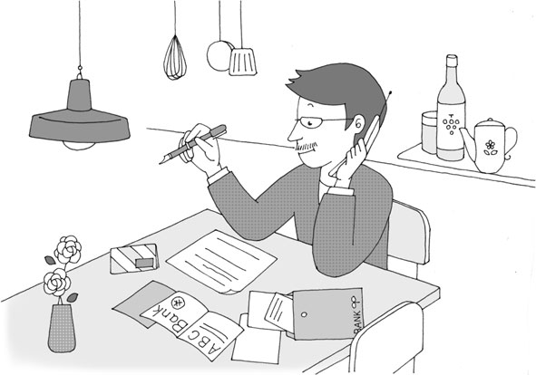

| [音声DL付]究極の英語リスニング Vol.3 3000語レベルで1万語[深まる3000語] 究極の英語リスニングシリーズ | |
| 株式会社アルク | |
| (2008) | |
参照項目から元の箇所に戻るには、お使いのビューワーの仕様に従ってください。または一旦目次を表示し、戻りたい箇所の近くの見出しをタップして戻ってください。
■ Foreword
はじめに
3000語の力があれば、
踏み込んだ内容が聞き取れる
『究極の英語リスニング 3000語レベルで１万語』は、アルクが編集した「標準語彙水準12000」（Standard Vocabulary List［略称SVL 12000］）をベースにした、全く新しいタイプのリスニング教材です。
本書の英文はSVLのLEVEL 1〜3、つまり初・中級レベルの3000語だけ＊で構成されています。とにかく効率良くリスニング力を伸ばしたい、あるいは、ニュース英語に手を出してみたけれど、難しすぎて挫折してしまった──そんな方にこの本はオススメです。音声の内容は、日常生活や旅行、仕事の場面での会話や説明、有名な人物や観光地の紹介、経済や芸能ニュースなど多岐にわたります。内容をきちんと理解して、楽しみながらリスニングに取り組むことを目標としてください。
見覚えのある単語だけで構成されているからと言って、内容が簡単ということはありません。基本的な単語が持つ多彩な意味に驚くこともあるでしょう。本書を通してリスニング力をアップし、さらに語彙力も増強してください。
＊固有名詞は除く
■ Contents
目次
■ Features
本書の特徴
1
複雑な内容になっても、たったの3000語で聞き取れる！
SVL 12000
LEVEL 10~12
→超上級の3000語
LEVEL 7~9
→上級の3000語
LEVEL 4~6
→中級の3000語
LEVEL 3 ※本書のレベル
→ちょっと踏み込む1000語
LEVEL 2
→日常生活をカバーする1000語
LEVEL 1
→基本中の基本の1000語
標準語彙水準12000（SVL 12000）は、日本人英語学習者にとって有用な英単語を全12段階にレベル分けした語彙リストです。本書は、SVL 12000の初・中級レベルに相当する、LEVEL 1〜3の単語3000語だけ*を使った英文で構成されています。
この3000語は、日常生活で頻繁に使われている、重要な語ばかりです。しかし、たとえ見覚えのある単語であっても、意外と聞き取りは難しいもの。特に日常で使われる大事な単語は、英文の中で繰り返し出現しますから、この機会に音とともにしっかり顔なじみになっておいてください。
＊固有名詞は除く
2
バリエーション豊かな英文で学習できる！
本書に収録されている英文は全部で45本。話される内容はもちろん、長さ、速さ、発音など、さまざまな面でバリエーション豊かな英文です。使用される語はわずか3000語でも、話される内容はオトナを対象としたもの。簡単な日常会話や旅行の場面ばかりとは限りません。
それぞれの英文は、速さや長さによって3段階の難易度に分けられています。ご自身の実力に合った英文から取り組むのも1つのテです。じっくりと耳を澄ませて、会話の内容を聞き取りましょう。
3
3つのMODEでキッチリ聞き取り！
本書では１つの英文に対し、以下の３つのMODEを用意しています。

ヒントなしで英文を聞きます。何も見ずに英文を聞いて、内容が把握できるか確認しましょう。
↓

語彙ヒントを見て、分からない語句を確認してから英文に取り組みます。
↓

日本語訳を見て、内容を理解してから英文を聞きます。
MODE 1で聞き取れれば、その英文は卒業。でも、中には一度では聞き取れないものもあるかもしれません。そんなときは、繰り返し聞いたり、MODE 2や3のヒントを頼りに聞いたりしてみましょう。あきらめずに繰り返し聞くことで、英語に耳が慣れ、少しずつ聞き取れる部分が増えてきます。最初は難易度が低い英文から取り組み、少しずつ取り組む英文のレベルを上げることで、英文の聞き取り能力をアップしてください。
■ How to use
本書の使い方
▶語数
取り上げる英文の総語数です。
▶難易度
取り上げる英文の難易度です。以下の3段階に分かれています。
★☆☆：易。130WPM（１分間に130語）未満のスピードで読まれている、200語未満の英文です。
★★☆：普通。130WPM以上、165WPM未満のスピードで読まれている300語未満の英文です（130WPM未満でも、200語～300語の英文はここに分類されます）。
★★★：難。165WPM以上のスピードで読まれている英文です（165WPM未満でも、300語以上の英文は、ここに分類されます）。
▶状況
取り上げる英文の状況や背景を説明しています。
▶チャレンジMODE
ヒントなし
何も見ずに英文を聞くMODEです。一度で大まかな内容が把握できなければ、何度か聞いても構いません。内容を把握できたと思ったら、「聞き取れた？ 確認してみよう」に答えてみましょう。
語彙ヒント
定型表現などを紹介しています。MODE 1で英文理解の妨げとなった語句を確認してから、もう一度英文を聞いてください。その後、MODE 1では分からなかった「確認してみよう」の質問に答えましょう。
和訳ヒント
MODE 1と2では内容が理解できなかった場合、和訳を見て英文の内容を理解します。その後で、もう一度英文を聞き、答えを導ける部分が聞き取れた場合に、「確認してみよう」の質問に答えましょう。
▶音声
ダウンロードした音声を使用する部分は
DLvol.3_01 のように、ダウンロードした音声と同じトラック名で表示しています。該当のトラックを再生して学習してください。
▶聞き取れた？ 確認してみよう
MODE 1で聞いた英文をどの程度理解できているか、Q&A形式で確認します。質問は3つ。答えは英語で書き取りましょう。つづりが分からなければ、カタカナでもOKです。
▶話されていた英文はコレだ!
英文のトランスクリプション（音声を文字で書き起こしたもの）です。各単語がどのように発音されていたのか、文字を見ながら音声を聞いて、確認しましょう。下線部は「聞き取れた？ 確認してみよう」の答えを導ける部分です。
▶解答例
「聞き取れた？ 確認してみよう」の解答例と訳です。
無料ダウンロード音声について
本書に対応するMP3音声は、すべて無料でダウンロードしていただけます。
音声ダウンロードの方法
※PC専用のサイトです。まずはこちらにアクセス！
アルク ダウンロードセンター
http://www.alc.co.jp/dl/
（2015年2月時点の情報。今後詳細が変更になる可能性があります）
① 「ダウンロードリスト」の「英語」の中から、「究極の英語リスニング vol.3 無料ダウンロード音声」をクリック。
② 申し込みフォームに必要事項をご記入の上送信。
③ メールで「ダウンロードページURL」の案内が届きます。
④ 届いたURLにアクセスして、圧縮ファイルをダウンロードしてください。
ダウンロード音声ファイルについて
圧縮ファイルを解凍ソフトで展開の上、iTunesなどの音声再生ソフトで取りこんでご利用ください。音声再生ソフトでのファイルの取り込み方法や携帯音楽プレーヤーでの利用方法については、ソフトやプレーヤーに付属するマニュアルでご確認ください。
音声ファイルは、音声再生ソフトで次のように表示されます。
出版社名（アーティスト名）：「ALC PRESS INC.」と表示。
書名（アルバム名）：『究極の英語リスニング vol.3』
ダウンロードした音声のトラック名は
［vol.3_01］のように、［巻数_トラック番号］のルールで表示されます。本書の該当のトラック番号を確認して再生し、学習してください。
第１章
CHAPTER 1
生活に根付いた英語を聞いてみよう
まずは、日常的な場面で耳にする英語を聞いて力試し。
第１章では、家族同士や店員との日常的な会話をはじめ、
レシピの説明やテレビのコマーシャルなど、
さまざまな英文を聞き取ります。どんなことが
話されているのか、耳を澄ませてみましょう。
第１章
生活に根付いた英語を聞いてみよう
語数：130／聞き取り難易度：★☆☆
語数：170／聞き取り難易度：★★☆
語数：144／聞き取り難易度：★★☆
語数：181／聞き取り難易度：★★☆
語数：350／聞き取り難易度：★★★
語数：170／聞き取り難易度：★★★
語数：339／聞き取り難易度：★★★
語数：180／聞き取り難易度：★★★
語数：303／聞き取り難易度：★★★
語数：156／聞き取り難易度：★★★
語数：362／聞き取り難易度：★★★
第１章 生活に根付いた英語を聞いてみよう
01おじいちゃん、これは何？
語数：130／難易度：★☆☆
祖父の家で、正体不明の大きな箱を見つけた孫。
箱の持ち主である祖父とのやりとりを聞いてみよう。
MODE1 ヒントなしでチャレンジ！
箱には何が入っているのだろうか。
一度で内容を把握できなかったら、繰り返し音声を聞いてみよう。
DLvol.3_01
◉ 聞き取れた？ 確認してみよう
以下の質問に答えて、どの程度会話の内容を聞き取れたか確認。解答はできるだけ英語で書こう（つづりが分からない場合はカタカナでもOK）。
① 孫は何を見つけた？
② 孫は①をどこで見つけた？
③ 孫が見つけたものの電源スイッチはどこにある？
Unit 01 おじいちゃん、これは何？
MODE2 語彙を確かめてチャレンジ！
聞き取りづらい語句や、定型表現などに目を通してから、もう一度音声を聞いてみよう。内容が確認できたら、再度「確認してみよう」に挑戦！
□Grandpa: おじいちゃん
□case: 箱、容器
□underneath: 〜の下に
□See?: ほらね？、分かるかい？
□my boy: 坊や
□look like 〜: 〜のように見える
□kind of 〜: やや〜、ある程度〜
□personal computer: パソコン
□work: （機械などが）作動する
□roll 〜 into ...: 〜を......に巻き込む
□directly: じかに、直接に
□type:［動詞で］〜をタイプする、〜をタイプライターで打つ、［名詞で］活字、字体
□power switch: 電源スイッチ
□electricity: 電気
□scientific: 科学的な
□manage to 〜: 何とか〜する、うまく〜する
□get along fine: うまくやっていく
□invent: 〜を発明する
□imagine: 〜を想像する
□survive: 〜を乗り切る、耐える
DLvol.3_01
◉ 聞き取れた？ 確認してみよう
以下の質問に答えて、どの程度会話の内容を聞き取れたか確認。解答はできるだけ英語で書こう（つづりが分からない場合はカタカナでもOK）。
① 孫は何を見つけた？
② 孫は①をどこで見つけた？
③ 孫が見つけたものの電源スイッチはどこにある？
Unit 01 おじいちゃん、これは何？
MODE3 和訳を読んでチャレンジ！
どんな内容の会話だったのか、和訳に目を通して確認。その後、もう一度音声を聞いて、「確認してみよう」の答えとなる部分が聞き取れたら、それを書き出してみよう。
孫：おじいちゃん、この箱の中には何が入っているの？ おじいちゃんのベッドの下で見つけたんだ。
祖父：開けてごらん。分かるかい？ それはね、坊や、タイプライターというんだよ。
孫：ちょっとコンピューターのキーボードみたいだね。
祖：おじいちゃんが子どものころは、パソコンはなかったんだよ。タイプライターで書いていたんだ。
孫：どんな風に動くの？
祖：紙を1枚手に取って、こんな風に機械に巻き込むんだ。
孫：画面はどこにあるの？
祖：画面はないよ。紙に直接タイプするんだ。
孫：使う字体はどうやって選ぶの？
祖：1種類しかないんだよ。
孫：電源スイッチはどこ？
祖：そういうものもないんだよ。
孫：全く電気を使わないの？ あまり科学的じゃない感じだね。
祖：そうかもしれないね、でもコンピューターが発明される前は、人間はタイプライターだけで十分うまくやってきたんだよ。
孫：どうやって乗り切ったのか想像もつかないや！
DLvol.3_01
◉ 聞き取れた？ 確認してみよう
以下の質問に答えて、どの程度会話の内容を聞き取れたか確認。解答はできるだけ英語で書こう（つづりが分からない場合はカタカナでもOK）。
① 孫は何を見つけた？
② 孫は①をどこで見つけた？
③ 孫が見つけたものの電源スイッチはどこにある？
Unit 01 おじいちゃん、これは何？
◉ 話されていた 英文はコレだ！
最後に、会話のトランスクリプション（音声を文字で書き起こしたもの）を確認しよう。下線部が、「確認してみよう」の答えを導ける部分だ。
DLvol.3_01
Grandson: Grandpa, what's in this case?②I found it underneath your bed.
Grandfather: Open it. See?①That, my boy, is called a typewriter.
GS: It looks kind of like a computer keyboard.
GF: When I was a boy, there were no personal computers. We wrote with typewriters.
GS: How does it work?
GF: You take a piece of paper and roll it into the machine like this.
GS: Where's the screen?
GF: It doesn't have one. You type directly onto the paper.
GS: How do you select the kind of type to use?
GF: It only has one.
GS:③Where's the power switch?
GF:③It doesn't have one of those either.
GS: It doesn't use any electricity? That doesn't sound very scientific.
GF: Maybe not, but people managed to get along fine using typewriters before computers were invented.
GS: I can't imagine how they survived!
Unit 01 おじいちゃん、これは何？
◉ 解答例
① 孫は何を見つけた？
He found a typewriter.
（タイプライターを見つけた）
② 孫は①をどこで見つけた？
He found it underneath the grandpa's bed.
（祖父のベッドの下で見つけた）
③ 孫が見つけたものの電源スイッチはどこにある？
It doesn't have any power switch.
（電源スイッチはない）
再チャレンジGO!
第１章 生活に根付いた英語を聞いてみよう
02電話で情報収集
語数：170／難易度：★★☆

男性が情報を求めて銀行に電話をかけている。
彼は何をしたいのだろうか。
MODE1 ヒントなしでチャレンジ！
男性が電話をかけた理由は？
DLvol.3_02
◉ 聞き取れた？ 確認してみよう
以下の質問に答えて、どの程度会話の内容を聞き取れたか確認。解答はできるだけ英語で書こう。
① 男性は何のために電話をかけた？
② 金利は何に影響される？
③ 電話の結果、男性はどうすることにした？
Unit 02 電話で情報収集
MODE2 語彙を確かめてチャレンジ！
聞き取りづらい語句や、定型表現などに目を通してから、もう一度音声を聞いてみよう。内容が確認できたら、再度「確認してみよう」に挑戦！
□Central Bank: セントラル銀行（架空の銀行名）
□How may I 〜?: どのように〜しましょうか。
□direct: （電話）をつなぐ
□account: 口座
□business: 法人の、商売上の
□hold on: （電話を切らないで）待つ
□transfer: （電話）を回す
□department: 部門、課
□How can I help you?: どのようなご用件ですか。
□savings account: 普通預金口座
□check: 小切手
□attach 〜 to ...: 〜を......に付随させる
□affect: 〜に影響を及ぼす
□amount of 〜: 〜の額
□interest: 利子
□depend on 〜: 〜による
□balance: 残高
□otherwise: さもなければ
□fee: 手数料
□offer: 〜を提案する
□option: 選択肢
□Why don't you 〜?: 〜したらいかがですか。
□suit: 〜に合う
DLvol.3_02
◉ 聞き取れた？ 確認してみよう
以下の質問に答えて、どの程度会話の内容を聞き取れたか確認。解答はできるだけ英語で書こう。
① 男性は何のために電話をかけた？
② 金利は何に影響される？
③ 電話の結果、男性はどうすることにした？
Unit 02 電話で情報収集
MODE3 和訳を読んでチャレンジ！
どんな内容の会話だったのか、和訳に目を通して確認。その後、もう一度音声を聞いて、「確認してみよう」の答えとなる部分が聞き取れたら、それを書き出してみよう。
女性1：本日は、セントラル銀行にお電話いただきありがとうございます。リンダ・バーンズです。どちらにおつなぎしましょうか。
男性：新しい口座の開設のことでどなたかに相談したいのですが。
女1：法人の口座ですか、個人の口座ですか。
男：個人です。
女1：少々お待ちください。新規口座担当の部署におつなぎいたします。
男：ありがとう。
女性2：おはようございます。ジャニス・ステファンズです。どのようなご用件でしょうか。
男：個人の普通預金口座の新規開設について、教えていただきたいのですが。
女2：個人口座にはいくつか種類がございます。口座に付随して、小切手やクレジットカードもご利用になりますか。
男：それは私が受け取れる利子の額に影響しますか。
女2：それは口座の残高によります。残高を常に2万ドルを超えるようにしていらっしゃれば、小切手とクレジットカードは無料になります。そうでない場合は、毎月手数料がかかります。
男：ああ、そうですか。そんなにはないです。
女2：いくつか選択肢をご用意しております。当行にお越しになってはいかがでしょう？ 何かしらご希望に沿うものをご提供できると思いますが。
男：そうですね。そうしましょう。
女2：お電話ありがとうございました。
男：では。
DLvol.3_02
◉ 聞き取れた？ 確認してみよう
以下の質問に答えて、どの程度会話の内容を聞き取れたか確認。解答はできるだけ英語で書こう。
① 男性は何のために電話をかけた？
② 金利は何に影響される？
③ 電話の結果、男性はどうすることにした？
Unit 02 電話で情報収集
◉ 話されていた 英文はコレだ！
最後に、会話のトランスクリプションを確認しよう。下線部が、「確認してみよう」の答えを導ける部分だ。
DLvol.3_02
Woman1: Thank you for calling Central Bank this morning. This is Linda Barnes. How may I direct your call?
Man:①I'd like to talk to someone about opening a new account.
W1: Would this be a business or personal account?
M: Personal.
W1: Please hold on. I'll transfer your call to our new accounts department.
M: Thank you.
Woman2: Good morning. This is Janis Stephens. How can I help you?
M:①I'd like some information about opening a new personal savings account.
W2: We have several types of personal accounts. Do you want checks and a credit card attached to the account?
M: Would that affect the amount of interest I get?
W2:②That depends on the balance you keep in the account. If you keep your balance above 20,000 dollars, checks and credit cards are free. Otherwise, there is a monthly fee.
M: Oh, I see. I don't have that much.
W2: We do offer several options.③Why don't you visit the bank? I'm sure we offer something that will suit your needs.
M: OK. I'll do that.
W2: Thank you for calling.
M: Goodbye.
Unit 02 電話で情報収集
◉ 解答例
① 男性は何のために電話をかけた？
To get some information about opening a new personal savings account.
（個人普通預金口座の新規開設について情報を得るため）
② 金利は何に影響される？
It depends on the balance he keeps in the account.
（男性の口座残高による）
③ 電話の結果、男性はどうすることにした？
He'll visit the bank.
（銀行へ行く）
再チャレンジGO!
第１章 生活に根付いた英語を聞いてみよう
03楽しい大学生活
語数：144／難易度：★★☆
ここでは、大学に入学したばかりの息子と、息子が心配でならない母親の会話を聞いてみよう。
MODE1 ヒントなしでチャレンジ！
息子が大学生活を満喫している様子を聞き取ろう。
DLvol.3_03
◉ 聞き取れた？ 確認してみよう
以下の質問に答えて、どの程度会話の内容を聞き取れたか確認。解答はできるだけ英語で書こう。
① 息子は英文学の授業で何をしなければならない？
② 母親は息子をどう評価している？（2つ）
③ 息子が通う大学のキャンパスの環境は？
Unit 03 楽しい大学生活
MODE2 語彙を確かめてチャレンジ！
聞き取りづらい語句や、定型表現などに目を通してから、もう一度音声を聞いてみよう。内容が確認できたら、再度「確認してみよう」に挑戦！
□lecture: 講義
□English literature: 英文学
□be required to 〜: 〜するよう命じられている
□essay: 小論、作文
□you've always been 〜: あなたは常に〜だった
□creative writing: 創作、作文
□social life: 社交
□explore: 〜を探検する、探索する
□play: 演劇
□entertainment: 楽しみ、娯楽
□smart: 賢い、抜け目のない
□sensible: 分別がある、賢明な
□Mom: ママ
DLvol.3_03
◉ 聞き取れた？ 確認してみよう
以下の質問に答えて、どの程度会話の内容を聞き取れたか確認。解答はできるだけ英語で書こう。
① 息子は英文学の授業で何をしなければならない？
② 母親は息子をどう評価している？（2つ）
③ 息子が通う大学のキャンパスの環境は？
Unit 03 楽しい大学生活
MODE3 和訳を読んでチャレンジ！
どんな内容の会話だったのか、和訳に目を通して確認。その後、もう一度音声を聞いて、「確認してみよう」の答えとなる部分が聞き取れたら、それを書き出してみよう。
母親：大学の最初の1週間はどうだった？
息子：すごく良かったよ！ 授業が本当に面白いんだ。
母：時間割を教えてちょうだい。
子：月曜日、水曜日、金曜日に、英文学の授業があるんだ。そのクラスでは毎週、作文を書かなきゃいけないんだよ。
母：それは問題ないでしょう。あなたは昔から文章を書くのが上手だから。
子：そうだね、きっと楽しめると思う。それと創作のクラスも取っているんだ。
母：面白そうね。社交面はどうなの？
子：もう何人か新しい友達ができたし、キャンパスを探検しているんだよ。すごくいい環境なんだ。建物は古いけど快適だし、週末にはたくさんの楽しい催しがあるし。
母：例えば？
子：そうだね、映画、コンサート、演劇、パーティー。でも心配しないで。遊ぶことを考える前に宿題は終わらせるから。
母：そうするって分かってるわよ。あなたはいつでも要領がよくて、分別がある子だったから。
子：ありがとう、ママ。
DLvol.3_03
◉ 聞き取れた？ 確認してみよう
以下の質問に答えて、どの程度会話の内容を聞き取れたか確認。解答はできるだけ英語で書こう。
① 息子は英文学の授業で何をしなければならない？
② 母親は息子をどう評価している？（2つ）
③ 息子が通う大学のキャンパスの環境は？
Unit 03 楽しい大学生活
◉ 話されていた 英文はコレだ！
最後に、会話のトランスクリプションを確認しよう。下線部が、「確認してみよう」の答えを導ける部分だ。
DLvol.3_03
Mother: How was your first week at the university?
Son: It was great! My classes are really interesting.
M: Tell me about your schedule.
S: On Monday, Wednesday and Friday I have lectures in English literature.①I'm required to write an essay every week for that class.
M: That shouldn't be a problem.②You've always been a good writer.
S: Yeah, I think I'm going to enjoy that. I'm also taking creative writing.
M: That should be fun. How about your social life?
S: I've already made some new friends and I've been exploring the campus.③It's a great environment. The buildings are old but comfortable and there are a lot of fun things to do on weekends.
M: Like what?
S: Oh, movies, concerts, plays, parties. But don't worry. I'll do all my homework before I think about entertainment.
M: I know you will.②You've always been a smart and sensible kid.
S: Thanks, Mom.
Unit 03 楽しい大学生活
◉ 解答例
① 息子は英文学の授業で何をしなければならない？
To write an essay every week.
（毎週、作文を書くこと）
② 母親は息子をどう評価している？（2つ）
He's always been a good writer.（昔から文章を書くのが上手だった）、 He's always been a smart and sensible kid.（いつでも要領がよくて、分別があった）
③ 息子が通う大学のキャンパスの環境は？
It's a great environment. The buildings are old but comfortable and there are a lot of fun things to do on weekends.
（とてもいい環境である。建物は古いが快適で、週末にはたくさんの楽しい催しがある）
再チャレンジGO!
第１章 生活に根付いた英語を聞いてみよう
04次の選挙はどうする？
語数：181／難易度：★★☆
間もなく４年に一度の大統領選。
選挙について、ある夫婦の会話を聞いてみよう。
MODE1 ヒントなしでチャレンジ！
2人は候補者について、どんな考えを持っているのだろうか。
DLvol.3_04
◉ 聞き取れた？ 確認してみよう
以下の質問に答えて、どの程度会話の内容を聞き取れたか確認。解答はできるだけ英語で書こう。
① 男性は現職の大統領についてどんな評価をしている？
② 2人が挙げている、次の大統領が取り組むべき課題は？（8つ）
③ 女性はなぜ次の大統領に教育問題に取り組んでほしいと思っている？
Unit 04 次の選挙はどうする？
MODE2 語彙を確かめてチャレンジ！
聞き取りづらい語句や、定型表現などに目を通してから、もう一度音声を聞いてみよう。内容が確認できたら、再度「確認してみよう」に挑戦！
□make a decision about 〜: 〜について決断する
□certainly: 確かに
□replace: 〜を取り替える
□effective: 効果的な
□domestic: 国内の
□international: 国際的な
□issue: 問題
□national security: 国家安全保障
□do something about 〜: 〜について何とかする
□international relations: 国際関係
□physical presence: 身体的な貫禄、存在感
□communicate well with 〜: 〜とうまくコミュニケーションを取る
□foreign leader: 外国の指導者
□credit: 信用度
□The list goes on and on.: 数え上げればきりがない。
□democratic: 民主的な
□whoever: 誰が〜しようとも
□I can't imagine 〜: 〜は想像もできない
DLvol.3_04
◉ 聞き取れた？ 確認してみよう
以下の質問に答えて、どの程度会話の内容を聞き取れたか確認。解答はできるだけ英語で書こう。
① 男性は現職の大統領についてどんな評価をしている？
② 2人が挙げている、次の大統領が取り組むべき課題は？（8つ）
③ 女性はなぜ次の大統領に教育問題に取り組んでほしいと思っている？
Unit 04 次の選挙はどうする？
MODE3 和訳を読んでチャレンジ！
どんな内容の会話だったのか、和訳に目を通して確認。その後、もう一度音声を聞いて、「確認してみよう」の答えとなる部分が聞き取れたら、それを書き出してみよう。
男性：来月の選挙で、どう投票するか決心した？
女性：決めるのがとても難しいわ。確かに今の大統領は辞めさせたいけど。
男：その点は賛成だよ。国内問題でも国際問題でもあまり成果を上げていないからね。
女：国の安全保障が大事なのは分かるけど、この国の教育を何とかしてくれる大統領が必要だわ。制度が機能してないんだもの。
男：その通りだけど、国際関係も重要だよ。外国の指導者とうまくコミュニケーションが取れる、身体的に存在感のある大統領が必要だね。
女：この国には解決しなければならない問題が山積しているのよ。犯罪、雇用、暴力、信用度。数え上げたら、きりがないわ。
男：そうだね。民主的な政府のはずなのに、貧乏人はますます貧乏に、金持ちはますます金持ちになっているみたいだ。
女：誰が選ばれたとしても、大変な仕事をやらなきゃいけないのよね。1人でそれができるなんて、想像もつかないわ。それに、どちらの候補者もあまり好きじゃないし。
男：ああ、あの2人からいい方を選ぶのは本当に難しいよ。どちらも普通すぎるからね。
DLvol.3_04
◉ 聞き取れた？ 確認してみよう
以下の質問に答えて、どの程度会話の内容を聞き取れたか確認。解答はできるだけ英語で書こう。
① 男性は現職の大統領についてどんな評価をしている？
② 2人が挙げている、次の大統領が取り組むべき課題は？（8つ）
③ 女性はなぜ次の大統領に教育問題に取り組んでほしいと思っている？
Unit 04 次の選挙はどうする？
◉ 話されていた 英文はコレだ！
最後に、会話のトランスクリプションを確認しよう。下線部が、「確認してみよう」の答えを導ける部分だ。
DLvol.3_04
Man: Have you made a decision about how you're going to vote in the election next month?
Woman: It's really hard to decide. I certainly want to replace the president.
M: I agree about that.①He hasn't been very effective with either domestic or international issues.
W:②I know national security is important, but we need a president who can do something about education in this country.③The system isn't working.
M: That's true but②international relations are also important. We need a president with a good physical presence who can communicate well with foreign leaders.
W:②There are so many problems to be solved in this country: crime, employment, violence, credit. The list goes on and on.
M: You're right. This is supposed to be a democratic government, but②it seems like the poor keep getting poorer and the rich keep getting richer.
W: Whoever does get elected has a big job to do. I can't imagine how one person can do it. And I don't really like either of the choices.
M: Yeah, it's really hard to choose the best one from those two. They're both too ordinary.
Unit 04 次の選挙はどうする？
◉ 解答例
① 男性は現職の大統領についてどんな評価をしている？
He hasn't been very effective with either domestic or international issues.
（国内問題でも国際問題でもあまり成果を上げていない）
② 2人が挙げている、次の大統領が取り組むべき課題は？（8つ）
national security（国の安全保障）、education（教育）、international relations（国際関係）、crime（犯罪）、employment（雇用）、violence（暴力）、credit（信用度）、gap between the poor and the rich（貧富の格差）
③ 女性はなぜ次の大統領に教育問題に取り組んでほしいと思っている？
Because the system isn't working.
（制度が機能していないから）
再チャレンジGO!
第１章 生活に根付いた英語を聞いてみよう
05おいしいカレーの作り方
語数：350／難易度：★★★
ここでは、カレーの作り方を聞いてみよう。
話し手はどんなカレーを作るのだろうか。
MODE1 ヒントなしでチャレンジ！
カレーには、どんな調味料が入れられるのだろう？
DLvol.3_05
◉ 聞き取れた？ 確認してみよう
以下の質問に答えて、どの程度内容を聞き取れたか確認。解答はできるだけ英語で書こう。
① カレーに入れる調味料として何が紹介されている？（6種類）
② カレーを作る際は、最初に何をするよう言っている？
③ cook for two whistlesとは、具体的には何をすること？
Unit 05 おいしいカレーの作り方
MODE2 語彙を確かめてチャレンジ！
聞き取りづらい語句や、定型表現などに目を通してから、もう一度音声を聞いてみよう。内容が確認できたら、再度「確認してみよう」に挑戦！
□Eastern: 東洋の
□Indian curry: インドカレー
□a vast number of 〜: 膨大な数の〜
□season: 〜に味を付ける
□a mix of Indian spices: ガラムマサラ（インド料理に使用する、複合スパイスの粉）
□a touch of 〜: 少量の〜
□secret: こつ、極意
□cut into very small pieces: とても細かく切った、みじん切りにした
□frying pan: フライパン
□cook 〜 at a very low temperature: 〜を弱火でいためる
□taste: 好み
□crush: 〜をつぶす
□chicken breast: 鶏の胸肉
□cut up 〜: 〜を刻む
□whistle: （笛吹きやかんの）笛
□experiment: 実験する
□for yourself: 自分で
□bold: 大胆な
DLvol.3_05
◉ 聞き取れた？ 確認してみよう
以下の質問に答えて、どの程度内容を聞き取れたか確認。解答はできるだけ英語で書こう。
① カレーに入れる調味料として何が紹介されている？（6種類）
② カレーを作る際は、最初に何をするよう言っている？
③ cook for two whistlesとは、具体的には何をすること？
Unit 05 おいしいカレーの作り方
MODE3 和訳を読んでチャレンジ！
どんな内容の話だったのか、和訳に目を通して確認。その後、もう一度音声を聞いて、「確認してみよう」の答えとなる部分が聞き取れたら、それを書き出してみよう。
東洋の食べ物の世界は楽しいものです。東洋の最高の料理の1つにインドカレーがあります。インドカレーは調理をするのも食べるのも楽しい料理です。カレーの種類は膨大な数に上ります。牛、鶏、豚、羊、魚やその他のシーフード、卵、チーズ、そしてさまざまな野菜を、いろいろな組み合わせで使うことができます。カレーにはタマネギ、ブロッコリー、マッシュルーム、ニンジン、ジャガイモ、グリーンピース、キャベツ、カボチャ、それに豆がよく入っています。カレーの味付け方法もさまざまで、塩、コショウ、カレーパウダー、ガラムマサラ、それに酢やレモン果汁を少し加えることもあります。私のお気に入りのカレーはバターチキンと言います。その作り方をお教えしましょう。
本当においしいインドカレーを作るこつは、タマネギのみじん切りから始めることです。そのタマネギを、バターと一緒にフライパンに入れて弱火で40分間いためます。タマネギは濃い茶色になり、とても柔らかくなります。ガラムマサラを加えます。お好みによってこのスパイスはたくさん使っても、少量でも構いません。スパイスの香りがするまでいためます。ニンニクを2片つぶして、フライパンのタマネギに加えます。鶏の胸肉の皮を取り除いてぶつ切りにします。火を強めて鶏肉を加えます。鶏肉が薄い茶色に色付くまでいためます。大きい生のトマト、もしくは缶詰のトマト3個分を切って加えます。クリームかヨーグルトを1カップ入れます。そして2回「笛が鳴る」ぐらいの時間をかけて煮ます。「笛が鳴る」とは、やかんで湯を沸かすのにかかる時間のことです。その本当の意味は、ソースにとろみが出るまで煮詰めるということです。そしてバターをもう少し加えて溶かします。これでカレーの出来上がりです！ ライスか、さまざまな種類のインドのパンを添えてお楽しみください。
これはインドカレーを作る方法の1つに過ぎません。ほかの肉や野菜の組み合わせも試してみてください。ソースも、トマトの代わりにスープや水も使えます。ご自分で工夫なさってみてください。大胆にね！
DLvol.3_05
◉ 聞き取れた？ 確認してみよう
以下の質問に答えて、どの程度内容を聞き取れたか確認。解答はできるだけ英語で書こう。
① カレーに入れる調味料として何が紹介されている？（6種類）
② カレーを作る際は、最初に何をするよう言っている？
③ cook for two whistlesとは、具体的には何をすること？
Unit 05 おいしいカレーの作り方
◉ 話されていた 英文はコレだ！
最後に、英文のトランスクリプションを確認しよう。下線部が、「確認してみよう」の答えを導ける部分だ。
DLvol.3_05
The world of Eastern foods is a delight. One of the best types of Eastern cooking is Indian curry. Indian curry is fun both to cook and to eat. There are a vast number of choices for the type of curry you can make. You can use beef, chicken, pork, lamb, fish or other seafood, eggs, cheese and a variety of vegetables in different combinations. Many curries include onions, broccoli, mushrooms, carrots, potatoes, green peas, cabbage, pumpkin and beans.①There are many different ways to season a curry, too, such as salt, pepper, curry powder, a mix of Indian spices or a touch of vinegar or lemon juice. My favorite Indian curry is called Butter Chicken. Let me explain how I make it.
②The secret to making a truly delicious Indian curry is to start with an onion cut into very small pieces. Cook the onion with some butter in a frying pan at a very low temperature for 40 minutes. The onion will become dark brown and very soft. Add a mix of Indian spices. You can use a lot or a little depending on your personal taste. Cook until you can smell the spices. Crush two pieces of garlic and add them to the onion in the pan. Remove the skin from a chicken breast and cut the meat into pieces. Raise the heat under the pan and add the chicken. Cook until the chicken is light brown. Cut up three large fresh tomatoes or tomatoes from a can and add them to the pan. Add a cup of cream or yogurt. Cook for two "whistles." A "whistle" is the time it takes for a kettle to boil.③What this really means is to cook until the sauce gets thick. Add some more butter and let it melt. The curry is done! Serve it with rice or any of the many types of Indian bread.
This is just one way to make Indian curry. Try other combinations of meat and vegetables. For the sauce, you can use soup or water instead of tomatoes. Experiment for yourself. Be bold!
Unit 05 おいしいカレーの作り方
◉ 解答例
① カレーに入れる調味料として何が紹介されている？（6種類）
salt（塩）、pepper（コショウ）、curry powder（カレーパウダー）、a mix of Indian spices（ガラムマサラ）、vinegar（酢）、lemon juice（レモン果汁）
② カレーを作る際は、最初に何をするよう言っている？
To cut an onion into very small pieces.
（タマネギをみじん切りにすること）
③ cook for two whistlesとは、具体的には何をすること？
To cook until the sauce gets thick.
（ソースにとろみが出るまで煮詰めること）
再チャレンジGO!
第１章 生活に根付いた英語を聞いてみよう
06卒業祝いに何をしよう？
語数：170／難易度：★★★
ここでは、娘のお祝い事に浮き立つ、ある夫婦の会話を聞いてみよう。
MODE1 ヒントなしでチャレンジ！
娘のスージーのために、2人は何を計画しているのだろうか。
DLvol.3_06
◉ 聞き取れた？ 確認してみよう
以下の質問に答えて、どの程度会話の内容を聞き取れたか確認。解答はできるだけ英語で書こう。
① 2人の娘は来月、何を卒業する？
② 父親はパーティーのために何を予約するつもり？
③ 母親は何をプレゼントするつもり？（2種類）
Unit 06 卒業祝いに何をしよう？
MODE2 語彙を確かめてチャレンジ！
聞き取りづらい語句や、定型表現などに目を通してから、もう一度音声を聞いてみよう。内容が確認できたら、再度「確認してみよう」に挑戦！
□graduate from 〜: 〜を卒業する
□college: 大学
□think of 〜 as ...: 〜を......と思う
□grown: 成長した、成熟した
□throw a party: パーティーを催す
□deserve: 〜に値する
□private room: 個室
□designer: 有名デザイナーの手による、デザイナーブランドものの
□have a weakness for 〜: 〜に目がない
□dark chocolate: ブラックチョコレート
□I'm not sure about 〜: 〜についてはよく分からない
□an argument with 〜: 〜とのけんか
□best friend: 親友
□Oh, dear.: あらまあ。
□convenient: 都合の良い
DLvol.3_06
◉ 聞き取れた？ 確認してみよう
以下の質問に答えて、どの程度会話の内容を聞き取れたか確認。解答はできるだけ英語で書こう。
① 2人の娘は来月、何を卒業する？
② 父親はパーティーのために何を予約するつもり？
③ 母親は何をプレゼントするつもり？（2種類）
Unit 06 卒業祝いに何をしよう？
MODE3 和訳を読んでチャレンジ！
どんな内容の会話だったのか、和訳に目を通して確認。その後、もう一度音声を聞いて、「確認してみよう」の答えとなる部分が聞き取れたら、それを書き出してみよう。
女性：スージーが来月大学を卒業するなんて、信じられないわ。
男性：気持ちは分かるよ。僕にはまだ小さな女の子に思えるのに、もう大人の女性なんだから。
女：いいことを考えたの。あの子のために、盛大なパーティーを開きましょうよ。彼女はそれに値するわよ。とてもきちんとやってきたんだもの。
男：そうだね。あの子のお気に入りのレストランの個室を予約しよう。
女：それから私は、プロのカメラマンを頼むわね、いい写真を撮ってもらえるように。
男：スージーは写真を勉強していたから喜ぶだろう。プレゼントはどうする？
女：あの子の欲しがっているブランドもののブラウスを知ってるわ。それにブラックチョコレートに目がないのよね。
男：それは良さそうだ。誰を招待しようか。
女：おじいちゃんとおばあちゃんには来てほしいと思うわよ。友達のことはよく分からないわね。
男：親友とのけんかについて何か言っていたな。
女：あらまあ。誰を呼びたいか、本人に聞いた方が良さそうね。
男：都合がいい日も聞かないとね。
女：今晩電話してみましょう。6時ごろに、授業から戻ってくるはずよ。
DLvol.3_06
◉ 聞き取れた？ 確認してみよう
以下の質問に答えて、どの程度会話の内容を聞き取れたか確認。解答はできるだけ英語で書こう。
① 2人の娘は来月、何を卒業する？
② 父親はパーティーのために何を予約するつもり？
③ 母親は何をプレゼントするつもり？（2種類）
Unit 06 卒業祝いに何をしよう？
◉ 話されていた 英文はコレだ！
最後に、会話のトランスクリプションを確認しよう。下線部が、「確認してみよう」の答えを導ける部分だ。
DLvol.3_06
Woman: I can't believe①Suzy is going to graduate from college next month.
Man: I know how you feel. I still think of her as a little girl but she's a grown woman.
W: I have a great idea. Let's throw her a big party. She deserves it. She's been so responsible.
M: OK.②I'll reserve a private room at her favorite restaurant.
W: And I'll get a professional photographer so we'll have some really good pictures.
M: Suzy would like that since she studied photography. What about presents?
W:③There's a designer blouse I know she wants. And she has a weakness for dark chocolate.
M: That sounds good. Who should we invite?
W: I'm sure she'll want her grandma and grandpa to come. I'm not sure about her friends.
M: She said something about an argument with her best friend.
W: Oh, dear. We'd better ask her who she wants to invite.
M: We need to ask her what day would be convenient, too.
W: Let's call her tonight. I think she gets home from her lectures at about 6 o'clock.
Unit 06 卒業祝いに何をしよう？
◉ 解答例
① 2人の娘は来月、何を卒業する？
She's going to graduate from college.
（大学を卒業する）
② 父親はパーティーのために何を予約するつもり？
He'll reserve a private room at their daughter's favorite restaurant.
（娘のお気に入りのレストランの個室を予約する）
③ 母親は何をプレゼントするつもり？（2種類）
a designer blouse（ブランドもののブラウス）、dark chocolate（ブラックチョコレート）
再チャレンジGO!
第１章 生活に根付いた英語を聞いてみよう
07テレビコマーシャル
語数：339／難易度：★★★
テレビから、コマーシャルが３本続けて流れてきた。
何が宣伝されているのか、聞き取ってみよう。
MODE1 ヒントなしでチャレンジ！
宣伝はそれぞれ、何をウリにしているのだろうか。
DLvol.3_07
◉ 聞き取れた？ 確認してみよう
以下の質問に答えて、どの程度宣伝の内容を聞き取れたか確認。解答はできるだけ英語で書こう。
① 「スクイーキークリーン」の使用法は？
② 「ドリームランド」の飲み方は？
③ 「オレンジガーデン」ではどんなイベントがある？
Unit 07 テレビコマーシャル
MODE2 語彙を確かめてチャレンジ！
聞き取りづらい語句や、定型表現などに目を通してから、もう一度音声を聞いてみよう。内容が確認できたら、再度「確認してみよう」に挑戦！
□be tired of 〜: 〜にうんざりする
□take up 〜: （時間）を取る
□bathroom cleaner: 風呂用洗剤
□Squeaky Clean bath and shower cleaner: スクイーキークリーン風呂＆シャワー用洗剤（架空の商品名）
□wipe 〜 on: 〜を拭いて付ける
□wash 〜 off: 〜を洗い流す
□take hours: 長時間かかる
□bargain: お買い得品
□cost one-third less than 〜: 〜の3分の2の値段である
□compare 〜 to ...: 〜を......と比較する
□leading brand: 主要ブランド
□toss and turn: ごろごろと寝返りを打つ
□ceiling: 天井
□fall asleep: 眠り込む
□Dreamland: ドリームランド（架空の睡眠薬の名）
□sleep medicine: 睡眠薬
□pill: 錠剤
□get through 〜: 〜を乗り切る
□Orange Garden: オレンジガーデン（架空の施設名）
□for one low price: お得な単一価格で
□wash 〜 down: 〜を流し込む
□ice cold: よく冷えた
□satisfy: 〜を満足させる
DLvol.3_07
◉ 聞き取れた？ 確認してみよう
以下の質問に答えて、どの程度宣伝の内容を聞き取れたか確認。解答はできるだけ英語で書こう。
① 「スクイーキークリーン」の使用法は？
② 「ドリームランド」の飲み方は？
③ 「オレンジガーデン」ではどんなイベントがある？
Unit 07 テレビコマーシャル
MODE3 和訳を読んでチャレンジ！
どんな内容の宣伝だったのか、和訳に目を通して確認。その後、もう一度音声を聞いて、「確認してみよう」の答えとなる部分が聞き取れたら、それを書き出してみよう。
毎日、風呂場やシャワーを掃除するのはうんざりですか。家事に大事な時間を取られ過ぎていませんか。あなたの風呂場用洗剤の値段は高すぎませんか。新しいスクイーキークリーンお風呂＆シャワー洗剤が、それらの問題の解決策です。スクイーキークリーンは使いやすいのです。こすりつけて、水で洗い流すだけです。今まで長時間かかっていた作業が、わずか数分で終わります。スクイーキークリーンを1回使えば、風呂場はさっぱりきれいな状態を保ちます。スクイーキークリーンはお買い得でもあります。主要ブランドで一番人気の商品の3分の２の価格なのです。売り上げ１位の主要ブランドの洗剤をスクイーキークリーンと比べてみました。主要ブランドの方は、汚れと油分が残りました。新しいスクイーキークリーンなら、ピカピカした輝きとさわやかないい香りしか残しません。ほかの製品についてはご覧になったことがおありでしょう。最高のものをお試しください。新しいスクイーキークリーン──お風呂場をいつまでもさわやかに清潔に保つために。
毎晩ベッドで寝返りを繰り返しているあなた、それは睡眠のサイクルが狂っているサインかもしれません。眠りたいと思いながら一晩中天井を見つめているのなら、医師にドリームランドについてお尋ねください。ドリームランドは快眠をもたらす睡眠薬です。寝る30分前に1錠お飲みください。深い眠りが訪れ、忙しい1日を乗り切るエネルギーとともに目覚めることができるでしょう。ドリームランドをお試しください。あなたに必要な眠りをもたらしてくれるはずです。
エビはお好きですか。オレンジガーデンの特別なエビ祭りにお越しください。お得な一括料金で、エビが食べ放題です。焼きます、ゆでます、揚げます。エビサラダ、エビスープ、想像もつかないエビ料理もご用意しております。よく冷えたビールや、ドリンクバーの各種ソフトドリンクとともにお楽しみください。おなかいっぱい召し上がって、皿洗いは私どもにお任せください。オレンジガーデン。皆さまの夢をかなえます。
DLvol.3_07
◉ 聞き取れた？ 確認してみよう
以下の質問に答えて、どの程度宣伝の内容を聞き取れたか確認。解答はできるだけ英語で書こう。
① 「スクイーキークリーン」の使用法は？
② 「ドリームランド」の飲み方は？
③ 「オレンジガーデン」ではどんなイベントがある？
Unit 07 テレビコマーシャル
◉ 話されていた 英文はコレだ！
最後に、宣伝のトランスクリプションを確認しよう。下線部が、「確認してみよう」の答えを導ける部分だ。
DLvol.3_07
Are you tired of cleaning your bathtub and shower every day? Is housework taking up too much of your precious time? Does your bathroom cleaner cost too much? New Squeaky Clean bath and shower cleaner is the answer to these problems. Squeaky Clean is easy to use.①Just wipe it on and wash it off with water. A job that used to take hours is done in just minutes. Use Squeaky Clean once and your bathroom will stay fresh and clean. And Squeaky Clean is a bargain. It costs one-third less than the most popular leading brands. We compared the number one leading brand of cleaner to new Squeaky Clean. The leading brand left dirt and oil behind. New Squeaky Clean leaves behind nothing but a bright shine and a fresh, clean smell. You've seen the rest. Now try the best. New Squeaky Clean---for a fresh, clean bathroom that lasts and lasts.
If you toss and turn in bed all night, it could be a signal that something is wrong with your sleep cycle. If you look at the ceiling all night, wishing that you could fall asleep, maybe you should ask your doctor about Dreamland. Dreamland is a sleep medicine that gives you a good night's sleep.②Take one pill half an hour before bedtime. You will sleep deeply and wake up with the energy you need to get through your busy day. Try Dreamland. It can help you get the sleep you need.
Do you love shrimp?③Come to the Orange Garden for our special shrimp festival. You can eat all the shrimp you want for one low price. We bake them; we boil them; we fry them. We have shrimp salad, shrimp soup, shrimp cooked in ways you've never dreamed of. Wash it all down with a pitcher of ice cold beer or any of a variety of soft drinks from our drink bar. Satisfy your hunger and let us take care of the dishes. Orange Garden. Let us make your dreams come true.
Unit 07 テレビコマーシャル
◉ 解答例
① 「スクイーキークリーン」の使用法は？
Just wipe it on and wash it off with water.
（こすりつけて、水で洗い流すだけでいい）
② 「ドリームランド」の飲み方は？
Take one pill half an hour before bedtime.
（寝る30分前に１錠飲む）
③ 「オレンジガーデン」ではどんなイベントがある？
There is a special shrimp festival.
（特別なエビ祭りがある）
再チャレンジGO!
第１章 生活に根付いた英語を聞いてみよう
08住環境の変化
語数：180／難易度：★★★
ある地域に住んで15年になる夫婦。
２人が好きだった地域も変化してしまい......。
MODE1 ヒントなしでチャレンジ！
2人が住む地域には、どんな変化が起こったのだろうか。
DLvol.3_08
◉ 聞き取れた？ 確認してみよう
以下の質問に答えて、どの程度会話の内容を聞き取れたか確認。解答はできるだけ英語で書こう。
① 2人の住んでいる場所は、かつてはどんな場所だった？
② 2人の住んでいる場所は、具体的には今はどうなってしまった？（4つ）
③ 女性はシェーディー ・エーカーズに、どんな印象を持っている？
Unit 08 住環境の変化
MODE2 語彙を確かめてチャレンジ！
聞き取りづらい語句や、定型表現などに目を通してから、もう一度音声を聞いてみよう。内容が確認できたら、再度「確認してみよう」に挑戦！
□neighborhood: 近所
□paradise: 楽園、理想の地
□sign of 〜: 〜の兆候
□neglect: 無視、放置
□property values: 資産価値
□quality of life: 生活の質
□dramatic: 劇的な
□development: 開発地、住宅団地
□Shady Acres: シェーディー・エーカーズ（架空の地名）
□go have a look: 見に行く
□can afford to 〜: 〜する金銭的余裕がある
□find out: （答えを）出す
□continue to 〜: 〜し続ける
DLvol.3_08
◉ 聞き取れた？ 確認してみよう
以下の質問に答えて、どの程度会話の内容を聞き取れたか確認。解答はできるだけ英語で書こう。
① 2人の住んでいる場所は、かつてはどんな場所だった？
② 2人の住んでいる場所は、具体的には今はどうなってしまった？（4つ）
③ 女性はシェーディー ・エーカーズに、どんな印象を持っている？
Unit 08 住環境の変化
MODE3 和訳を読んでチャレンジ！
どんな内容の会話だったのか、和訳に目を通して確認。その後、もう一度音声を聞いて、「確認してみよう」の答えとなる部分が聞き取れたら、それを書き出してみよう。
女性：この家を買ったときから、こんなにご近所が変わってしまったなんて信じられない。
男性：その通りだね。ここは天国だと思ったのに。
女：そうだったのよ！ 通りはきれいで静かだったし、ご近所の皆さんのことも好きだったし。
男：でも、今ではこの辺の家は放置されている様子だよね。資産価値も落ちてしまった。
女：若者はドラッグを使っているし、以前に比べて暴力事件も増えたし。もうこの地域で安心することはできないのよ。
男：そうだね、前より生活の質も落ちているし。本当に劇的な変化だよなあ。
女：唯一変わらないことは、物事は常に変わり続けるということだけなのね。
男：引っ越しは考えた？ 町の反対側にシェーディー・エーカーズっていう、すてきな開発地区があるけど。僕の上司がそこに寝室が3つある立派な家を買ったんだって。とても住み心地がいいと言ってるよ。
女：次の週末に見に行きましょうか。でもシェーディー・エーカーズは高そうよね。私たちでもそこに家を買えるかしら？
男：調べておくよ。これ以上ここに住むことは、無理そうだからね。
DLvol.3_08
◉ 聞き取れた？ 確認してみよう
以下の質問に答えて、どの程度会話の内容を聞き取れたか確認。解答はできるだけ英語で書こう。
① 2人の住んでいる場所は、かつてはどんな場所だった？
② 2人の住んでいる場所は、具体的には今はどうなってしまった？（4つ）
③ 女性はシェーディー ・エーカーズに、どんな印象を持っている？
Unit 08 住環境の変化
◉ 話されていた 英文はコレだ！
最後に、会話のトランスクリプションを確認しよう。下線部が、「確認してみよう」の答えを導ける部分だ。
DLvol.3_08
Woman: I can't believe how much this neighborhood has changed since we bought this house.
Man: I know what you mean. We thought it was paradise.
W: It was!①The streets were clean and quiet and we liked all our neighbors.
M: But now②the houses around here show signs of neglect. Property values have gone down.
W:②Young people are using drugs and there is more violence than there used to be. I don't feel safe in this community anymore.
M: Yes, the quality of life here is worse than it was. It's really a dramatic change.
W: I guess the only thing that doesn't change is that things are always changing.
M: Have you considered moving? There's a nice development on the other side of town called Shady Acres. My boss bought a nice three bedroom house there. He says he really likes living there.
W: Maybe next weekend we should go have a look. But③Shady Acres sounds expensive. Do you think we can afford to buy a house there?
M: I'll do some research and find out. We really can't continue to live here much longer.
Unit 08 住環境の変化
◉ 解答例
① 2人の住んでいる場所は、かつてはどんな場所だった？
The streets were clean and quiet and they liked all their neighbors.
（通りはきれいで静かだったし、近所の皆のことも好きだった）
② 2人の住んでいる場所は、具体的には今はどうなってしまった？（4つ）
The houses around here show signs of neglect.（この辺の家は放置されている様子である）、Property values have gone down.（資産価値が落ちてしまった）、Young people are using drugs.（若者はドラッグを使っている）、There is more violence than there used to be.（以前に比べて暴力事件が増えた）
③ 女性はシェーディー ・エーカーズに、どんな印象を持っている？
She thinks it sounds expensive.
（高そうだと思っている）
再チャレンジGO!
第１章 生活に根付いた英語を聞いてみよう
09面白い話をして！
語数：303／難易度：★★★
けがをして退屈している男の子の元に、近所に住む友達２人が見舞いにやってきた。
MODE1 ヒントなしでチャレンジ！
友達は男の子に、どんな話をしているのだろうか。
DLvol.3_09
◉ 聞き取れた？ 確認してみよう
以下の質問に答えて、どの程度会話の内容を聞き取れたか確認。解答はできるだけ英語で書こう。
① 1つ目の話で、レストランの従業員が逃げ出した理由は？
② 2つ目の話で、強盗が失敗した理由は？
③ 男の子がテレビを見せてもらえない理由は？
Unit 09 面白い話をして！
MODE2 語彙を確かめてチャレンジ！
聞き取りづらい語句や、定型表現などに目を通してから、もう一度音声を聞いてみよう。内容が確認できたら、再度「確認してみよう」に挑戦！
□local: 地元の
□downtown: 中心街の
□break into 〜: 〜に侵入する
□become frightened: 怖くなる
□run out 〜: 〜から逃げる
□back door: 裏口
□report: 〜を通報する
□thieves: 泥棒（thiefの複数形）
□belong to 〜: 〜の所有である
□history of crimes: 犯罪歴
□rob: 〜を盗む
□threaten 〜 with ...: 〜を......で脅す
□shopkeeper: 小売店主
□a fan of 〜: 〜のファン、マニア
□break one's leg: 足の骨を折る
□rush 〜 to ...: 〜を急いで......へ連れて行く
□Superman: スーパーマン（漫画や映画『スーパーマン』の主人公）
□saying: ことわざ
□one gets what one deserves: 自業自得
□silly sausage: おばかさん
DLvol.3_09
◉ 聞き取れた？ 確認してみよう
以下の質問に答えて、どの程度会話の内容を聞き取れたか確認。解答はできるだけ英語で書こう。
① 1つ目の話で、レストランの従業員が逃げ出した理由は？
② 2つ目の話で、強盗が失敗した理由は？
③ 男の子がテレビを見せてもらえない理由は？
Unit 09 面白い話をして！
MODE3 和訳を読んでチャレンジ！
どんな内容の会話だったのか、和訳に目を通して確認。その後、もう一度音声を聞いて、「確認してみよう」の答えとなる部分が聞き取れたら、それを書き出してみよう。
男の子1：ジャック、面白い話をして！ テレビも見られなくて、すごく退屈してるんだ！
男の子2：分かった。最近聞いたおかしな話だよ。地元の男性が夜遅く、中心街にあるレストランの台所で働いていたんだ。彼は何者かが店に押し入った物音を聞いて怖くなった。男性は裏口から逃げ出すと、キーが差しっぱなしのトラックを見つけたから、それに飛び乗って家に帰ってしまったんだ。それから男性は、警察に電話して、レストランの泥棒について通報した。警察は、トラックがその地域で何度も犯罪を繰り返しているメルビン･ホートンのものであることを突き止めた。警察がホートンの自宅を捜索したところ、レストランから盗まれた金を発見したんだよ。ホートンは金を、レストランの名前が印刷された紙袋に入れていたんだってさ！
男の子3：こんな話もあるよ。ある晩、どこかの小さなスーパーに泥棒が盗みに入ろうとしたんだって。泥棒は店主に銃を突きつけて「有り金をすべてよこせ、さもないと撃つぞ」と脅かしたんだ。店主は銃マニアだったから、その銃がおもちゃだって見抜いたんだよ。彼は笑って泥棒に店から出て行くように言ったんだ。「おまえさんは立派な強盗になるにはマヌケすぎる」と言ったんだって。
男1：僕もお話できるよ！ 今日、5歳の男の子が自分の家の屋根から飛び降りて足を骨折したんだ。パパとママは救急車を呼んで急いで男の子を病院に連れて行ったんだよ。なぜそんなことをしたのかと聞かれると、男の子は「スーパーマンが飛べるなら、僕も飛べると思ったんだ」と答えたんだ。お医者さんは、男の子は大丈夫だって言ったけど、パパとママに、男の子がテレビを見る時間を制限するように提案したんだって。
男2：だから、部屋でこんなに退屈そうにしてるわけだね！
男3：「自業自得」ってことわざ知ってる？ 君にはちょうどいいことわざだね、おばかさん！
DLvol.3_09
◉ 聞き取れた？ 確認してみよう
以下の質問に答えて、どの程度会話の内容を聞き取れたか確認。解答はできるだけ英語で書こう。
① 1つ目の話で、レストランの従業員が逃げ出した理由は？
② 2つ目の話で、強盗が失敗した理由は？
③ 男の子がテレビを見せてもらえない理由は？
Unit 09 面白い話をして！
◉ 話されていた 英文はコレだ！
最後に、会話のトランスクリプションを確認しよう。下線部が、「確認してみよう」の答えを導ける部分だ。
DLvol.3_09
Boy1: Jack, tell me a funny story! I'm so bored without any TV to watch!
Boy2: OK. Here's a silly story I heard recently. A local man was working late in the kitchen of a restaurant downtown.①He heard some people break into the restaurant and became frightened. He ran out the back door and saw a truck with keys in it, jumped into the truck and drove home. Then he called the police to report the thieves in the restaurant. Police discovered that the truck belonged to Melvin Horton, a man with a long history of crimes in the area. When they searched Horton's home, police found some cash that was missing from the restaurant. Horton had put the money in a paper bag with the name of the restaurant printed on it!
Boy3: Here's another one. One evening, a thief tried to rob a small supermarket somewhere. The thief threatened the shopkeeper with a gun, saying, "Give me all the money or I will shoot you."②The shopkeeper was a fan of guns and recognized that the thief's gun was a toy. He laughed at the thief and told him to leave the shop. He said, "You are too stupid to be a good thief."
B1: I can tell a story too! A 5-year-old boy broke his leg by jumping off the roof of his house today. His parents called an ambulance and rushed him to the hospital. When they asked why he did it, the boy said, "Superman can fly. I thought I could, too."③His doctor said he would be fine and suggested that his parents limit the amount of television they let the boy watch.
B2: So that's why you're so bored in your bedroom!
B3: You know the saying "one gets what one deserves"? That's just the right saying for you, silly sausage!
Unit 09 面白い話をして！
◉ 解答例
① 1つ目の話で、レストランの従業員が逃げ出した理由は？
Because he heard some people break into the restaurant and became frightened.
（何者かが店に押し入った物音を聞いて怖くなったから）
② 2つ目の話で、強盗が失敗した理由は？
Because the shopkeeper was a fan of guns and recognized that the thief's gun was a toy.
（店主が銃マニアで、その銃がおもちゃだと見抜いたから）
③ 男の子がテレビを見せてもらえない理由は？
Because the doctor suggested that the boy's parents limit the amount of television they let him watch.
（医者が少年の両親に、少年のテレビを見る時間を制限するように提案したから）
再チャレンジGO!
第１章 生活に根付いた英語を聞いてみよう
10夕べは何をしていたの!?
語数：156／難易度：★★★
難しい年ごろの息子を持つ母親は、彼を理解できないことが多々あるようで......。
MODE1 ヒントなしでチャレンジ！
息子は昨晩、何をしていたのだろう？
DLvol.3_10
◉ 聞き取れた？ 確認してみよう
以下の質問に答えて、どの程度会話の内容を聞き取れたか確認。解答はできるだけ英語で書こう。
① 息子が帰ってきた時間帯は？
② 息子はいつ出掛けた？
③ 息子は何をしてきた？
Unit 10 夕べは何をしていたの!?
MODE2 語彙を確かめてチャレンジ！
聞き取りづらい語句や、定型表現などに目を通してから、もう一度音声を聞いてみよう。内容が確認できたら、再度「確認してみよう」に挑戦！
□get home: 家に帰り着く
□right after 〜: 〜のすぐ後に
□all that time: その時間ずっと
□at least: 少なくとも
□pretty: まずまず、わりあいに
□end up not -ing: 結局〜しないで終わる
□never mind: 気にするな、もういい
DLvol.3_10
◉ 聞き取れた？ 確認してみよう
以下の質問に答えて、どの程度会話の内容を聞き取れたか確認。解答はできるだけ英語で書こう。
① 息子が帰ってきた時間帯は？
② 息子はいつ出掛けた？
③ 息子は何をしてきた？
Unit 10 夕べは何をしていたの!?
MODE3 和訳を読んでチャレンジ！
どんな内容の会話だったのか、和訳に目を通して確認。その後、もう一度音声を聞いて、「確認してみよう」の答えとなる部分が聞き取れたら、それを書き出してみよう。
母親：夕べは何時に帰ったの？
息子：さあね。
母：夜中の12時を過ぎていたのは分かってるのよ、私が寝たのがその時間だから。
子：覚えてないな。
母：そう、どこへ行っていたの？
子：どこにも。
母：どこかに行っていたはずなんだけど、あんな時間にはどこも開いていないのよね。何をしていたの？
子：何も。
母：でも晩ごはんの後、すぐに出掛けたじゃない。ずっと何かしていたはずなのよ。誰と会ったの？
子：誰とも。
母：少なくとも、楽しかったの？
子：ああ、まあ楽しかったよ。
母：どこにも行かず、何もせず、誰とも会わず、何時に帰ってきたかも覚えていないけど、楽しかったって言うの？
子：あのね、つまりさ。何かするつもりだったけれど、することがなかったんだ、それでほかにすることを考えたけれど、あまりやりたくなかったから、結局、何もしないで家に帰ってきたって感じ。
母：ああ、もういいわ！ ティーンエージャーの頭の中は、たまに理解不能なのよ！
DLvol.3_10
◉ 聞き取れた？ 確認してみよう
以下の質問に答えて、どの程度会話の内容を聞き取れたか確認。解答はできるだけ英語で書こう。
① 息子が帰ってきた時間帯は？
② 息子はいつ出掛けた？
③ 息子は何をしてきた？
Unit 10 夕べは何をしていたの!?
◉ 話されていた 英文はコレだ！
最後に、会話のトランスクリプションを確認しよう。下線部が、「確認してみよう」の答えを導ける部分だ。
DLvol.3_10
Mother: What time did you get home last night?
Son: I don't know.
M:①I know it was after midnight because that's when I went to sleep.
S: I don't remember.
M: Well, where did you go?
S: Nowhere.
M: You had to go somewhere but most places are closed that late at night. What did you do?
S: Nothing.
M:②But you left right after dinner. You had to do something for all that time. Who did you see?
S: Nobody.
M: Did you at least have a good time?
S: Yeah, pretty good.
M:③You went nowhere, did nothing, saw nobody and don't know when you got home but you had fun?
S: Well, you know. It's kind of like I was going to do something but there wasn't really anything to do, and then I thought about doing something else but didn't really want to, so I ended up not doing anything and then I came home.
M: Oh, never mind! Sometimes teenage heads are full of nonsense!
Unit 10 夕べは何をしていたの!?
◉ 解答例
① 息子が帰ってきた時間帯は？
It was after midnight.
（夜中の12時過ぎだった）
② 息子はいつ出掛けた？
He left right after dinner.
（晩ごはんの後、すぐに出掛けた）
③ 息子は何をしてきた？
He went nowhere, did nothing, saw nobody but he had fun.
（どこにも行かず、何もせず、誰とも会わなかったが、楽しかった）
再チャレンジGO!
第１章 生活に根付いた英語を聞いてみよう
11当スポーツクラブでは
語数：362／難易度：★★★
今回は、スポーツクラブの入会案内を聞く。
このクラブはどんなサービスを行っているのだろう？
MODE1 ヒントなしでチャレンジ！
このスポーツクラブには、どんな設備やサービスがあるのだろうか。
DLvol.3_11
◉ 聞き取れた？ 確認してみよう
以下の質問に答えて、どの程度内容を聞き取れたか確認。解答はできるだけ英語で書こう。
① このスポーツクラブを初めて利用する際、どんなサービスを受けられる？
② エクササイズスタジオでは、どんなプログラムが行われている？
③ スポーツクラブでは何がレンタルできる？（3種類）
Unit 11 当スポーツクラブでは
MODE2 語彙を確かめてチャレンジ！
聞き取りづらい語句や、定型表現などに目を通してから、もう一度音声を聞いてみよう。内容が確認できたら、再度「確認してみよう」に挑戦！
□Sunshine Sports Club: サンシャイン・スポーツクラブ（架空の施設名）
□introduction: 紹介
□exercise machine: 運動器具
□weight: ウエートトレーニングの道具、ダンベル
□extra fee: 追加料金
□make an appointment: 予約する
□front desk: 受付
□be designed to 〜: 〜するように作られている
□encourage: 〜を促進する
□weight loss: 減量
□backgrounds: 経験
□physical improvement: 健康増進、身体状態の改善
□bring your own: 自分のものを持ってくる
□body rub: マッサージ
□make an effort: 努力する
□body fat: 体脂肪
□wish 〜 good luck: 〜の健闘を祈る
DLvol.3_11
◉ 聞き取れた？ 確認してみよう
以下の質問に答えて、どの程度内容を聞き取れたか確認。解答はできるだけ英語で書こう。
① このスポーツクラブを初めて利用する際、どんなサービスを受けられる？
② エクササイズスタジオでは、どんなプログラムが行われている？
③ スポーツクラブでは何がレンタルできる？（3種類）
Unit 11 当スポーツクラブでは
MODE3 和訳を読んでチャレンジ！
どんな内容の話だったのか、和訳に目を通して確認。その後、もう一度音声を聞いて、「確認してみよう」の答えとなる部分が聞き取れたら、それを書き出してみよう。
サンシャイン・スポーツクラブにご入会を決めていただき、うれしく思います。私どもが提供する素晴らしいサービスについて、簡単にご紹介しましょう。初めてジムをご利用になる場合は、私どものスタッフがお客さまのトレーニングプログラムについてご相談を承ります。ジムには、さまざまな運動器具やウエートトレーニング用器具がございます。正しい使い方が分からないときは、スタッフにお尋ねください。皆さまに安全にトレーニングしていただきたいと思っています。トレーニングプログラムを開始する前に、ストレッチをして筋肉のウォーミングアップをしてください。別料金で、火曜日、金曜日、週末に個人トレーニングを受けることもできます。個人トレーニングをご希望の際は､受付でご予約ください。
2つのエクササイズスタジオでは、初心者のための簡単なストレッチのレッスンから、自己鍛錬に励みたい方向けの上級クラスまで、あらゆるクラスをご用意しております。簡単なレッスンは体のバランスを良くしたり、リラックスしたりすることを目的にしています。上級クラスは、全般的な体力増強と減量をサポートします。平日と休日のクラスに関しては決まったスケジュールがあり、祝日には特別クラスがあります。インストラクターは全員専門家であり、健康増進のあらゆる分野において十分な経験を積んでおります。
男性用、女性用ロッカールーム内では、会員の方それぞれが個人ロッカーをご利用いただけます。温水風呂と冷水風呂の両方を備えた広いシャワールームもございます。ご自身のものを持参いただかなくても、タオル、シューズ、スエットシャツはレンタルできます。
トレーニング後は、ラバーズ・コーナーでマッサージを受けられることをお勧めします。柔軟な筋肉と減量との間には密接な関係があります。トレーニングをすると筋肉が痛くなることがあります。マッサージは、筋肉を増強する際の血行を良くする手助けをするのです。
最初はトレーニングプログラムが難しく感じられるかもしれませんが、失敗を恐れてはいけません。誰でもどこかで始めなければならないのです。努力し続ければ、レベルが上がるにつれ身体状態が改善され、体脂肪が減少して体力が付くでしょう。ご自分に自信が持てるようになるのです。不可能はないということを覚えておいてください。皆さんのご健闘を祈ります！
DLvol.3_11
◉ 聞き取れた？ 確認してみよう
以下の質問に答えて、どの程度内容を聞き取れたか確認。解答はできるだけ英語で書こう。
① このスポーツクラブを初めて利用する際、どんなサービスを受けられる？
② エクササイズスタジオでは、どんなプログラムが行われている？
③ スポーツクラブでは何がレンタルできる？（3種類）
Unit 11 当スポーツクラブでは
◉ 話されていた 英文はコレだ！
最後に、英文のトランスクリプションを確認しよう。下線部が、「確認してみよう」の答えを導ける部分だ。
DLvol.3_11
We're glad you decided to join Sunshine Sports Club. Let me give you a quick introduction to all the great things we offer.①The first time you use the gym, one of our staff members will discuss your personal training program with you. In our gym, we have a variety of exercise machines and weights. If you don't know how to use something properly, please ask one of our staff members to explain. We want everyone to exercise safely. Before you begin your exercise program, we suggest that you stretch your muscles to warm them up. For an extra fee, personal training is available on Tuesdays, Fridays and weekends. If you want to try personal training, please make an appointment at the front desk.
②In our two exercise studios, we offer a full program of classes from easy stretch lessons for beginners to difficult classes for members who want to challenge themselves. The easy lessons are designed to encourage good balance and help you relax. Higher level classes help build general strength and support weight loss. We have a regular schedule of weekday and weekend classes and special classes on holidays. Our teachers are all fully professional and have strong backgrounds in all areas of physical improvement.
In the men's and ladies' locker rooms, each member gets a personal locker. We have large shower rooms that have both hot and cold baths.③You can rent towels, shoes and sweatshirts if you don't want to bring your own.
After you exercise, we recommend that you have a body rub in our Rubbers' Corner. There is a strong link between soft muscle and weight loss. Your muscles can become painful after exercise. A body rub will help your blood to flow in a smooth way as you build muscle.
Your exercise program may seem difficult at first, but don't worry about making mistakes. Everyone has to start somewhere. If you keep making an effort, we are sure you will soon see physical improvements as you reach higher levels, reduce body fat and gain strength. We know you will feel really good about yourself. Remember that anything is possible. And we wish you good luck!
Unit 11 当スポーツクラブでは
◉ 解答例
① このスポーツクラブを初めて利用する際、どんなサービスを受けられる？
One of their staff members will discuss your personal training program with you.
（スタッフが個人的なトレーニングプログラムについて相談に乗る）
② エクササイズスタジオでは、どんなプログラムが行われている？
They offer a full program of classes from easy stretch lessons for beginners to difficult classes for members who want to challenge themselves.
（初心者のための簡単なストレッチのレッスンから、自己鍛錬に励みたい人向けの上級クラスまで、あらゆるクラスを用意している）
③ スポーツクラブでは何がレンタルできる？（3種類）
towels（タオル）、shoes（シューズ）、sweatshirts（スエットシャツ）
再チャレンジGO!
第２章
CHAPTER 2
旅行気分でリスニング力を強化！
旅先では、注文したり、情報を求めたり、案内を
聞いたりと、英語に接する機会も多いでしょう。
この章では、海外旅行気分で、さまざまな場面の会話や
観光地の説明を聞き取ります。
第２章
旅行気分でリスニング力を強化！
語数：147／聞き取り難易度：★☆☆
語数：158／聞き取り難易度：★☆☆
語数：189／聞き取り難易度：★★☆
語数：160／聞き取り難易度：★★☆
語数：187／聞き取り難易度：★★☆
語数：345／聞き取り難易度：★★★
語数：172／聞き取り難易度：★★★
語数：334／聞き取り難易度：★★★
語数：199／聞き取り難易度：★★★
語数：415／聞き取り難易度：★★★
第２章 旅行気分でリスニング力を強化！
12館内ツアーについて教えて
語数：147／難易度：★☆☆
ある女性が、明日の予定を立てるために博物館へ問い合わせの電話をかけた。
MODE1 ヒントなしでチャレンジ！
女性は、どんな情報が欲しいのだろうか。
一度で内容を把握できなかったら、繰り返し音声を聞いてみよう。
DLvol.3_12
◉ 聞き取れた？ 確認してみよう
以下の質問に答えて、どの程度会話の内容を聞き取れたか確認。解答はできるだけ英語で書こう。
① 電話をかけた女性は、いつ博物館を訪れたい？
② どのツアーに日本語のテープがある？
③ ツアーの予約が必要ない理由は？
Unit 12 館内ツアーについて教えて
MODE2 語彙を確かめてチャレンジ！
聞き取りづらい語句や、定型表現などに目を通してから、もう一度音声を聞いてみよう。内容が確認できたら、再度「確認してみよう」に挑戦！
□the British Museum: 大英博物館（イギリス・ロンドンにある博物館。エジプト、ギリシャ、アジア各地の美術品などを収蔵）
□tour: 〜を見て回る
□audio tour: オーディオツアー（博物館などで、機械の音声ガイダンスを聞きながら館内を巡ること）
□at your own pace: あなたご自身のペースで
□choice: 選択の範囲、種類
□general: 全体の、広範囲にわたる
□feature: 〜を目玉にする、〜を呼び物にする
□Parthenon: パルテノン（紀元前5世紀にアテネに建てられた神殿）
□Greece: ギリシャ
□book: 〜を予約する
□specific: 特定の
□in advance: 前もって
DLvol.3_12
◉ 聞き取れた？ 確認してみよう
以下の質問に答えて、どの程度会話の内容を聞き取れたか確認。解答はできるだけ英語で書こう。
① 電話をかけた女性は、いつ博物館を訪れたい？
② どのツアーに日本語のテープがある？
③ ツアーの予約が必要ない理由は？
Unit 12 館内ツアーについて教えて
MODE3 和訳を読んでチャレンジ！
どんな内容の会話だったのか、和訳に目を通して確認。その後、もう一度音声を聞いて、「確認してみよう」の答えとなる部分が聞き取れたら、それを書き出してみよう。
女性1：はい、大英博物館です。どういったご用件でしょうか。
女性2：もしもし。明日、どうしても博物館を見学したいのですが、時間が3時間しかないんです。
女1：大丈夫ですよ。ご自分のペースで見て回れるオーディオツアーがいくつかございます。
女2：どんな種類があるんですか。
女1：博物館の有名な作品をひと通り見て回るツアーがございます。もしくは、お子さんが喜びそうな作品を見て回る家族向けツアーもございます。それから、ギリシャのパルテノン神殿にあった彫像を見て回るツアーもありますよ。
女2：日本語のオーディオツアーもありますか。
女1：ひと通り見て回るツアーとパルテノンツアーなら、日本語のテープがございます。
女2：オーディオツアーはおいくらですか。
女1：1回3ポンド50ペンスです。
女2：特定の時間を予約しなければいけませんか。
女1：明日はおそらく、特には込まないでしょうから、何時にいらしていただいても大丈夫です。前もって予約する必要はございません。
女2：ありがとうございました。博物館を見学するのがとても楽しみなんです。
DLvol.3_12
◉ 聞き取れた？ 確認してみよう
以下の質問に答えて、どの程度会話の内容を聞き取れたか確認。解答はできるだけ英語で書こう。
① 電話をかけた女性は、いつ博物館を訪れたい？
② どのツアーに日本語のテープがある？
③ ツアーの予約が必要ない理由は？
Unit 12 館内ツアーについて教えて
◉ 話されていた 英文はコレだ！
最後に、会話のトランスクリプションを確認しよう。下線部が、「確認してみよう」の答えを導ける部分だ。
DLvol.3_12
Woman1: Hello, this is the British Museum. How can I help you?
Woman2: Hello.①I'd really like to tour the museum tomorrow but I only have three hours.
W1: That's fine. We have several audio tours which you can do at your own pace.
W2: What are the choices?
W1: There's a general tour of the more famous items in the museum. Or there's a family tour which features things that kids enjoy. And there's a tour that explores some statues from the Parthenon in Greece.
W2: Are the audio tours available in Japanese?
W1:②We have Japanese tapes for the general tour and the Parthenon tour.
W2: How much do audio tours cost?
W1: They're £3.50 each.
W2: Do I have to book a specific time?
W1:③Tomorrow shouldn't be particularly crowded so you can come any time. You don't need to book in advance.
W2: Thank you very much. I'm really looking forward to seeing the museum.
Unit 12 館内ツアーについて教えて
◉ 解答例
① 電話をかけた女性は、いつ博物館を訪れたい？
She'd like to tour the museum tomorrow.
（明日、博物館を見学したい）
② どのツアーに日本語のテープがある？
They have Japanese tapes for the general tour and the Parthenon tour.
（ひと通り見て回るツアーとパルテノンツアーなら、日本語のテープがある）
③ ツアーの予約が必要ない理由は？
Because tomorrow shouldn't be particularly crowded.
（明日はおそらく、特には込まないだろうから）
再チャレンジGO!
第２章 旅行気分でリスニング力を強化！
13オプショナルツアーは可能？
語数：158／難易度：★☆☆

パックツアーでニューヨークへやってきた女性。
自由行動の時間に、どう回るか悩んでいて......。
MODE1 ヒントなしでチャレンジ！
女性は、どんな場所を訪れたいと思っているのだろう？
DLvol.3_13
◉ 聞き取れた？ 確認してみよう
以下の質問に答えて、どの程度会話の内容を聞き取れたか確認。解答はできるだけ英語で書こう。
① 女性はなぜオプショナルツアーを希望している？
② 女性はどこへ行きたい？
③ 男性は何をしてはいけないことになっている？
Unit 13 オプショナルツアーは可能？
MODE2 語彙を確かめてチャレンジ！
聞き取りづらい語句や、定型表現などに目を通してから、もう一度音声を聞いてみよう。内容が確認できたら、再度「確認してみよう」に挑戦！
□package tour: パックツアー
□half-day tour: 半日ツアー
□get around: 歩き回る
□a whole range of 〜: あらゆる種類の〜
□Broadway: ブロードウェー（アメリカ・ニューヨークにある劇場街）
□certain: 特定の、ある
□arrange for 〜: 〜を手配する
□custom design 〜: 〜を特別設計する
□Is there any chance 〜?: 〜の可能性はありますか。
□available: 応じられる、手を空けられる
□check with 〜: 〜と相談する
□management: 経営者、管理者
□be not supposed to 〜: 〜してはいけないことになっている
□plenty of 〜: 十分な〜、たくさんの〜
DLvol.3_13
◉ 聞き取れた？ 確認してみよう
以下の質問に答えて、どの程度会話の内容を聞き取れたか確認。解答はできるだけ英語で書こう。
① 女性はなぜオプショナルツアーを希望している？
② 女性はどこへ行きたい？
③ 男性は何をしてはいけないことになっている？
Unit 13 オプショナルツアーは可能？
MODE3 和訳を読んでチャレンジ！
どんな内容の会話だったのか、和訳に目を通して確認。その後、もう一度音声を聞いて、「確認してみよう」の答えとなる部分が聞き取れたら、それを書き出してみよう。
女性：すみません。ちょっと教えていただけますか。
男性：どのようなことでしょう？
女：私たちが申し込んだパックツアーには、ホテル代とこの半日観光しか含まれていないんです。
男：なるほど。
女：ニューヨークに面白い所がたくさんあるんですが、どうやって回ったらいいか分からなくて。ほかにオプションはありませんか。
男：もちろんありますよ！ わが社はあらゆる種類の選択肢をご用意しております。博物館見学と買い物のグループツアーがありますし、ブロードウェーのショーのチケットを手配するお手伝いもしております。
女：ちょっと調べてあって、行ってみたい特定の博物館やデパートがあるんですが。
男：ツアーを特別に組みたいようでしたら、個人ガイドの手配もできますよ。
女：それはいいですね！ 明日、あなたにお願いすることはできませんか。
男：管理部門に聞いてみます。お客さまと個人的にお約束してはいけないことになっているんですが、たぶん大丈夫だと思います。わが社にはほかにも良いガイドがたくさんおりますしね。
DLvol.3_13
◉ 聞き取れた？ 確認してみよう
以下の質問に答えて、どの程度会話の内容を聞き取れたか確認。解答はできるだけ英語で書こう。
① 女性はなぜオプショナルツアーを希望している？
② 女性はどこへ行きたい？
③ 男性は何をしてはいけないことになっている？
Unit 13 オプショナルツアーは可能？
◉ 話されていた 英文はコレだ！
最後に、会話のトランスクリプションを確認しよう。下線部が、「確認してみよう」の答えを導ける部分だ。
DLvol.3_13
Woman: Excuse me. Could you give me some information, please?
Man: What do you want to know?
W:①The package tour we bought only includes our hotel and this half-day tour.
M: I see.
W:①There are so many exciting things to see in New York, but we don't know how to get around. Do you offer any other options?
M: We sure do! My company has a whole range of options. We have group museum and shopping tours or we can help you get tickets for Broadway shows.
W: I did some research and②there are certain museums and department stores I'd like to visit.
M: We can arrange for a private guide if you'd like to custom design a tour.
W: That would be great! Is there any chance you're available tomorrow?
M: I'll have to check with management.③We're not supposed to make personal appointments with clients but it might be all right. We have plenty of other very good guides on our staff.
Unit 13 オプショナルツアーは可能？
◉ 解答例
① 女性はなぜオプショナルツアーを希望している？
Because the package tour they bought only includes their hotel and a half-day tour, but there are so many exciting things to see in New York, and they don't know how to get around.
（彼女たちが参加したツアーにはホテル代と半日観光しか含まれていないのに、ニューヨークには面白い所がたくさんあって、どうやって回ったらいいか分からないから）
② 女性はどこへ行きたい？
She'd like to visit certain museums and department stores.
（特定の博物館やデパートに行ってみたい）
③ 男性は何をしてはいけないことになっている？
To make personal appointments with clients.
（客と個人的な約束をすること）
再チャレンジGO!
第２章 旅行気分でリスニング力を強化！
14初めてのハワイ
語数：189／難易度：★★☆
初めてハワイを訪れた老夫婦。
２人はどんなことに興味を持っているのだろう？
MODE1 ヒントなしでチャレンジ！
2人はハワイについて、どんなことを知りたい？
DLvol.3_14
◉ 聞き取れた？ 確認してみよう
以下の質問に答えて、どの程度会話の内容を聞き取れたか確認。解答はできるだけ英語で書こう。
① 夫婦はハワイの何に興味を持っている？
② ハワイにはどのような人が住んでいる？
③ 夫婦はどこを見たいと言っている？
Unit 14 初めてのハワイ
MODE2 語彙を確かめてチャレンジ！
聞き取りづらい語句や、定型表現などに目を通してから、もう一度音声を聞いてみよう。内容が確認できたら、再度「確認してみよう」に挑戦！
□Hawaii: ハワイ（アメリカの50番目の州）
□naturally: もちろん、当然
□geography: 地形、地勢
□hundreds of 〜: 何百もの〜、たくさんの〜
□native: 先住の、現地の
□Asian: アジア人
□Polynesia: ポリネシア（太平洋上のハワイ、ニュージーランド、イースター島を結ぶ三角形の中に位置する島々の総称）
□thousands of 〜: 何千もの〜、たくさんの〜
□European: ヨーロッパ人
□citizen: 国民、市民
□the funny thing is 〜: おかしなことに〜だ
□in the middle of 〜: 〜の中ごろに
DLvol.3_14
◉ 聞き取れた？ 確認してみよう
以下の質問に答えて、どの程度会話の内容を聞き取れたか確認。解答はできるだけ英語で書こう。
① 夫婦はハワイの何に興味を持っている？
② ハワイにはどのような人が住んでいる？
③ 夫婦はどこを見たいと言っている？
Unit 14 初めてのハワイ
MODE3 和訳を読んでチャレンジ！
どんな内容の会話だったのか、和訳に目を通して確認。その後、もう一度音声を聞いて、「確認してみよう」の答えとなる部分が聞き取れたら、それを書き出してみよう。
男性：ハワイへ旅行するのは初めてなので、もちろんとても楽しみにしているんですよ。
ガイド：きっとお楽しみいただけると思います。
女性：ちょっと教えていただけます？ 私たちは歴史や地理に興味があるんですけれど。
ガ：どのようなことでしょう？
男：ハワイには6つの島があるそうですね。
ガ：ハワイ州には6つの島がありますが、実際には、このあたりには何百もの小さな島があるんですよ。
女：先住民は、どこから来たんですか。
ガ：ここには今では世界各地から来た人、主にアジア人が住んでいますが、もともとの先住民は何千年も前にポリネシアから来たんです。ヨーロッパ人が初めて来たのは18世紀ですね。
男：日本人の家族もたくさん住んでいるそうですね。
ガ：そうです。100年以上前に、多くの日本人が農場で働くためにやってきました。今はもうアメリカ国民になっていますが、おかしなことに彼らはほとんど日本語が話せないんですよ。
女：ハワイがアメリカの州になったのはいつですか。
ガ：20世紀の中ごろのことです。
男：ぜひ小さい島をいくつか見てみたいですね。ツアーを手配してもらえますか。
ガ：もちろんです。ご説明いたしましょう。
DLvol.3_14
◉ 聞き取れた？ 確認してみよう
以下の質問に答えて、どの程度会話の内容を聞き取れたか確認。解答はできるだけ英語で書こう。
① 夫婦はハワイの何に興味を持っている？
② ハワイにはどのような人が住んでいる？
③ 夫婦はどこを見たいと言っている？
Unit 14 初めてのハワイ
◉ 話されていた 英文はコレだ！
最後に、会話のトランスクリプションを確認しよう。下線部が、「確認してみよう」の答えを導ける部分だ。
DLvol.3_14
Man: This is our first trip to Hawaii, so naturally we are very excited.
Guide: I'm sure you'll have a wonderful time.
Woman: Can you give us some information?①We're interested in history and geography.
G: What would you like to know?
M: I heard that there are six islands in Hawaii.
G: There are six islands in the state of Hawaii but actually there are hundreds of small islands in the area.
W: Where did the native people come from?
G:②Now there are people from all over the world living here, mainly Asians, but the original natives came from Polynesia thousands of years ago. The first Europeans to come here arrived in the 18th century.
M: I heard that there are a lot of Japanese families here.
G: That's right. Many Japanese came here to work on farms over a hundred years ago. They are American citizens now, but the funny thing is most of them can't speak Japanese.
W: When did Hawaii become an American state?
G: That happened in the middle of the 20th century.
M:③I'd really like to see some of the smaller islands. Can you arrange a tour?
G: Sure. Let me show you some information.
Unit 14 初めてのハワイ
◉ 解答例
① 夫婦はハワイの何に興味を持っている？
They're interested in history and geography.
（歴史と地理に興味がある）
② ハワイにはどのような人が住んでいる？
There are people from all over the world, mainly Asians, but the original natives came from Polynesia thousands of years ago.
（世界各地から来た人、主にアジア人が住んでいるが、もともとの先住民は何千年も前にポリネシアから来た）
③ 夫婦はどこを見たいと言っている？
They'd like to see some of the smaller islands.
（小さい島をいくつか見てみたい）
再チャレンジGO!
第２章 旅行気分でリスニング力を強化！
15年齢詐称疑惑!?
語数：160／難易度：★★☆
ある男性が、バーに入って注文をしたところ、年齢をごまかしてるのではと疑われてしまい!?
MODE1 ヒントなしでチャレンジ！
男性はなぜ年齢を間違われたのだろうか。
DLvol.3_15
◉ 聞き取れた？ 確認してみよう
以下の質問に答えて、どの程度会話の内容を聞き取れたか確認。解答はできるだけ英語で書こう。
① アルコールを飲みたければ、何をしなければならない？
② 客は何歳に見えてる？ そして実は何歳？
③ 客は何を飲むことにした？
Unit 15 年齢詐称疑惑!?
MODE2 語彙を確かめてチャレンジ！
聞き取りづらい語句や、定型表現などに目を通してから、もう一度音声を聞いてみよう。内容が確認できたら、再度「確認してみよう」に挑戦！
□What can I get you?: 何にいたしましょうか。
□alcohol: 酒、アルコール
□prove your age: 年齢を証明する
□driver's license: 運転免許証
□identify yourself: 身分証明書を見せる
□seriously: 冗談はさておき、本気で
□A rule is a rule.: 規則は規則です。
□Chinese: 中国語
□selection: 品ぞろえ
□domestic: 国産の
□imported: 輸入された
□dark beer: 黒ビール
□Germany: ドイツ
□Guten Tag beer: グーテンターク・ビール（架空の商品名）
DLvol.3_15
◉ 聞き取れた？ 確認してみよう
以下の質問に答えて、どの程度会話の内容を聞き取れたか確認。解答はできるだけ英語で書こう。
① アルコールを飲みたければ、何をしなければならない？
② 客は何歳に見えてる？ そして実は何歳？
③ 客は何を飲むことにした？
Unit 15 年齢詐称疑惑!?
MODE3 和訳を読んでチャレンジ！
どんな内容の会話だったのか、和訳に目を通して確認。その後、もう一度音声を聞いて、「確認してみよう」の答えとなる部分が聞き取れたら、それを書き出してみよう。
男性1：何にいたしましょう？
男性2：ビールをお願いします。
男1：アルコールを注文される場合は、年齢の証明が必要です。運転免許証を見せていただけますか。
男2：冗談でしょう。
男1：規則があるんですよ。21歳に見えたら、身分証明書を見せていただくことになっています。それにあなたは19歳ぐらいにしか見えませんし。
男2：まじめな話、私は35歳ですよ。
男1：規則は規則ですので。
男2：分かった、分かりましたよ。はい、免許証です。
男1：読めませんね。中国語じゃないですか。
男2：まあ、日本語なんですけどね。
男1：何か英語で書かれたものはありますか。
男2：もちろん。はい、パスポートですよ。
男1：おや！ 本当に35歳なんですね。とてもお若く見えていいですね。それで、ビールは何にいたしましょう？
男2：何がありますか。
男1：各種取りそろえていますよ。国産も輸入も。
男2：今まで飲んだことのないのがいいんですが。
男1：黒ビールはお好きですか。
男2：ええ、好きですよ。
男1：ドイツのおいしい黒ビールが何種類かありますよ。グーテンターク・ビールというのが届いたばかりですが。
男2：それにしてみます！
DLvol.3_15
◉ 聞き取れた？ 確認してみよう
以下の質問に答えて、どの程度会話の内容を聞き取れたか確認。解答はできるだけ英語で書こう。
① アルコールを飲みたければ、何をしなければならない？
② 客は何歳に見えてる？ そして実は何歳？
③ 客は何を飲むことにした？
Unit 15 年齢詐称疑惑!?
◉ 話されていた 英文はコレだ！
最後に、会話のトランスクリプションを確認しよう。下線部が、「確認してみよう」の答えを導ける部分だ。
DLvol.3_15
Man1: What can I get you?
Man2: I'd like a beer, please.
M1: Ah,①if you want to order alcohol, you'll have to prove your age. Can I see your driver's license?
M2: You must be joking.
M1: We have a rule. If you look 21, we have to ask you to identify yourself. And②you look about 19.
M2: Seriously,②I'm 35 years old.
M1: A rule is a rule.
M2: All right, all right. Here's my driver's license.
M1: I can't read this. It's in Chinese.
M2: It's Japanese, actually.
M1: Do you have anything in English?
M2: Sure. Here's my passport.
M1: Oh!②You really are 35. You're lucky to look so young. So what kind of beer would you like?
M2: What do you have?
M1: We have a huge selection, both domestic and imported.
M2: I'd like to try something new.
M1: Do you like dark beer?
M2: Yes, I do.
M1:③We have several nice dark beers from Germany. We just got in a new one called Guten Tag beer.
M2:③I'll try it!
Unit 15 年齢詐称疑惑!?
◉ 解答例
① アルコールを飲みたければ、何をしなければならない？
You'll have to prove your age.
（年齢を証明しなければならない）
② 客は何歳に見えてる？ そして実は何歳？
He looks about 19 but he's 35 years old.
（19歳ぐらいに見えるが、35歳である）
③ 客は何を飲むことにした？
A dark beer from Germany called Guten Tag beer.
（グーテンターク・ビールという、ドイツの黒ビール）
再チャレンジGO!
第２章 旅行気分でリスニング力を強化！
16何度も来ているから
語数：187／難易度：★★☆
ロサンゼルスを訪れた男性が、青果店の店主に地元民ならではのお薦めスポットを尋ねたが......。
MODE1 ヒントなしでチャレンジ！
ビジターの男性は、どんなところに行きたいのだろう？
DLvol.3_16
◉ 聞き取れた？ 確認してみよう
以下の質問に答えて、どの程度会話の内容を聞き取れたか確認。解答はできるだけ英語で書こう。
① 質問している男性は、どんな場所を観光したい？
② 質問を受けた男性は、何を推薦している？（5つ）
③ 質問を受けた男性は、どんな場所を教えることになった？
Unit 16 何度も来ているから
MODE2 語彙を確かめてチャレンジ！
聞き取りづらい語句や、定型表現などに目を通してから、もう一度音声を聞いてみよう。内容が確認できたら、再度「確認してみよう」に挑戦！
□Los Angeles: ロサンゼルス（アメリカ西海岸の都市）
□sights: 名所
□Hollywood: ハリウッド（ロサンゼルス北西部の地区。映画産業の中心地）
□movie star: 映画俳優
□Disneyland: ディズニーランド（アナハイム［ロサンゼルス近郊の都市］にあるテーマパーク）
□Rodeo Drive: ロデオドライブ（高級品店が並んでいる、ビバリーヒルズ［ロサンゼルス近郊の都市］の通り）
□Universal Studios: ユニバーサルスタジオ（ハリウッドにある映画のテーマパーク）
□Walk of Fame: ウォーク・オブ・フェーム（有名スターの名前が入った星型プレートが埋め込まれた、ハリウッド大通りとヴァイン通り沿いの歩道の名称）
□like I said: さっき言ったように
□Can't you 〜?: 〜はできないんですか。
□recommend: 〜を推薦する
□all my life: 生まれてこのかた
□tourist stuff: 観光客のするようなこと
□write 〜 down: 〜を書きとめる
□it's nice to 〜: 〜して嬉しい
DLvol.3_16
◉ 聞き取れた？ 確認してみよう
以下の質問に答えて、どの程度会話の内容を聞き取れたか確認。解答はできるだけ英語で書こう。
① 質問している男性は、どんな場所を観光したい？
② 質問を受けた男性は、何を推薦している？（5つ）
③ 質問を受けた男性は、どんな場所を教えることになった？
Unit 16 何度も来ているから
MODE3 和訳を読んでチャレンジ！
どんな内容の会話だったのか、和訳に目を通して確認。その後、もう一度音声を聞いて、「確認してみよう」の答えとなる部分が聞き取れたら、それを書き出してみよう。
男性1：ちょっと教えてもらえますか。
男性2：どのようなことでしょうか。
男1：ええと、ロサンゼルスには何度も来ていて、もう有名な所は見尽くしてしまったんです。どこか変わった所を見たいのですが。
男2：ハリウッドには行かれましたか。
男1：ええ、それに映画スターの家も見ましたよ。
男2：ディズニーランドには行かれました？
男1：はい、それに東京の近くにもありますから、また行く気はしないですね。
男2：ロデオドライブで買い物はなさいましたか。
男1：ええ、それに、妻にもうこれ以上、ブランドもののハンドバッグや靴や時計は必要ないですよ。
男2：ユニバーサルスタジオには行かれましたか。
男1：行きました、それに大阪のも行きました。
男2：ウォーク・オブ・フェームの、有名な俳優や女優の名前を刻んだ星型プレートはご覧になりましたか。
男1：ええ、ええ！ さっきも言ったように、有名な所は全部もう見たんですよ。ほかにお薦めはないんですか。
男2：そうですね、私は生まれてこのかた、ずっとここに住んでいるものですから、あまり観光のようなものをしたことがなくて。でも私のお気に入りのレストランは教えられますね、それから私が好きな美術館がいくつかありますよ。
男1：それはいいですね。書き出してもらえますか。
男2：もちろん。変わったことがしたいという方にお目にかかれて、うれしいですね！
DLvol.3_16
◉ 聞き取れた？ 確認してみよう
以下の質問に答えて、どの程度会話の内容を聞き取れたか確認。解答はできるだけ英語で書こう。
① 質問している男性は、どんな場所を観光したい？
② 質問を受けた男性は、何を推薦している？（5つ）
③ 質問を受けた男性は、どんな場所を教えることになった？
Unit 16 何度も来ているから
◉ 話されていた 英文はコレだ！
最後に、会話のトランスクリプションを確認しよう。下線部が、「確認してみよう」の答えを導ける部分だ。
DLvol.3_16
Man1: Can you give me some information?
Man2: What would you like to know?
M1: Well, I've been to Los Angeles many times and①I've seen all the famous sights. I'd like to see something different.
M2:②You've been to Hollywood?
M1: Yes, and I've seen the homes of the movie stars.
M2:②You've been to Disneyland?
M1: Yes, and there's one near Tokyo so I don't want to do that again.
M2:②You've gone shopping on Rodeo Drive?
M1: Yes, and my wife doesn't need any more designer handbags, shoes or watches.
M2:②You've been to Universal Studios?
M1: Yes, and I've been to the one in Osaka, too.
M2:②You've seen the stars of famous actors and actresses on the Walk of Fame?
M1: Yes, yes! Like I said, I've already seen all the famous sights. Can't you recommend something else?
M2: Well, I've lived here all my life so I don't do much tourist stuff, but③I can tell you about my favorite restaurants and there are a couple of museums that I like.
M1: That would be great. Could you write them down for me?
M2: Sure. And it's nice to meet someone who wants to do something different!
Unit 16 何度も来ているから
◉ 解答例
① 質問している男性は、どんな場所を観光したい？
He's seen all the famous sights so he'd like to see something different.
（有名な所は見尽くしてしまったので、どこか変わった所を見たい）
② 質問を受けた男性は、何を推薦している？（5つ）
Hollywood（ハリウッド）、Disneyland（ディズニーランド）、shopping on Rodeo Drive（ロデオドライブで買い物）、Universal Studios（ユニバーサルスタジオ）、stars of famous actors and actresses on the Walk of Fame（ウォーク・オブ・フェームの、有名な俳優や女優の名前を刻んだ星型プレート）
③ 質問を受けた男性は、どんな場所を教えることになった？
His favorite restaurants and a couple of museums that he likes.
（気に入っているレストランと、好きな美術館をいくつか）
再チャレンジGO!
第２章 旅行気分でリスニング力を強化！
17古代世界の中心、アテネ
語数：345／難易度：★★★
アテネの名所の1つ、パルテノン神殿
ここでは、ギリシャの首都、アテネの過去と現在の話を聞いてみよう。
MODE1 ヒントなしでチャレンジ！
3000年以上の歴史を持つアテネは、近代になってどんな変ぼうを遂げたのだろうか。
DLvol.3_17
◉ 聞き取れた？ 確認してみよう
以下の質問に答えて、どの程度内容を聞き取れたか確認。解答はできるだけ英語で書こう。
① パルテノン神殿にあった彫像は今、どこにある？
② アテネの大気汚染がひどくなったとき、ギリシャ政府はどんな対策をした？
③ ギリシャ料理にはどんなものがある？
Unit 17 古代世界の中心、アテネ
MODE2 語彙を確かめてチャレンジ！
聞き取りづらい語句や、定型表現などに目を通してから、もう一度音声を聞いてみよう。内容が確認できたら、再度「確認してみよう」に挑戦！
□Athens: アテネ（ギリシャの首都）
□capital: 首都
□be home to 〜: 〜の生まれ故郷である、〜が存在する
□democracy: 民主主義
□the Acropolis: アクロポリス（アテネ市内にある小高い丘）
□temple: 神殿
□Athena: アテナ（知恵、芸術、工芸、戦いをつかさどるギリシャ神話の女神）
□Greek god: ギリシャ神話の神
□around the world: 世界中の
□palace: 宮殿
□Olympic Games: オリンピック大会
□the Second World War: 第二次世界大戦
□culture: 文化、芸術
□Athens Olympic Stadium: アテネ・オリンピックスタジアム（2004年アテネオリンピックのメーン競技場）
□outdoor market: 青空市場
□It's worth a visit to 〜 just for ...: ......のためだけでも〜を訪れる価値はある
DLvol.3_17
◉ 聞き取れた？ 確認してみよう
以下の質問に答えて、どの程度内容を聞き取れたか確認。解答はできるだけ英語で書こう。
① パルテノン神殿にあった彫像は今、どこにある？
② アテネの大気汚染がひどくなったとき、ギリシャ政府はどんな対策をした？
③ ギリシャ料理にはどんなものがある？
Unit 17 古代世界の中心、アテネ
MODE3 和訳を読んでチャレンジ！
どんな内容の話だったのか、和訳に目を通して確認。その後、もう一度音声を聞いて、「確認してみよう」の答えとなる部分が聞き取れたら、それを書き出してみよう。
アテネは、ギリシャの首都であり、最大の都市です。3000年以上の歴史を持ち、世界で最も古い都市の1つです。かつてアテネは、非常に強大な力を持っていました。芸術、学問、科学の中心地で、多くの重要な作家や政治家を輩出しました。民主主義もアテネで生まれました。
アテネには、古代アテネの建造物や芸術作品が今でもたくさん残っています。最も有名なのは、アクロポリスに建つパルテノン神殿です。パルテノン神殿は、ギリシャ神話の女神、アテナを祭るために建てられた神殿です。ここは多くの美しい彫像で飾られていました。その一部は現在も神殿に残っています。世界中の博物館に収蔵されている彫像もあります。
アテネにはまた、近代的な美しいビルがたくさんあり、宮殿もいくつかあります。最初の近代オリンピック大会は、19世紀末にアテネで開催されました。第二次世界大戦後、アテネの人口は急増しました。工場や、増えすぎた車による大気汚染が深刻な問題になりました。政府は街を取り巻く道路を新しく建設し、地下鉄網をかなり拡大しました。現在、環境の質はかなり改善されています。
気候は温暖ですが、夏は非常に暑くなるので、訪れるのは春か秋が良いでしょう。アテネには新しい、とても近代的な空港があり、多くの高級なホテルもあります。アテネにはたくさんの劇場や音楽ホールがあるので、芸術に興味がある人は、大いに楽しむことができるでしょう。アテネではスポーツもとても人気がありますし、2004年のオリンピックのために建設されたアテネ・オリンピックスタジアムがあります。多くの人が世界で一番美しいスタジアムだと思っています。アテネは山に囲まれており、トレッキングや登山に最適です。いくつかの青空市場もあります。
屋外のカフェやレストランでは、ヤギのチーズやオリーブを使ったサラダ、焼き肉料理、新鮮な海の幸、それにオリーブオイルや魚卵、ニンニクとヨーグルトのおいしいソースをつけて食べるさまざまな焼きたてのパンなど、おいしいギリシャ料理を楽しむことができます。素晴らしい食事を楽しむだけでもアテネは訪れる価値がありますよ！
DLvol.3_17
◉ 聞き取れた？ 確認してみよう
以下の質問に答えて、どの程度内容を聞き取れたか確認。解答はできるだけ英語で書こう。
① パルテノン神殿にあった彫像は今、どこにある？
② アテネの大気汚染がひどくなったとき、ギリシャ政府はどんな対策をした？
③ ギリシャ料理にはどんなものがある？
Unit 17 古代世界の中心、アテネ
◉ 話されていた 英文はコレだ！
最後に、英文のトランスクリプションを確認しよう。下線部が、「確認してみよう」の答えを導ける部分だ。
DLvol.3_17
Athens is the capital and largest city in Greece. It has a history of more than 3,000 years which makes it one of the world's oldest cities. Athens was once very powerful. It was a center for art, learning and science and was home to many important writers and politicians. Democracy was also born in Athens.
Many buildings and works of art from old Athens still survive in the city today. The most famous one is the Parthenon on the Acropolis. The Parthenon was a temple built for Athena, a female Greek god. It was filled with many beautiful statues.①Some of them are still there. Others are in museums around the world.
There are also many modern, beautiful buildings and several palaces in Athens. The first modern Olympic Games were held in Athens at the end of the 19th century. After the Second World War, Athens' population grew very fast. Dirty air caused by factories and too many vehicles became a serious problem.②The government built a new road that surrounds the city and made the subway system much bigger. Now the quality of the environment is much better.
The climate is mild, but the city gets quite hot in summer so it's best to visit in spring or fall. The city has a new, very modern airport and many high-quality hotels. People interested in culture will enjoy Athens very much as it has many theaters and music halls. Sports are also very popular in Athens, and it is home to the Athens Olympic Stadium, which was built for the 2004 Olympic Games. Many people think it is the most beautiful stadium in the world. The city is surrounded by mountains, which are very nice places for walking and climbing. There are several outdoor markets.
③Outdoor cafés and restaurants serve delicious Greek foods like salads with goat cheese and olives, roast meats, fresh seafood and many types of fresh bread served with olive oil, fish eggs or delicious garlic and yogurt sauce. It's worth a visit to Athens just for the wonderful food!
Unit 17 古代世界の中心、アテネ
◉ 解答例
① パルテノン神殿にあった彫像は今、どこにある？
Some of them are still in the Parthenon. Others are in museums around the world.
（一部は現在もパルテノン神殿に残っている。世界中の博物館に収蔵された彫像もある）
② アテネの大気汚染がひどくなったとき、ギリシャ政府はどんな対策をした？
The government built a new road that surrounds the city and made the subway system much bigger.
（政府は市を取り巻く道路を新しく建設し、地下鉄網をかなり拡大した）
③ ギリシャ料理にはどんなものがある？
Salads with goat cheese and olives, roast meats, fresh seafood and many types of fresh bread served with olive oil, fish eggs or delicious garlic and yogurt sauce.
（ヤギのチーズやオリーブを使ったサラダ、焼き肉料理、新鮮な海の幸、オリーブオイルや魚卵、ニンニクとヨーグルトのおいしいソースをつけて食べるさまざまな焼きたてのパン）
再チャレンジGO!
第２章 旅行気分でリスニング力を強化！
18フライトはどうでした？
語数：172／難易度：★★★
日本を訪れたある女性が、ひどい目に遭ったという。
どんなトラブルがあったのか聞いてみよう。
MODE1 ヒントなしでチャレンジ！
飛行機の中には、どんな客がいたのだろうか。
DLvol.3_18
◉ 聞き取れた？ 確認してみよう
以下の質問に答えて、どの程度会話の内容を聞き取れたか確認。解答はできるだけ英語で書こう。
① 飛行機が遅れた理由は？
② 女性はなぜ席を替えてもらえなかった？
③ 「マーフィーの旅の法則」とは？
Unit 18 フライトはどうでした？
MODE2 語彙を確かめてチャレンジ！
聞き取りづらい語句や、定型表現などに目を通してから、もう一度音声を聞いてみよう。内容が確認できたら、再度「確認してみよう」に挑戦！
□flight: 飛行機旅行、フライト
□awful: ひどい
□be delayed: （出発が）遅れる
□Houston: ヒューストン（テキサス州の都市）
□loud: 騒々しい、声の大きい
□crew member: 乗務員
□quarrel: けんか、押し問答
□as soon as 〜: 〜するやいなや
□Murphy's Law: マーフィーの法則（種々のユーモラスな失敗に関する経験則）
□deal with 〜: 〜に対処する
□You've got that right.: その通り。
DLvol.3_18
◉ 聞き取れた？ 確認してみよう
以下の質問に答えて、どの程度会話の内容を聞き取れたか確認。解答はできるだけ英語で書こう。
① 飛行機が遅れた理由は？
② 女性はなぜ席を替えてもらえなかった？
③ 「マーフィーの旅の法則」とは？
Unit 18 フライトはどうでした？
MODE3 和訳を読んでチャレンジ！
どんな内容の会話だったのか、和訳に目を通して確認。その後、もう一度音声を聞いて、「確認してみよう」の答えとなる部分が聞き取れたら、それを書き出してみよう。
女性1：おはようございます。夕べ遅く着いたって聞きましたよ。フライトはどうでした？
女性2：もう、大変だったんですよ！ ヒューストンで、エンジントラブルで5時間も出発が遅れたんです。
女性1：そういう目に遭うと、本当に嫌になりますよね。
女性2：それに、私の前に座っていたカップルがお酒を飲み過ぎた揚げ句に、空港からタクシーに乗るかバスに乗るかで、大声でずっとけんかしていて。
女性1：静かにするように、乗務員に注意してもらえなかったんですか。
女性2：頼んだけれど、乗務員がいなくなると、またすぐにけんかを始めたんですよ。その上、後ろの席に座っていた男の子に何時間もずっと座席を蹴られて。
女性1：ほかの席に移れなかったんですか。
女性2：ええ、満席だったんですよ。それで、東京にようやく着いたと思ったら、航空会社が私の手荷物を紛失しちゃっていたんです。
女性1：「マーフィーの旅の法則」ってご存じ？
女性2：何ですか、それ？
女性1：うまくいかない可能性があるものは必ずうまくいかない、ということですよ。特に、航空会社に対処するときはね。
女性2：その通りだわ。東京にいるのは好きなんだけど、ここまで来るのが大変なときもあるんですよね。
DLvol.3_18
◉ 聞き取れた？ 確認してみよう
以下の質問に答えて、どの程度会話の内容を聞き取れたか確認。解答はできるだけ英語で書こう。
① 飛行機が遅れた理由は？
② 女性はなぜ席を替えてもらえなかった？
③ 「マーフィーの旅の法則」とは？
Unit 18 フライトはどうでした？
◉ 話されていた 英文はコレだ！
最後に、会話のトランスクリプションを確認しよう。下線部が、「確認してみよう」の答えを導ける部分だ。
DLvol.3_18
Woman1: Good morning. I heard you arrived late last night. How was your flight?
Woman2: Oh, it was awful!①We were delayed for five hours in Houston because of engine trouble.
W1: I hate it when that happens.
W2: Then the couple sitting in front of me drank a lot of alcohol and then had a long, loud argument about whether to take a taxi or a bus from the airport.
W1: Couldn't you ask a crew member to make them be quiet?
W2: I did, but they continued their quarrel as soon as she left. And there was a little boy sitting behind me who kicked my seat for a couple of hours.
W1: Couldn't you move to a different seat?
W2: No,②the flight was full. And when we finally arrived in Tokyo, the airline had lost my baggage.
W1: You know Murphy's Law of Travel?
W2: What's that?
W1:③If anything can go wrong, it will, especially when you're dealing with an airline.
W2: You've got that right. I really like being in Tokyo, but it's sometimes hard to get here.
Unit 18 フライトはどうでした？
◉ 解答例
① 飛行機が遅れた理由は？
Because it had an engine trouble.
（エンジントラブルのため）
② 女性はなぜ席を替えてもらえなかった？
Because the flight was full.
（飛行機は満席だったから）
③ 「マーフィーの旅の法則」とは？
If anything can go wrong, it will, especially when you're dealing with an airline.
（うまくいかない可能性があるものは必ずうまくいかない、ということ。特に、航空会社に対処するときは）
再チャレンジGO!
第２章 旅行気分でリスニング力を強化！
19月から見える？ 万里の長城
語数：334／難易度：★★★
万里の長城を訪れるには、歩きやすい靴が必須
2000年以上前から存在する万里の長城。
過去にどう活用されてきたのか、聞いてみよう。
MODE1 ヒントなしでチャレンジ！
万里の長城には、どんな役割があったのだろうか。
DLvol.3_19
◉ 聞き取れた？ 確認してみよう
以下の質問に答えて、どの程度内容を聞き取れたか確認。解答はできるだけ英語で書こう。
① 万里の長城は、何でできている？
② 万里の長城を歩くのが難しい理由は？
③ 月から肉眼では万里の長城が見えない理由は？
Unit 19 月から見える？ 万里の長城
MODE2 語彙を確かめてチャレンジ！
聞き取りづらい語句や、定型表現などに目を通してから、もう一度音声を聞いてみよう。内容が確認できたら、再度「確認してみよう」に挑戦！
□the Great Wall: 万里の長城（中国本土の北側に築かれた巨大な城壁。紀元前7世紀ごろから、北方の騎馬民族の侵入を防ぐために作られた。全長約7000キロメートル。ユネスコの世界遺産）
□China: 中国
□border: 国境
□a series of 〜: 〜の連続
□earth: 土
□brick： レンガ
□over the centuries: 何世紀にもわたって
□ruin: 〜を破壊する、崩壊させる
□be built again: 再建される
□at one time: あるときには
□guard: 警備兵
□signal tower: 信号指令塔、監視塔
□communicate about 〜: 〜について伝達する
□call for help: 助けを求める
□destroy: 〜を破壊する
□no longer 〜: もはや〜でない
□be well maintained: うまく維持されている
□Beijing: 北京（中国の首都）
□tourist center: 観光地
□climb up 〜: 〜に上る
□hard slope: 急坂
□tourist trade: 観光業
□business: 商売
□tourist area: 観光地
□If you were ever on the moon 〜: 月にいたとしたら〜
□telescope: 望遠鏡
DLvol.3_19
◉ 聞き取れた？ 確認してみよう
以下の質問に答えて、どの程度内容を聞き取れたか確認。解答はできるだけ英語で書こう。
① 万里の長城は、何でできている？
② 万里の長城を歩くのが難しい理由は？
③ 月から肉眼では万里の長城が見えない理由は？
Unit 19 月から見える？ 万里の長城
MODE3 和訳を読んでチャレンジ！
どんな内容の話だったのか、和訳に目を通して確認。その後、もう一度音声を聞いて、「確認してみよう」の答えとなる部分が聞き取れたら、それを書き出してみよう。
中国の万里の長城は、中国を敵から守るために、北の国境に沿って造られました。実際には石と土でできた長い壁の連続です。新しく造られた部分の一部は、レンガでできています。その一部は、2000年以上前に建造されました。何世紀にもわたって、新しい部分が増設され、古い部分は崩壊しては再建されてきました。壁の全長は7000キロメートル近くあります。壁の上に100万人以上の見張りが立っていたこともありました。壁に沿って数百の監視塔が建っていました。見張りはその監視塔を使って敵の動きを連絡し、必要なときは助けを求めたのです。
現在、万里の長城の多くの部分は風雨にさらされ、また人々が家や建物の修理に使う石を頻繁に持ち去ったせいで、崩壊しています。近年、中国政府は壁を保護する法律を整備しました。壁から石や土を持ち去ることは禁じられました。
一部の区間は保存状態が良く、観光客が見学できます。そうした区間は主に北京の北、あるいはほかの主要な観光地の近くにあります。観光客は壁の上に上って、その一部を歩くことができますが、歩くのが大変なこともあります。風が強い場合があり、急な坂もいくらかあるからです。観光客が払うお金は壁の修復に使われていますが、観光が盛んになった結果、残念なことに、観光地にさまざまな商売が生まれました。ケーブルカー、商店、ファストフードのレストラン、そして混雑した駐車場があります。
多くの人が、壁は非常に長いので、月から見えると信じています。それは正しくありません。壁の幅は一番広いところでもわずか9メートルで、ほとんどが周囲の土と同じ色をしています。もし月へ行ったとして、中国の万里の長城を見たければ、望遠鏡を使う必要があるのです。
DLvol.3_19
◉ 聞き取れた？ 確認してみよう
以下の質問に答えて、どの程度内容を聞き取れたか確認。解答はできるだけ英語で書こう。
① 万里の長城は、何でできている？
② 万里の長城を歩くのが難しい理由は？
③ 月から肉眼では万里の長城が見えない理由は？
Unit 19 月から見える？ 万里の長城
◉ 話されていた 英文はコレだ！
最後に、英文のトランスクリプションを確認しよう。下線部が、「確認してみよう」の答えを導ける部分だ。
DLvol.3_19
The Great Wall of China was built to defend China from its enemies across the country's northern border.①It is actually a series of long walls made of stone and earth. Some of the newer parts are built of brick. Parts of it were first built more than 2,000 years ago. Over the centuries, new parts were built and some old parts were ruined and built again. The total length of the walls is nearly 7,000 kilometers. At one time there were more than one million guards on the wall, too. There were hundreds of signal towers along the wall. The guards used these towers to communicate about the movement of enemies and to call for help when necessary.
Now, much of the Great Wall has been destroyed by wind and weather and people often take stones from the wall to repair their homes and other buildings. In recent years, the Chinese government has made laws to protect the walls. People are no longer allowed to take stone and earth from the walls.
Some sections are well maintained so that tourists can visit them. These sections are mainly north of Beijing or near other major tourist centers. Visitors can climb up onto the wall and walk along parts of it, but②walking can be difficult; the wind can be strong and there are some hard slopes on it. Money from tourists can be used to repair the wall, but an unfortunate result of the tourist trade is a great number of businesses in tourist areas. There are cable cars, shops, fast food restaurants and crowded parking areas.
Many people believe that because the wall is so long, it can be seen from the moon.③That isn't true. The widest parts of the wall are only nine meters and it is mostly the same color as the earth that surrounds it. If you were ever on the moon and you wanted to see the Great Wall of China, you would have to use a telescope.
Unit 19 月から見える？ 万里の長城
◉ 解答例
① 万里の長城は、何でできている？
It is made of stone and earth. Some of the newer parts are built of brick.
（石と土でできている。新しく造られた部分の一部は、レンガでできている）
② 万里の長城を歩くのが難しい理由は？
Because the wind can be strong and there are some hard slopes on it.
（風が強い場合があることや、急な坂もいくらかあるから）
③ 月から肉眼では万里の長城が見えない理由は？
Because the widest parts of the wall are only nine meters and it is mostly the same color as the earth.
（壁の幅は一番広いところでもわずか9メートルで、ほとんどが周囲の土と同じ色をしているから）
再チャレンジGO!
第２章 旅行気分でリスニング力を強化！
20この表の見方を教えて
語数：199／難易度：★★★
ある男性が、見慣れない表に戸惑って、駅の係員を質問攻めにし始めた。
MODE1 ヒントなしでチャレンジ！
客の男性は、何を知りたいのだろうか。
DLvol.3_20
◉ 聞き取れた？ 確認してみよう
以下の質問に答えて、どの程度会話の内容を聞き取れたか確認。解答はできるだけ英語で書こう。
① 到着駅は時刻表のどこに書かれている？
② ニューヨークからボストンまでの運賃は？
③ 男性はいつ、どの電車に乗る？
Unit 20 この表の見方を教えて
MODE2 語彙を確かめてチャレンジ！
聞き取りづらい語句や、定型表現などに目を通してから、もう一度音声を聞いてみよう。内容が確認できたら、再度「確認してみよう」に挑戦！
□timetable: 時刻表
□information sheet: 案内ページ
□table: 表
□chart: 表
□morning: 午前中
□New York: ニューヨーク（アメリカ東海岸の都市）
□Boston: ボストン（アメリカ東海岸の都市）
□once an hour: 1時間に1本
□figure out 〜: 〜を計算する
□fare: 料金
□local train: 各駅に停車する列車、普通列車
□express: 急行
□just before 〜: 〜の少し前
□suit: 〜に好都合である
□the day after tomorrow: あさって
DLvol.3_20
◉ 聞き取れた？ 確認してみよう
以下の質問に答えて、どの程度会話の内容を聞き取れたか確認。解答はできるだけ英語で書こう。
① 到着駅は時刻表のどこに書かれている？
② ニューヨークからボストンまでの運賃は？
③ 男性はいつ、どの電車に乗る？
Unit 20 この表の見方を教えて
MODE3 和訳を読んでチャレンジ！
どんな内容の会話だったのか、和訳に目を通して確認。その後、もう一度音声を聞いて、「確認してみよう」の答えとなる部分が聞き取れたら、それを書き出してみよう。
男性1：この時刻表の見方を教えてもらえるかい？ よく分からないんだ。
男性2：こちらの案内ページにすべて説明してありますが。
男1：それは分かるんだが、単語の意味が分からないんだ。もっと簡単な英語に訳してもらえない？
男2：かしこまりました。列車の出発駅が表の左の欄に、到着駅が一番上に横に書いてあります。時刻を探すには、表をたどればいいんです。
男1：ああ、なるほど。ニューヨークからボストンに行く午前中の列車に乗りたければ、だいたい1時間に1本出ているというわけだね。
男2：その通りです。
男1：料金はどうやったら分かるの？
男2：それは次のページに書いてあります。よろしいですか。この表も同じような仕組みです。左の欄でニューヨークを探して、上の欄でボストンを探して、線をたどってください。
男1：では、各駅停車なら約80ドル、急行なら120ドルということなんだね。
男2：そうです。急行をご希望でしたら、座席の予約が必要です。
男1：それも手助けしてもらえる？
男2：もちろんです。どの列車がよろしいですか。
男1：10時発の急行なら、ボストンに2時少し前に着くな。それがちょうどいい。
男2：ご出発日はいつですか。
男1：あさってだ。
男2：かしこまりました。
DLvol.3_20
◉ 聞き取れた？ 確認してみよう
以下の質問に答えて、どの程度会話の内容を聞き取れたか確認。解答はできるだけ英語で書こう。
① 到着駅は時刻表のどこに書かれている？
② ニューヨークからボストンまでの運賃は？
③ 男性はいつ、どの電車に乗る？
Unit 20 この表の見方を教えて
◉ 話されていた 英文はコレだ！
最後に、会話のトランスクリプションを確認しよう。下線部が、「確認してみよう」の答えを導ける部分だ。
DLvol.3_20
Man1: Could you explain this timetable to me? I don't understand it.
Man2: The explanation is all written on this information sheet.
M1: I see that but I don't understand the words. Could you translate it into simpler English?
M2: All right. The stations the trains leave from are written on the left of the table and①the stations they arrive at written across the top. Just follow the chart to find the times.
M1: Oh, I get it. So If I want a morning train from New York to Boston, there are trains about once an hour.
M2: That's right.
M1: How do I figure out the fares?
M2: That's on the next page. See? This table works the same way. Find New York on the left, then find Boston on the top and follow the lines.
M1: So②it's about 80 dollars for a local train and 120 dollars for an express.
M2: You got it. If you want an express, you'll need to reserve a seat.
M1: Can you help me with that?
M2: Sure. Which train do you want?
M1:③The 10 o'clock express gets to Boston just before 2 o'clock. That would suit me perfectly.
M2: What day do you want to go?
M1:③The day after tomorrow.
M2: OK.
Unit 20 この表の見方を教えて
◉ 解答例
① 到着駅は時刻表のどこに書かれている？
They are written across the top of the table.
（表の一番上に横に書いてある）
② ニューヨークからボストンまでの運賃は？
It's about 80 dollars for a local train and 120 dollars for an express.
（各駅停車なら約80ドル、急行なら120ドルである）
③ 男性はいつ、どの電車に乗る？
He'll take the 10 o'clock express to Boston the day after tomorrow.
（あさっての、ボストン行きの10時の急行に乗る）
再チャレンジGO!
第２章 旅行気分でリスニング力を強化！
21進化の島、ガラパゴス
語数：415／難易度：★★★
ガラパゴスゾウガメをはじめとする、固有な種が多く生息する
第２章の最後では、太平洋に浮かぶ群島、ガラパゴス諸島についての説明を聞いてみよう。
MODE1 ヒントなしでチャレンジ！
ガラパゴスの動物たちは、どのような特徴があるのだろう？
DLvol.3_21
◉ 聞き取れた？ 確認してみよう
以下の質問に答えて、どの程度内容を聞き取れたか確認。解答はできるだけ英語で書こう。
① Blue-footed Boobies（アオアシカツオドリ）が、つがいの関心を引くためにすることは？
② 寒い時期のガラパゴスはどんな気候？
③ ガラパゴスの在来種を守るために何が行われた？
Unit 21 進化の島、ガラパゴス
MODE2 語彙を確かめてチャレンジ！
聞き取りづらい語句や、定型表現などに目を通してから、もう一度音声を聞いてみよう。内容が確認できたら、再度「確認してみよう」に挑戦！
□the Galapagos Islands: ガラパゴス諸島（南米エクアドルの西、約1000キロメートルの太平洋上に浮かぶ群島）
□Ecuador: エクアドル
□Pacific Ocean: 太平洋
□Spanish: スペイン語
□Charles Darwin: チャールズ・ダーウィン（1809〜82。イギリスの博物学者で、進化論を提唱。『種の起源』の著者）
□the Beagle: ビーグル号（イギリス海軍の測量船）
□Giant Land Tortoise: 巨大ゾウガメ、ガラパゴスゾウガメ
□sea lion: アシカ
□whale: クジラ
□develop: 〜を展開する、発達させる
□theory: 学説
□development: 進化
□North Semour Island: ノースシーモア島（ガラパゴス諸島の島の1つ）
□Blue-footed Boobies: アオアシカツオドリ
□attract: 〜を引き付ける
□mate: 配偶者、連れ合い、（対をなすものの）片方
□show off 〜: 〜を見せびらかす
□thick: （森林などが）密生した、（霧などが）濃い
□the island of Santa Cruz: サンタクルス島（ガラパゴス諸島の島の1つ。最大の人口を擁する）
□Charles Darwin Research Station: チャールズ・ダーウィン研究所（サンタクルス島にある、ガラパゴス諸島の調査・研究・保全活動を行う研究所）
□steady: 規則的な、絶え間ない
□fog: 霧
□contact: 接触
□unique in the world: 世界に類のない
□evidence: 証拠
□South American people: 南米人（南アメリカの先住民のこと）
□defend themselves: 自分自身を守る、自己防衛する
□Ecuadorian: エクアドルの
□make efforts to 〜: 〜の努力をする
□get rid of 〜: 〜を取り除く
□population: （ある地域の）全住民、人々
DLvol.3_21
◉ 聞き取れた？ 確認してみよう
以下の質問に答えて、どの程度内容を聞き取れたか確認。解答はできるだけ英語で書こう。
① Blue-footed Boobies（アオアシカツオドリ）が、つがいの関心を引くためにすることは？
② 寒い時期のガラパゴスはどんな気候？
③ ガラパゴスの在来種を守るために何が行われた？
Unit 21 進化の島、ガラパゴス
MODE3 和訳を読んでチャレンジ！
どんな内容の話だったのか、和訳に目を通して確認。その後、もう一度音声を聞いて、「確認してみよう」の答えとなる部分が聞き取れたら、それを書き出してみよう。
ガラパゴス諸島は、エクアドルの西およそ1000キロメートルの太平洋上にある群島です。4万人いる住民のほとんどは、スペイン語を話します。19世紀の始め、チャールズ・ダーウィンは、ビーグル号という船でこの群島を訪れ、ガラパゴスゾウガメ、アシカ、クジラ、島固有の鳥など、そこで見つけた珍しい動物について記録を残しています。ダーウィンのガラパゴス諸島での研究は、動物と人間の進化に関する彼の理論を構築するのに役立ちました。
ノースシーモア島には、アオアシカツオドリがたくさんいます。配偶者を引き付けるために興味深いことをする、鳥の一種です。この鳥は、プレゼントをやりとりし、鮮やかな青色の足を誇示するために踊り回るのです。島々には珍しい植物や木も生えており、深い森や観光客が泳いだり遊んだりできる美しい砂浜がある島もあります。人が住んでいるのは、５つの島だけです。中でも最大の人口を擁するサンタクルス島は、チャールズ・ダーウィン研究所の所在地です。
その立地から考えると、ガラパゴス諸島は暑いはずですが、6月から11月までの寒い季節には、常に冷たい風が吹いています。ほぼ1日中小雨が降り、しばしば濃い霧が出ます。12月から5月までの暑い季節の平均気温は25度くらいです。暖かく晴れていますが、大雨が降ることもあります。
また、ほかのどんな陸地からも遠く離れている立地のため、ガラパゴス諸島は長い間ほとんど人間の影響を受けませんでした。そこで進化した動植物は世界でも類を見ないものばかりです。ヨーロッパ人がやってきて最初に島を発見したのは、16世紀初めのことです。彼らは人間は見掛けませんでしたが、南米人がかつてこの地に来たという痕跡は見つけました。ヨーロッパ人はヤギ、ネコ、ウシ、イヌ、ネズミ、ハツカネズミ、ヒツジ、ウマ、そして昆虫を島に持ち込みました。こうした生物は、自分の身を守ることのできない在来種の動物や鳥を脅かしています。
ガラパゴス諸島はエクアドル領です。島の動植物が非常に珍しいので、エクアドル政府をはじめ、諸団体がそれらを保護しようと懸命に努力しています。ヤギなど脅威となるものを排除する、いくつかの計画が実施されています。多くの科学者が研究や調査のために島を訪れています。彼らは自然環境を守ろうとしていますが、島の住民と、増加し続ける観光客のどちらもが、島の在来種にとって脅威になっているのです。
DLvol.3_21
◉ 聞き取れた？ 確認してみよう
以下の質問に答えて、どの程度内容を聞き取れたか確認。解答はできるだけ英語で書こう。
① Blue-footed Boobies（アオアシカツオドリ）が、つがいの関心を引くためにすることは？
② 寒い時期のガラパゴスはどんな気候？
③ ガラパゴスの在来種を守るために何が行われた？
Unit 21 進化の島、ガラパゴス
◉ 話されていた 英文はコレだ！
最後に、英文のトランスクリプションを確認しよう。下線部が、「確認してみよう」の答えを導ける部分だ。
DLvol.3_21
The Galapagos Islands are a group of islands about 1,000 kilometers west of Ecuador in the Pacific Ocean. Most of the 40,000 people who live there speak Spanish. In the early 19th century, Charles Darwin sailed to the islands in a ship called the Beagle and wrote about the unique animals he found there, including Giant Land Tortoises, sea lions, whales and unusual birds. Darwin's studies in the Galapagos helped him develop his theories about animal and human development.
On North Seymour Island, there are many Blue-footed Boobies, a type of bird that does interesting things to attract a mate.①The birds exchange presents and dance around as they show off their bright blue feet. The islands have unusual plant life and trees, and some of them have thick forests or lovely beaches where visitors can swim and play. There are people living on only five of the islands. The island of Santa Cruz has the largest human population in the islands and is home to the Charles Darwin Research Station.
Because of their location, the Galapagos Islands should be hot, but②during the cold season, which lasts from June to November, a steady, cold wind blows. It rains lightly for most of the day, and there is often a thick fog. During the warm season of December to May, the average temperature is around 25 degrees. It is warm and sunny, but there are sometimes heavy rains.
Also because of their location far from any other land, for many years the islands had little contact with people. The types of animals and plants that developed there are unique in the world. The first Europeans to discover the islands arrived in the early 16th century. They didn't find any people but they did find evidence that South American people had been there before. Europeans brought goats, cats, cows, dogs, rats, mice, sheep, horses and insects to the islands. These creatures threaten the native animals and birds, which could not defend themselves.
The islands are part of Ecuador. Because the animals and plants in the islands are so unusual, the Ecuadorian government and other organizations make serious efforts to protect them.③There have been several programs to get rid of goats and other threats. Many scientists come to the islands for study and research. They try to protect the natural environment, but the human population living on the islands and the growing number of tourists are both threats to the native life of the islands.
Unit 21 進化の島、ガラパゴス
◉ 解答例
① Blue-footed Boobies（アオアシカツオドリ）が、つがいの関心を引くためにすることは？
They exchange presents and dance around as they show off their bright blue feet.
（プレゼントをやりとりし、鮮やかな青色の足を誇示して踊り回る）
② 寒い時期のガラパゴスはどんな気候？
A steady cold wind blows. It rains lightly for most of the day and there is often a thick fog.
（常に冷たい風が吹いている。ほぼ1日中小雨が降り、しばしば濃い霧が出る）
③ ガラパゴスの在来種を守るために何が行われた？
There have been several programs to get rid of goats and other threats.
（ヤギなど脅威となるものを排除する、いくつかの計画が実施されている）
再チャレンジGO!
第３章
CHAPTER 3
仕事の現場で飛び交う英語
ビジネスシーンで英語を使うことが多くなっている昨今。
他社との交渉や上司からの指示はもちろん、
同僚とのちょっとしたおしゃべりが英語のことも。
ここでは、そんな環境に身を置いたつもりで、
仕事にかかわる会話や説明を聞いてみましょう。
第３章
仕事の現場で飛び交う英語
語数：157／聞き取り難易度：★☆☆
語数：179／聞き取り難易度：★☆☆
語数：115／聞き取り難易度：★☆☆
語数：139／聞き取り難易度：★★☆
語数：136／聞き取り難易度：★★☆
語数：194／聞き取り難易度：★★☆
語数：181／聞き取り難易度：★★★
語数：196／聞き取り難易度：★★★
語数：179／聞き取り難易度：★★★
語数：160／聞き取り難易度：★★★
語数：219／聞き取り難易度：★★★
語数：179／聞き取り難易度：★★★
語数：200／聞き取り難易度：★★★
第３章 仕事の現場で飛び交う英語
22工場をご案内します
語数：157／難易度：★☆☆
海外工場の視察で、現地の職員が案内をしてくれることに。まずは案内の概要を聞いてみよう。
MODE1 ヒントなしでチャレンジ！
工場内での注意事項は何だろう？
一度で内容を把握できなかったら、繰り返し音声を聞いてみよう。
DLvol.3_22
◉ 聞き取れた？ 確認してみよう
以下の質問に答えて、どの程度、内容を聞き取れたか確認。解答はできるだけ英語で書こう。
① 工場の案内の順序は？
② 案内される間、聞き手は何を求められている？（3つ）
③ 話し手が説明できないことは？
Unit 22 工場をご案内します
MODE2 語彙を確かめてチャレンジ！
聞き取りづらい語句や、定型表現などに目を通してから、もう一度音声を聞いてみよう。内容が確認できたら、再度「確認してみよう」に挑戦！
□ladies and gentlemen: 皆さん（演説などでの呼び掛け）
□Northern Manufacturing, Inc.: ノーザン・マニュファクチャリング社（架空の会社名）
□guide 〜 through ...: 〜に......を案内する
□production line: 生産ライン
□research and development section: 研究開発部
□special projects department: 特別企画部門
□package: 〜を包装する
□ship: 〜を発送する、出荷する
□complex: 総合施設
□entrance gate: 入り口
□function: 機能する
□opportunity: 機会
□staff member: 職員、正社員
□I'll be happy to 〜: 喜んで〜する
□have the authority to 〜: 〜する権限がある
□have access to 〜: 〜にアクセスできる、〜と面談できる
□financial officer: 財務責任者
□direct 〜 to ...: 〜を......に向ける
DLvol.3_22
◉ 聞き取れた？ 確認してみよう
以下の質問に答えて、どの程度、内容を聞き取れたか確認。解答はできるだけ英語で書こう。
① 工場の案内の順序は？
② 案内される間、聞き手は何を求められている？（3つ）
③ 話し手が説明できないことは？
Unit 22 工場をご案内します
MODE3 和訳を読んでチャレンジ！
どんな内容の案内だったのか、和訳に目を通して確認。その後、もう一度音声を聞いて、「確認してみよう」の答えとなる部分が聞き取れたら、それを書き出してみよう。
皆さま、こんにちは。ノーザン・マニュファクチャリング社にようこそ。本日は私が皆さまに工場をご案内いたします。生産ライン、研究開発部、特別企画課、および出荷前に弊社の商品を梱包する部門をご覧いただきます。大きな施設ですので、グループから離れないようにしてください。警備上の理由から、入り口でお渡しした名札をお付けください。生産ラインは清潔な環境に置かれておりますので、一切手を触れないようにお願いします。各部門がどう機能しているかについては、私がご説明するほか、ほかの正社員や従業員とお話しいただく機会もございます。どのような質問にも喜んでお答えいたしますが、会社の財政状況についてお話しする権限は、私にはありません。見学後に財務責任者が出てまいりますので、そういった質問は彼にお願いします。準備がよろしければ、こちらへどうぞ。
DLvol.3_22
◉ 聞き取れた？ 確認してみよう
以下の質問に答えて、どの程度、内容を聞き取れたか確認。解答はできるだけ英語で書こう。
① 工場の案内の順序は？
② 案内される間、聞き手は何を求められている？（3つ）
③ 話し手が説明できないことは？
Unit 22 工場をご案内します
◉ 話されていた 英文はコレだ！
最後に、英文のトランスクリプションを確認しよう。下線部が、「確認してみよう」の答えを導ける部分だ。
DLvol.3_22
Good afternoon, ladies and gentlemen. Welcome to Northern Manufacturing, Inc. I'm going to guide you through our factory today.①We will explore the production line, the research and development section, the special projects department and the department where we package our products before we ship them. This is a large complex, so②please stay together in a group. For security purposes, please wear the name cards you were given at the entrance gate. The production line is a clean environment, so we ask that you don't touch anything. I will explain how each department functions and you will have opportunities to speak with some of our staff members and other employees. I'll be happy to answer any questions you might have, but③I don't have the authority to discuss the organization's finances. You will have access to a financial officer after the tour, so please direct those questions to him. If you are ready, please follow me.
Unit 22 工場をご案内します
◉ 解答例
① 工場の案内の順序は？
They will explore the production line, the research and development section, the special projects department and the department where they package their products before they ship them.
（生産ライン、研究開発部、特別企画課、および出荷前に商品を梱包する部門を見る）
② 案内される間、聞き手は何を求められている？（3つ）
To stay together in a group.（グループから離れないこと）、To wear the name cards they were given at the entrance gate.（入り口で渡された名札を付けること）、Not to touch anything at the production line.（生産ラインでは一切手を触れないこと）
③ 話し手が説明できないことは？
the organization's finances （会社の財務状況）
再チャレンジGO!
第３章 仕事の現場で飛び交う英語
23転職を考えているんだ
語数：179／難易度：★☆☆
ちょっと深刻な顔をした同僚に昼食に誘われた女性。
同僚は何やら報告したいことがあるようで......。
MODE1 ヒントなしでチャレンジ！
男性はなぜ転職を決心したのだろうか。
DLvol.3_23
◉ 聞き取れた？ 確認してみよう
以下の質問に答えて、どの程度、内容を聞き取れたか確認。解答はできるだけ英語で書こう。
① 男性は、現在の職場のどこを気に入っている？
② 男性が転職を考えた理由は？
③ 男性が面接を受けた会社は、どのような条件を提示した？（3つ）
Unit 23 転職を考えているんだ
MODE2 語彙を確かめてチャレンジ！
聞き取りづらい語句や、定型表現などに目を通してから、もう一度音声を聞いてみよう。内容が確認できたら、再度「確認してみよう」に挑戦！
□any longer: これ以上
□for the sake of 〜: 〜のために
□interview: 面接
□country club: カントリークラブ（テニスやゴルフ、水泳などのスポーツの設備や保養施設があり、社交の場ともなる、郊外にあるクラブ）
□membership: 会員資格
□outdoor activities: アウトドア、野外での活動
□business trip: 出張
□consider: 〜を検討する、考慮する
□possibility: 可能性
□miss: （人が）いないのを寂しく思う
DLvol.3_23
◉ 聞き取れた？ 確認してみよう
以下の質問に答えて、どの程度、内容を聞き取れたか確認。解答はできるだけ英語で書こう。
① 男性は、現在の職場のどこを気に入っている？
② 男性が転職を考えた理由は？
③ 男性が面接を受けた会社は、どのような条件を提示した？（3つ）
Unit 23 転職を考えているんだ
MODE3 和訳を読んでチャレンジ！
どんな内容の会話だったのか、和訳に目を通して確認。その後、もう一度音声を聞いて、「確認してみよう」の答えとなる部分が聞き取れたら、それを書き出してみよう。
男性：これ以上、この会社で働けそうもないよ。
女性：そうなの？ ここで満足していると思ってたのに。
男：ああ、会社の人たちは好きだし、仕事も面白いけど。
女：それならどうして辞めたいの？
男：辞めたくはないよ。でも、家族のためには仕方ないと思う。
女：どういうこと？
男：長時間働いているのに、十分に給料をもらえてないんだよ。
女：ほかの会社の面接を受けたの？
男：ああ、昨日1つ受けたよ。ここほど大きな会社じゃないけれど、もっと高い給料と、カントリークラブの会員資格を提示してくれたんだ。子どもたちは喜ぶだろうな。
女：それはいいわね。家族みんなでアウトドアを楽しめるものね。
男：僕もそう思うんだ。それに出張に行く必要もないと約束してくれたし。
女：奥さんはそれを聞いたら喜ぶわよ。
男：夕べ話したら喜んでたよ。本当に転職の可能性を考えなきゃいけないみたいだ。
女：そうね、あなたが辞めたらみんな寂しいけど、家族にとって一番いい方法を取るべきよ。
DLvol.3_23
◉ 聞き取れた？ 確認してみよう
以下の質問に答えて、どの程度、内容を聞き取れたか確認。解答はできるだけ英語で書こう。
① 男性は、現在の職場のどこを気に入っている？
② 男性が転職を考えた理由は？
③ 男性が面接を受けた会社は、どのような条件を提示した？（3つ）
Unit 23 転職を考えているんだ
◉ 話されていた 英文はコレだ！
最後に、会話のトランスクリプションを確認しよう。下線部が、「確認してみよう」の答えを導ける部分だ。
DLvol.3_23
Man: I don't think I can work for this company any longer.
Woman: Really? I thought you were happy here.
M: Oh,①I like the people and the work is interesting.
W: Then why do you want to leave?
M: I don't want to leave.②But I think I have to for the sake of my family.
W: What do you mean?
M:②I work too many hours and I just don't make enough money.
W: Have you had any interviews with other companies?
M: Yes, I had one yesterday. The company isn't as big as this one, but③they offered me a higher salary and a country club membership. My kids would love that.
W: That would be nice. Your whole family could enjoy outdoor activities together.
M: That's what I was thinking.③They also promised that I wouldn't have to go on business trips.
W: Your wife would be happy to hear that.
M: I told her last night and she was happy. I'm really going to have to consider the possibility.
W: Well, we'll all miss you if you leave, but you have to do what's best for your family.
Unit 23 転職を考えているんだ
◉ 解答例
① 男性は、現在の職場のどこを気に入っている？
He likes the people and the work is interesting.
（会社の人たちは好きだし、仕事も面白い）
② 男性が転職を考えた理由は？
For the sake of his family. He works too many hours and he doesn't make enough money.
（家族のため。長時間働いているのに、十分に給料をもらえてない）
③ 男性が面接を受けた会社は、どのような条件を提示した？（3つ）
a higher salary（もっと高い給料）、a country club membership（カントリークラブの会員資格）、He wouldn't have to go on business trips.（出張に行く必要はない）
再チャレンジGO!
第３章 仕事の現場で飛び交う英語
24新製品のご案内
語数：115／難易度：★☆☆
ここでは売り込みトークを聞いてみよう。
TW-17電話システムには、どんな機能がある？
MODE1 ヒントなしでチャレンジ！
この機器で何ができるのだろうか。
DLvol.3_24
◉ 聞き取れた？ 確認してみよう
以下の質問に答えて、どの程度内容を聞き取れたか確認。解答はできるだけ英語で書こう。
① 説明されている電話システムの機能は？（3種類）
② このシステムとコンピューター・ネットワークをつなげることで何ができる？
③ 追加オプションとしてどのような機能がある？（2種類）
Unit 24 新製品のご案内
MODE2 語彙を確かめてチャレンジ！
聞き取りづらい語句や、定型表現などに目を通してから、もう一度音声を聞いてみよう。内容が確認できたら、再度「確認してみよう」に挑戦！
□TW-17 telephone system: TW-17電話システム（架空の商品名）
□valuable: 価値のある、役に立つ
□addition: 付加、付け足し
□application: 用途、実用性
□direction of call: 電話案内
□audio and video meeting: 電話およびテレビ会議
□direct-to-fax function: ファクスへの直接切り替え機能
□for ease of use: 使いやすいように
□document: 書類、文書
□device: 装置
□play back 〜: 〜を再生する
□user-friendly: 使いやすい
□have an impact on 〜: 〜に影響を与える
DLvol.3_24
◉ 聞き取れた？ 確認してみよう
以下の質問に答えて、どの程度内容を聞き取れたか確認。解答はできるだけ英語で書こう。
① 説明されている電話システムの機能は？（3種類）
② このシステムとコンピューター・ネットワークをつなげることで何ができる？
③ 追加オプションとしてどのような機能がある？（2種類）
Unit 24 新製品のご案内
MODE3 和訳を読んでチャレンジ！
どんな内容の説明だったのか、和訳に目を通して確認。その後、もう一度音声を聞いて、「確認してみよう」の答えとなる部分が聞き取れたら、それを書き出してみよう。
新しいTW-17電話システムは、あらゆるオフィス環境に役立つ追加機器です。さまざまな実用性を備えており、自動電話案内、電話およびテレビ会議、ファクスへの直接切り替え機能などがあります。通話中に書類を共有する必要がある場合には、使いやすいようにこのシステムを会社のコンピューター・ネットワークに接続することもできるのです。追加オプションとして、メッセージを録音・再生する装置、ご自身がおかけになる、もしくはかかってきたすべての通話相手の電話番号の表示画面などがあります。このシステムのデザインは魅力的、かつユーザーフレンドリーです。お仕事の成果を大きく左右するでしょう。今日TW-17電話システムを手に入れて、明日はより素晴らしいお仕事をしてください。
DLvol.3_24
◉ 聞き取れた？ 確認してみよう
以下の質問に答えて、どの程度内容を聞き取れたか確認。解答はできるだけ英語で書こう。
① 説明されている電話システムの機能は？（3種類）
② このシステムとコンピューター・ネットワークをつなげることで何ができる？
③ 追加オプションとしてどのような機能がある？（2種類）
Unit 24 新製品のご案内
◉ 話されていた 英文はコレだ！
最後に、英文のトランスクリプションを確認しよう。下線部が、「確認してみよう」の答えを導ける部分だ。
DLvol.3_24
The new TW-17 telephone system is a valuable addition to any office environment.①Its various applications include automatic direction of calls, audio and video meetings, and a direct-to-fax function.②You can also connect the system to your computer network for ease of use when you need to share documents during conversations.③Additional options include devices to record and play back messages, and a display screen that lists all the telephone numbers you call and all the numbers that call you. The system has an attractive design and is user-friendly. It will have a strong impact on how well you do business. Get the TW-17 telephone system today and do better business tomorrow.
Unit 24 新製品のご案内
◉ 解答例
① 説明されている電話システムの機能は？（3種類）
automatic direction of calls（自動電話案内）、audio and video meetings（電話およびテレビ会議）、a direct-to-fax function（ファクスへの直接切り替え機能）
② このシステムとコンピューター・ネットワークをつなげることで何ができる？
To share documents during conversations.
（通話中に書類を共有すること）
③ 追加オプションとしてどのような機能がある？（2種類）
devices to record and play back messages（メッセージを録音・再生する装置）、a display screen that lists all the telephone numbers you call and all the numbers that call you（自分からかける、もしくはかかってきたすべての通話相手の電話番号の表示画面）
再チャレンジGO!
第３章 仕事の現場で飛び交う英語
25計画はどうなってる？
語数：139／難易度：★★☆
任されている仕事について、上司に報告している女性。
次々と下される上司の指示を聞き取ってみよう。
MODE1 ヒントなしでチャレンジ！
上司は、どんな手を打つように指示を出しているのだろうか。
DLvol.3_25
◉ 聞き取れた？ 確認してみよう
以下の質問に答えて、どの程度会話の内容を聞き取れたか確認。解答はできるだけ英語で書こう。
① 女性は、販売計画についてどんな手ごたえを感じている？
② 男性は、フィラデルフィアの要求にどのように応じるよう指示している？
③ 会話の最後で男性は、女性に何を求めている？
Unit 25 計画はどうなってる？
MODE2 語彙を確かめてチャレンジ！
聞き取りづらい語句や、定型表現などに目を通してから、もう一度音声を聞いてみよう。内容が確認できたら、再度「確認してみよう」に挑戦！
□distribution project: 販売計画
□How is 〜 coming along?: 〜はうまくいっていますか。
□firm: 商店、商会
□seem to be -ing: 〜しているようだ
□increase: 増加、増進
□supply: 〜を供給する、満たす
□Philadelphia: フィラデルフィア（ペンシルベニア州の都市）
□deliver: 〜を配達する
□location: 店舗
□transport: 輸送
□extra expense: 追加費用
□detail: 細部
□right away: ただちに
□written report: 報告書
□have 〜 on your desk: 〜を提出する
□sufficient: 十分な、足りる
DLvol.3_25
◉ 聞き取れた？ 確認してみよう
以下の質問に答えて、どの程度会話の内容を聞き取れたか確認。解答はできるだけ英語で書こう。
① 女性は、販売計画についてどんな手ごたえを感じている？
② 男性は、フィラデルフィアの要求にどのように応じるよう指示している？
③ 会話の最後で男性は、女性に何を求めている？
Unit 25 計画はどうなってる？
MODE3 和訳を読んでチャレンジ！
どんな内容の会話だったのか、和訳に目を通して確認。その後、もう一度音声を聞いて、「確認してみよう」の答えとなる部分が聞き取れたら、それを書き出してみよう。
男性：販売計画はうまくいっているかな？
女性：まず、わが社が製品を出荷している個々の商店を調査したところ、ほぼご満足いただいているようです。
男：ボストンではどうかな？
女：配達の増加を求めています。
男：ボストンは強力な市場だ。あそこが必要としているものは何でも応じなくては。
女：フィラデルフィアは、製品の配達を迅速化する必要があると考えていますね。
男：フィラデルフィア店へもっと頻繁に配達できるよう、トラックを増やすのがいいだろう。
女：輸送担当に連絡して、彼らの見解を確認します。
男：追加費用について検討しておくように。重要な項目だよ。
女：すぐに取り掛かります。
男：今の情報をすべて報告書にまとめてほしいんだが。
女：木曜日の朝には提出できると思います。それでよろしいでしょうか。
男：結構だ。
DLvol.3_25
◉ 聞き取れた？ 確認してみよう
以下の質問に答えて、どの程度会話の内容を聞き取れたか確認。解答はできるだけ英語で書こう。
① 女性は、販売計画についてどんな手ごたえを感じている？
② 男性は、フィラデルフィアの要求にどのように応じるよう指示している？
③ 会話の最後で男性は、女性に何を求めている？
Unit 25 計画はどうなってる？
◉ 話されていた 英文はコレだ！
最後に、会話のトランスクリプションを確認しよう。下線部が、「確認してみよう」の答えを導ける部分だ。
DLvol.3_25
Man: How is the distribution project coming along?
Woman: First,①I checked with the individual firms we ship our products to and we seem to be satisfying most of them.
M: What's happening in Boston?
W: They would like to see an increase.
M: Boston is a strong market. We have to be sure to supply whatever they need.
W: Philadelphia thinks we need to deliver products more quickly.
M:②We could put on some additional trucks to supply the Philadelphia locations more often.
W: I'll contact the transport people and see what they have to say.
M: Be sure to consider the extra expense. That's an important detail.
W: I'll start working on it right away.
M:③I'd like to have all of this information in the form of a written report.
W: I can have that on your desk by Thursday morning. Will that be sufficient?
M: That'll be fine.
Unit 25 計画はどうなってる？
◉ 解答例
① 女性は、販売計画についてどんな手ごたえを感じている？
They seem to be satisfying most of the individual firms they ship their products.
（彼らの会社が製品を出荷している個々の商店を、ほぼ満足させているようだ）
② 男性は、フィラデルフィアの要求にどのように応じるよう指示している？
They could put on some additional trucks to supply the Philadelphia locations more often.
（フィラデルフィア店へもっと頻繁に配達できるよう、トラックを増やす）
③ 会話の最後で男性は、女性に何を求めている？
To have all of the information in the form of a written report.
（情報をすべて報告書にまとめること）
再チャレンジGO!
第３章 仕事の現場で飛び交う英語
26夏休みの計画
語数：136／難易度：★★☆
もうすぐ夏休み。連日の残業の中、楽しみといえば家族と過ごす夏休みのはずだが？
MODE1 ヒントなしでチャレンジ！
2人は、夏休みにどんな計画を立てているのだろう？
DLvol.3_26
◉ 聞き取れた？ 確認してみよう
以下の質問に答えて、どの程度会話の内容を聞き取れたか確認。解答はできるだけ英語で書こう。
① 女性はなぜ夏休みの予定を立てていない？
② 男性はいつ、どれくらいの期間、夏休みを取りたいと希望している？
③ 男性は夏休みに何を計画している？
Unit 26 夏休みの計画
MODE2 語彙を確かめてチャレンジ！
聞き取りづらい語句や、定型表現などに目を通してから、もう一度音声を聞いてみよう。内容が確認できたら、再度「確認してみよう」に挑戦！
□summer vacation: 夏休み
□vague: 漠然とした
□quarter: 四半期
□performance report: 業績報告書
□what 〜 looks like: 〜がどんな見た目なのか
□If that's the case: もしそうだとしたら
□you'd better 〜: あなたは〜した方がいい
□murder: 〜を殺す
□say no to 〜: 〜に嫌だと言う
□two weeks off: 2週間の休み
□That's not fair.: それはないです。、それは不公平です。
□get the time off: 休みを取る
DLvol.3_26
◉ 聞き取れた？ 確認してみよう
以下の質問に答えて、どの程度会話の内容を聞き取れたか確認。解答はできるだけ英語で書こう。
① 女性はなぜ夏休みの予定を立てていない？
② 男性はいつ、どれくらいの期間、夏休みを取りたいと希望している？
③ 男性は夏休みに何を計画している？
Unit 26 夏休みの計画
MODE3 和訳を読んでチャレンジ！
どんな内容の会話だったのか、和訳に目を通して確認。その後、もう一度音声を聞いて、「確認してみよう」の答えとなる部分が聞き取れたら、それを書き出してみよう。
男性：夏休みの計画を何か立てた？
女性：漠然とした考えだけなのよね。この四半期の業績報告書ですごく忙しかったから、考える暇がなかったのよ。
男：分かるよ。時々、妻の顔を思い出せなくなることがあるんだから。
女：それだったら、今年は何かすてきなことを計画した方がいいわよ。
男：そうだね、時々、仕事をしすぎてるから、妻は僕のこと殺したいんじゃないかと思うんだよね。
女：でも上司に、嫌ですとは言えないしね。
男：7月に2週間の休暇を特別申請したけど、まだ答えをくれないんだよなあ。
女：本当に、それはないわね。
男：そうなんだよ。妻のお気に入りのホテルのいい部屋を予約したいけど、確実に休暇をもらえることが分からないと予約できないし。
女：上司に言うべきよ。きっと分かってもらえるわよ。
DLvol.3_26
◉ 聞き取れた？ 確認してみよう
以下の質問に答えて、どの程度会話の内容を聞き取れたか確認。解答はできるだけ英語で書こう。
① 女性はなぜ夏休みの予定を立てていない？
② 男性はいつ、どれくらいの期間、夏休みを取りたいと希望している？
③ 男性は夏休みに何を計画している？
Unit 26 夏休みの計画
◉ 話されていた 英文はコレだ！
最後に、会話のトランスクリプションを確認しよう。下線部が、「確認してみよう」の答えを導ける部分だ。
DLvol.3_26
Man: Do you have any plans for summer vacation?
Woman: Only some vague ideas.①I've been so busy with this quarter's performance report that I haven't had time to think about it.
M: I know what you mean. Sometimes I can't remember what my wife looks like.
W: If that's the case, you'd better plan something nice this year!
M: Yeah, sometimes I think she wants to murder me for working so hard.
W: But it's impossible to say no to the boss.
M:②I made a special request for two weeks off in July, but he hasn't given me an answer.
W: That's not really fair.
M: Exactly.③I want to reserve a nice room at her favorite hotel but I can't do that until I'm sure I can get the time off.
W: Maybe you should explain that to him. I'm sure he'll understand.
Unit 26 夏休みの計画
◉ 解答例
① 女性はなぜ夏休みの予定を立てていない？
Because she has been so busy with this quarter's performance report.
（この四半期の業績報告書ですごく忙しかったから）
② 男性はいつ、どれくらいの期間、夏休みを取りたいと希望している？
Two weeks in July.
（7月に2週間）
③ 男性は夏休みに何を計画している？
He's planning to reserve a nice room at his wife's favorite hotel.
（妻のお気に入りのホテルのいい部屋を予約しようとしている）
再チャレンジGO!
第３章 仕事の現場で飛び交う英語
27移転がもたらしたもの
語数：194／難易度：★★☆
全社員を集めての会議で、人事部長から重要な発表がなされている。何が問題なのか、聞いてみよう。
MODE1 ヒントなしでチャレンジ！
社屋の移転は、どういう結果をもたらしたのだろうか。
DLvol.3_27
◉ 聞き取れた？ 確認してみよう
以下の質問に答えて、どの程度、内容を聞き取れたか確認。解答はできるだけ英語で書こう。
① 財務課によると、移転はどんな結果をもたらした？
② 話し手は従業員に、どんな選択肢を挙げている？
③ 話し手は、将来の展望についてどう考えている？
Unit 27 移転がもたらしたもの
MODE2 語彙を確かめてチャレンジ！
聞き取りづらい語句や、定型表現などに目を通してから、もう一度音声を聞いてみよう。内容が確認できたら、再度「確認してみよう」に挑戦！
□Browning Street: ブラウニング通り（架空の通り名）
□translate into 〜: 結果として〜になる
□profit: 利益、収益
□analysis: 分析
□finance department: 財務課
□customer base: 顧客基盤
□pose: （問題）を引き起こす
□practical: 現実的な
□work extra hours: 残業する
□extra pay: 割増賃金、特別手当
□chairman: 会長
□members of the board: 重役
□fire: 〜を解雇する
□independent: 自主的な、独立した
□sign: 兆候
□improvement: 向上
□last: 続く
□private meeting: 個別面談
DLvol.3_27
◉ 聞き取れた？ 確認してみよう
以下の質問に答えて、どの程度、内容を聞き取れたか確認。解答はできるだけ英語で書こう。
① 財務課によると、移転はどんな結果をもたらした？
② 話し手は従業員に、どんな選択肢を挙げている？
③ 話し手は、将来の展望についてどう考えている？
Unit 27 移転がもたらしたもの
MODE3 和訳を読んでチャレンジ！
どんな内容の話だったのか、和訳に目を通して確認。その後、もう一度音声を聞いて、「確認してみよう」の答えとなる部分が聞き取れたら、それを書き出してみよう。
皆さんご存じのように、ブラウニング通りの新しい総合オフィスビルへの移転は、会社の利益につながると考えていました。しかし、財務課の分析によると、新しい店舗へ移ったことがコスト高を招いています。また、顧客基盤にも影響を与えました。これはわが社にとって深刻な問題を引き起こしています。再度移転を検討することは現実的ではありませんから、利益が改善するまで、社員の皆さんには2つの選択肢を提案します。残業手当なしで残業するか、給料の5パーセントカットを受け入れるか、のどちらかを選択してください。
こうした状況を大変残念に思いますが、会長以下経営陣は、それ以外の方法としては、人員の10パーセント削減しかないと言っており、私たちとしては、それは避けたいと考えています。私たちがこの難しい時期に独立性を維持するためには、さらに努力する必要がありますが、あらゆる兆しが将来、経済環境が好転する方向を指していますので、こうした状況はそれほど長くは続かないでしょう。
来週、皆さんの決断について、個別に面談して話し合いましょう。ありがとうございました。
DLvol.3_27
◉ 聞き取れた？ 確認してみよう
以下の質問に答えて、どの程度、内容を聞き取れたか確認。解答はできるだけ英語で書こう。
① 財務課によると、移転はどんな結果をもたらした？
② 話し手は従業員に、どんな選択肢を挙げている？
③ 話し手は、将来の展望についてどう考えている？
Unit 27 移転がもたらしたもの
◉ 話されていた 英文はコレだ！
最後に、英文のトランスクリプションを確認しよう。下線部が、「確認してみよう」の答えを導ける部分だ。
DLvol.3_27
As you all know, we thought moving into the new office complex on Browning Street would translate into more profit for our company. Analysis by our finance department has shown that①the new location has instead led to higher costs. It has also had an impact on our customer base. This poses us a serious problem. It is not practical to consider moving again, so until our profits improve, all employees have two options.②You will all have to choose either to work extra hours for no extra pay or take a 5 percent salary cut.
I am very sorry about this situation but the chairman and the members of the board say the only other choice is to fire 10 percent of our staff, and we don't want to do that. If we want to remain independent in these difficult times, we all have to make extra efforts, but③all signs point to a future improvement in the economic environment, so this situation should not last for a long time.
Over the next week, I will have a private meeting with each of you to discuss your decision. Thank you for your attention.
Unit 27 移転がもたらしたもの
◉ 解答例
① 財務課によると、移転はどんな結果をもたらした？
The new location has led to higher costs. It has also had an impact on their customer base.
（新しい店舗へ移ったことがコスト高を招いている。また、顧客基盤にも影響を与えた）
② 話し手は従業員に、どんな選択肢を挙げている？
To work extra hours for no extra pay or take a 5 percent salary cut.
（残業手当なしで残業するか、給料の5パーセントカットを受け入れるか）
③ 話し手は、将来の展望についてどう考えている？
All signs point to a future improvement in the economic environment, so this situation should not last for a long time.
（あらゆる兆しが将来、経済環境が好転する方向を指しているから、こうした状況はそれほど長くは続かない）
再チャレンジGO!
第３章 仕事の現場で飛び交う英語
28値引き交渉
語数：181／難易度：★★★
カメラの仕入れを検討中の男性が、取引先に電話をかけている。どんな要求を出しているのだろうか。
MODE1 ヒントなしでチャレンジ！
お互いが納得できる結果は、どうやって出たのだろうか。
DLvol.3_28
◉ 聞き取れた？ 確認してみよう
以下の質問に答えて、どの程度会話の内容を聞き取れたか確認。解答はできるだけ英語で書こう。
① 女性が男性の値引きの要請に応じられない理由は？
② 女性が出した代案のK-16モデルは、値段以外にK-12モデルとどんな違いがある？
③ K-16モデルの利点は？
Unit 28 値引き交渉
MODE2 語彙を確かめてチャレンジ！
聞き取りづらい語句や、定型表現などに目を通してから、もう一度音声を聞いてみよう。内容が確認できたら、再度「確認してみよう」に挑戦！
□per unit: 単位あたり
□Is there any way you can 〜?: 〜していただく方法はありませんか。
□small scale: 小規模の
□Suppose 〜: 〜したらどうですか。
□say: 例えば
□place: （注文）を出す
□In that case: その場合
□allow for 〜: 〜を考慮する
□not to mention 〜: 〜は言うまでもなく
□technical expenses: 技術費
□sales staff: 営業部員
□make a profit: 利益を出す
□K-12 model: K-12モデル（架空の商品名）
□come out with 〜: 〜を市場に出す
□K-16 model: K-16モデル（架空の商品名）
□feature: 特徴
□except: 〜を除いては
□slightly: わずかに
□director: 重役、取締役
□steady customer: 常客、お得意さま
DLvol.3_28
◉ 聞き取れた？ 確認してみよう
以下の質問に答えて、どの程度会話の内容を聞き取れたか確認。解答はできるだけ英語で書こう。
① 女性が男性の値引きの要請に応じられない理由は？
② 女性が出した代案のK-16モデルは、値段以外にK-12モデルとどんな違いがある？
③ K-16モデルの利点は？
Unit 28 値引き交渉
MODE3 和訳を読んでチャレンジ！
どんな内容の会話だったのか、和訳に目を通して確認。その後、もう一度音声を聞いて、「確認してみよう」の答えとなる部分が聞き取れたら、それを書き出してみよう。
男性：1セットの値段は500ドルとおっしゃいましたね。その金額について、何とか値引きしていただく方法はありませんか。
女性：ご注文は20セットだけですよね。小量のご注文では、本当に値引きできないんです。
男：注文を例えば50セットに増やしたら、どうですか。
女：その場合は、5パーセント値引きできます。
男：技術費は言うまでもなく、保険料と配送料を考えると、わが社の営業部員たちが利益を出すことは難しそうですね。
女：ご提案してもよろしいでしょうか。K-12モデルに興味をお持ちなんですよね。わが社は新たにK-16モデルを発表したばかりなんです。レンズがやや小さいことを除けば、K-12とほぼ同じ特徴の商品です。
男：K-16は１セットおいくらですか。
女：それがいいお知らせなんです。K-16は１セットわずか350ドルなんです。その上、K-12よりも色の種類は豊富ですよ。
男：その方が良さそうですね。きっとうちの重役たちも満足するでしょう。サンプルを1セット送ってもらえますか。
女：もちろんです。御社は長年にわたるお得意さまですので。すぐに1つ発送いたします。
DLvol.3_28
◉ 聞き取れた？ 確認してみよう
以下の質問に答えて、どの程度会話の内容を聞き取れたか確認。解答はできるだけ英語で書こう。
① 女性が男性の値引きの要請に応じられない理由は？
② 女性が出した代案のK-16モデルは、値段以外にK-12モデルとどんな違いがある？
③ K-16モデルの利点は？
Unit 28 値引き交渉
◉ 話されていた 英文はコレだ！
最後に、会話のトランスクリプションを確認しよう。下線部が、「確認してみよう」の答えを導ける部分だ。
DLvol.3_28
Man: You said that the price per unit would be $500. Is there any way you can offer a discount on that amount?
Woman: You're only ordering 20 units.①We can't really offer a discount on such a small-scale order.
M: Suppose we place a larger order, say for 50 units?
W: In that case, we could take 5 percent off.
M: After allowing for insurance and distribution costs, not to mention technical expenses, I don't think our sales staff would be able to make a profit.
W: Can I make a suggestion? You're interested in the K-12 model.②We've just come out with a new K-16 model. It has almost all the same features as the K-12 except the lens is slightly smaller.
M: What's the unit price for the K-16?
W: That's the good news.③The K-16 is only $350 per unit. Plus it comes in a wider range of colors than the K-12.
M: That might be suitable. And it should satisfy our directors. Can you send me a sample unit?
W: Sure. You've been a steady customer for years. We'll ship one to you right away.
Unit 28 値引き交渉
◉ 解答例
① 女性が男性の値引きの要請に応じられない理由は？
Because they can't offer a discount on a small-scale order.
（少量の注文では値引きができないから）
② 女性が出した代案のK-16モデルは、値段以外にK-12モデルとどんな違いがある？
It has almost all the same feature as the K-12 except the lens is slightly smaller.
（レンズがやや小さいことを除けば、K-12とほぼ同じ特徴である）
③ K-16モデルの利点は？
Its unit price is cheaper and it comes in a wider range of colors than K-12.
（K-12よりも1セットあたりの値段は安く、色の種類は豊富である）
再チャレンジGO!
第３章 仕事の現場で飛び交う英語
29パソコンが壊れた！
語数：196／難易度：★★★
急ぎの仕事があるのに、ちょっとした不注意でパソコンが動かなくなり、困り果てた女性は......。
MODE1 ヒントなしでチャレンジ！
女性はこれから何をしなければいけなかった？
DLvol.3_29
◉ 聞き取れた？ 確認してみよう
以下の質問に答えて、どの程度会話の内容を聞き取れたか確認。解答はできるだけ英語で書こう。
① 女性のコンピューターはなぜ壊れた？
② 彼らが何をしないと上司は怒る？
③ 特別な１通は、どのような点が例外的？
Unit 29 パソコンが壊れた！
MODE2 語彙を確かめてチャレンジ！
聞き取りづらい語句や、定型表現などに目を通してから、もう一度音声を聞いてみよう。内容が確認できたら、再度「確認してみよう」に挑戦！
□Oh, no!: しまった！、ああもう！
□send out 〜: 〜を送る
□Calm down!: 落ち着いて！
□careless: 不注意な
□replace: 〜を取り替える、交換する
□supply room: 備品室
□data stick: データスティック（データを格納する記録媒体）
□back up 〜: 〜のバックアップを取る
□carbon copy: カーボンコピー、複写、cc（Eメールで同じ文書を複数の相手に送ること）
□print 〜 out: 〜を印刷する
□mail: 〜を郵便で送る
□envelope: 封筒
□stamp: 切手
□Don't be silly.: そんなばかな。、ばかなこと言わないで。
□I'm just kidding.: ほんの冗談だよ。
□signature: 署名
DLvol.3_29
◉ 聞き取れた？ 確認してみよう
以下の質問に答えて、どの程度会話の内容を聞き取れたか確認。解答はできるだけ英語で書こう。
① 女性のコンピューターはなぜ壊れた？
② 彼らが何をしないと上司は怒る？
③ 特別な１通は、どのような点が例外的？
Unit 29 パソコンが壊れた！
MODE3 和訳を読んでチャレンジ！
どんな内容の会話だったのか、和訳に目を通して確認。その後、もう一度音声を聞いて、「確認してみよう」の答えとなる部分が聞き取れたら、それを書き出してみよう。
女性：ああもう！ 昼までに100通ぐらい手紙を出さなきゃならないのに、コンピューターが壊れちゃったわ！
男性：落ち着いて！ 何があったんだい？
女：私がうっかりしていたのよ。コーヒーをキーボードにこぼしちゃったの。
男：そうか、キーボードは簡単に交換できるよ。備品室に予備があるはずだ。手紙はデータスティックに保存してある？
女：もちろん。書類のバックアップを取っていなかったら、上司がどんなに怒るか知っているでしょう。
男：良かった。アドレスのリストをもらえれば、僕のコンピューターから手紙を送っておくよ。
女：ありがとう。ほとんどはccで送れるんだけど、このリストは特別なの。
男：なぜ？
女：顧客の大半はEメールを使っているけれど、この（リストの）人たちは使っていないから、印刷して郵送しなければならないのよ。
男：つまり手紙を封筒に入れて切手を貼るっていうこと？
女：そうよ。信じられないでしょう？
男：まだそういうことをやってる人がいるとは思わなかったよ。やり方を覚えているかなあ。
女：ばかなこと言わないで。
男：ほんの冗談だよ。それには君のサインが必要だよね。
女：ほらね？ ちゃんと覚えているじゃない。カフェテリアに行ってくるわ。すぐに戻るから。
男：コーヒーは駄目だよ、分かった？
DLvol.3_29
◉ 聞き取れた？ 確認してみよう
以下の質問に答えて、どの程度会話の内容を聞き取れたか確認。解答はできるだけ英語で書こう。
① 女性のコンピューターはなぜ壊れた？
② 彼らが何をしないと上司は怒る？
③ 特別な１通は、どのような点が例外的？
Unit 29 パソコンが壊れた！
◉ 話されていた 英文はコレだ！
最後に、会話のトランスクリプションを確認しよう。下線部が、「確認してみよう」の答えを導ける部分だ。
DLvol.3_29
Woman: Oh, no! I have to send out a hundred letters by noon and my computer just died!
Man: Calm down! What happened?
W: I was careless.①I dropped a cup of coffee on my keyboard.
M: Well, a keyboard is easy to replace. There should be some extra ones in the supply room. Do you have your letters in a data stick?
W: Of course.②You know how angry the boss gets if we don't back up our documents.
M: Fine. Give me your address list and I'll send the letters from my computer.
W: Great. Most of these are just carbon copies but this one is special.
M: Why?
W: The majority of our customers use computer mail but this one doesn't, so③I have to print it out and mail it.
M:③You mean like putting paper in an envelope and putting a stamp on it?
W: Yes. It's hard to believe, isn't it?
M: I didn't think anybody still did that. I'm not sure I remember how.
W: Don't be silly.
M: I'm just kidding. I guess I'll need your signature on that one.
W: See? You do remember how to do it. I'm going to the cafeteria. I'll be back soon.
M: Don't have any coffee, OK?
Unit 29 パソコンが壊れた！
◉ 解答例
① 女性のコンピューターはなぜ壊れた？
Because she dropped a cup of coffee on her keyboard.
（コーヒーをキーボードにこぼしてしまったから）
② 彼らが何をしないと上司は怒る？
If they don't back up their documents.
（書類のバックアップを取らなければ）
③ 特別な１通は、どのような点が例外的？
They have to print out the letter and mail it by putting paper in an envelope and putting a stamp on it.
（手紙を印刷し、封筒に入れて切手を貼って郵送しなければならない）
再チャレンジGO!
第３章 仕事の現場で飛び交う英語
30残業続きなんだって？
語数：179／難易度：★★★
お疲れ気味の同僚フランクに、ジムは心配な様子。
フランクはなぜそんなに頑張っているのだろう？
MODE1 ヒントなしでチャレンジ！
フランクが残業を増やした理由は何だろう？
DLvol.3_30
◉ 聞き取れた？ 確認してみよう
以下の質問に答えて、どの程度会話の内容を聞き取れたか確認。解答はできるだけ英語で書こう。
① フランクの子どもたちは、学校でどんな様子？
② 1年間で大学にかかる費用は？
③ ジムはなぜ奨学金を勧めている？
Unit 30 残業続きなんだって？
MODE2 語彙を確かめてチャレンジ！
聞き取りづらい語句や、定型表現などに目を通してから、もう一度音声を聞いてみよう。内容が確認できたら、再度「確認してみよう」に挑戦！
□lately: 最近
□worry about 〜: 〜を心配する
□opposite: 反対の、逆の
□do well in school: 学校で良くやる
□grade: 成績点
□outside activities: 課外活動
□take out a loan: お金を借りる、ローンを組む
□student loan: 学生ローン、奨学金
□pay 〜 back: 〜を返済する
□hate the idea of 〜: 〜することが辛い、〜するのが嫌だ
□interest rate: 金利
□standard: 標準的な
□reality of the situation: 現状、実態
DLvol.3_30
◉ 聞き取れた？ 確認してみよう
以下の質問に答えて、どの程度会話の内容を聞き取れたか確認。解答はできるだけ英語で書こう。
① フランクの子どもたちは、学校でどんな様子？
② 1年間で大学にかかる費用は？
③ ジムはなぜ奨学金を勧めている？
Unit 30 残業続きなんだって？
MODE3 和訳を読んでチャレンジ！
どんな内容の会話だったのか、和訳に目を通して確認。その後、もう一度音声を聞いて、「確認してみよう」の答えとなる部分が聞き取れたら、それを書き出してみよう。
男性1：やあ、フランク。このごろたくさん残業してるんだって。
男性2：そうなんだ、ジム。子どものことが心配になり始めてね。
男1：何か問題でも？
男2：いいや、何も問題はないよ。その反対なんだ。2人とも学校でとても良くやっているんだよ。成績もいいし、課外活動もいろいろやっているし。
男1：じゃあ何が問題なんだい？
男2：問題は、娘があと2年で卒業するんで、いい大学に行かせたいと思っているってこと。大学に行かせると毎年3万ドルも費用がかかるって知ってたかい？
男1：それは高いね。
男2：そうなんだ。どうやって工面したらいいのか考えられないよ。ローンを組むしかなさそうだ。
男1：奨学金はどうなの？
男2：それも考えたんだけど、卒業後に娘に返済させるのが嫌でね。
男1：でも奨学金の方が普通のローンよりも金利はずっと安いだろう。
男2：そうなんだよね。現状は、実はほかに選択肢はないってことなんだ。
男1：うん、ないだろうね。良い教育を受けることが一番大事だよ。
DLvol.3_30
◉ 聞き取れた？ 確認してみよう
以下の質問に答えて、どの程度会話の内容を聞き取れたか確認。解答はできるだけ英語で書こう。
① フランクの子どもたちは、学校でどんな様子？
② 1年間で大学にかかる費用は？
③ ジムはなぜ奨学金を勧めている？
Unit 30 残業続きなんだって？
◉ 話されていた 英文はコレだ！
最後に、会話のトランスクリプションを確認しよう。下線部が、「確認してみよう」の答えを導ける部分だ。
DLvol.3_30
Man1: Hey, Frank. I heard you've been working a lot of extra hours lately.
Man2: That's right, Jim. I've been getting worried about my kids.
M1: Is something wrong?
M2: No, everything's fine. It's just the opposite.①They're both doing really well in school. They get good grades and do a lot of outside activities.
M1: So what's the problem?
M2: The problem is that my daughter is going to graduate in two years and I want her to go to a good university.②Did you know that college costs nearly $30,000 per year?
M1: That's a lot.
M2: Yeah, it is. I don't know how I'm going to pay for it. I might have to take out a loan.
M1: What about a student loan?
M2: I thought about that but I hate the idea of her having to pay it back after she graduates.
M1: But③the interest rates on student loans are much lower than on standard loans.
M2: I suppose you're right. The reality of the situation is that we don't really have a choice.
M1: No, you don't. There's nothing more important than getting a good education.
Unit 30 残業続きなんだって？
◉ 解答例
① フランクの子どもたちは、学校でどんな様子？
They are doing really well. They get good grades and do a lot of outside activities.
（とても良くやっている。成績もいいし、課外活動もいろいろやっている）
② 1年間で大学にかかる費用は？
$30,000 per year.
（毎年3万ドル）
③ ジムはなぜ奨学金を勧めている？
Because the interest rates on student loans are much lower than on standard loans.
（奨学金の方が普通のローンよりも金利はずっと安いから）
再チャレンジGO!
第３章 仕事の現場で飛び交う英語
31現代科学技術なんて！
語数：160／難易度：★★★
年配の社員がコピー機の前でイライラしているところへ、部下の女性がやってきた。
MODE1 ヒントなしでチャレンジ！
男性はどんなコピーを取りたいのだろうか。
DLvol.3_31
◉ 聞き取れた？ 確認してみよう
以下の質問に答えて、どの程度、内容を聞き取れたか確認。解答はできるだけ英語で書こう。
① 男性が使っていたコピー機が動かなかった理由は？
② 男性は、出来上がったコピーにどんな不満を持っている？（2つ）
③ 女性は男性に、何の説明をしたくない？
Unit 31 現代科学技術なんて！
MODE2 語彙を確かめてチャレンジ！
聞き取りづらい語句や、定型表現などに目を通してから、もう一度音声を聞いてみよう。内容が確認できたら、再度「確認してみよう」に挑戦！
□modern technology: 現代科学技術
□get 〜 to work: 〜を作動させる
□stupid: ばかな、腹立たしい
□copy machine: コピー機
□Let me show you 〜: 〜を教えてあげましょう
□stuck: 〜が動けなくなった、〜が詰まった（stickの過去分詞）
□fix: 〜を直す
□dark: （色が）濃い
□bright: （色が）鮮やかな、鮮明な
□feeling: 感情
□it's more like 〜: 〜という感じだ
□computer printer: コンピューター用印刷機
DLvol.3_31
◉ 聞き取れた？ 確認してみよう
以下の質問に答えて、どの程度、内容を聞き取れたか確認。解答はできるだけ英語で書こう。
① 男性が使っていたコピー機が動かなかった理由は？
② 男性は、出来上がったコピーにどんな不満を持っている？（2つ）
③ 女性は男性に、何の説明をしたくない？
Unit 31 現代科学技術なんて！
MODE3 和訳を読んでチャレンジ！
どんな内容の会話だったのか、和訳に目を通して確認。その後、もう一度音声を聞いて、「確認してみよう」の答えとなる部分が聞き取れたら、それを書き出してみよう。
男性：現代科学技術は嫌いだね！
女性：どうしたんですか。
男：このばかなコピー機がちゃんと動かないんだ。
女：やり方をお教えしましょう。この扉を開けて中を見てください。分かります？ 紙が詰まっているんです。
男：どうやって直すんだい？
女：ここを回して、紙を引っ張り出して、このボタンを押すんです。それで「スタート」を押すんですよ。
男：今度はうまくいったけど、コピーが濃すぎるな。もっと明るい方がいいんだけど。
女：このボタンで色を変えられますよ。
男：マシになったけど、まだ文字が読みづらいな。
女：大きさも変えられますよ。もっと大きくしたいんですか。
男：そうだね。やり方を教えて。
女：このボタンを押すだけです。
男：やらせて。ああ！ また紙が詰まった。私は本当に、機械に嫌われてるんだな。
女：機械に感情はありませんよ。あなたが機械を嫌いって感じですけど。
男：さっきも言ったように、現代科学技術が嫌いなんだよ。
女：それなら、私にコンピューター用のプリンターの使い方は聞かないでくださいね。それに比べればコピー機なんか簡単なんですから！
DLvol.3_31
◉ 聞き取れた？ 確認してみよう
以下の質問に答えて、どの程度、内容を聞き取れたか確認。解答はできるだけ英語で書こう。
① 男性が使っていたコピー機が動かなかった理由は？
② 男性は、出来上がったコピーにどんな不満を持っている？（2つ）
③ 女性は男性に、何の説明をしたくない？
Unit 31 現代科学技術なんて！
◉ 話されていた 英文はコレだ！
最後に、会話のトランスクリプションを確認しよう。下線部が、「確認してみよう」の答えを導ける部分だ。
DLvol.3_31
Man: I hate modern technology!
Woman: What's the problem?
M: I can't get this stupid copy machine to work.
W: Let me show you what to do. Open this door and look inside. See?①The paper is stuck.
M: How do I fix it?
W: Turn this, pull the paper out and push this button. Now push "start."
M: Now it works but②the copy is too dark. I want it to be brighter.
W: You can change the color with this button.
M: That's better but②it's still hard to read the text.
W: You can change the size, too. Do you want to make it bigger?
M: Yes, please. Show me how.
W: Just press this button.
M: Let me try. Oh! The paper is stuck again. Machines really don't like me.
W: Machines don't have feelings. I think it's more like you don't like machines.
M: Like I said, I hate modern technology.
W: In that case,③don't ask me to explain the computer printer. The copy machine is easy compared to that!
Unit 31 現代科学技術なんて！
◉ 解答例
① 男性が使っていたコピー機が動かなかった理由は？
The paper was stuck.
（紙が詰まっていた）
② 男性は、出来上がったコピーにどんな不満を持っている？（2つ）
The copy is too dark.（コピーが濃すぎる）、It's so small that it's hard to read the text.（文字が小さすぎて読みづらい）
③ 女性は男性に、何の説明をしたくない？
how to use the computer printer （コンピューター用のプリンターの使い方）
再チャレンジGO!
第３章 仕事の現場で飛び交う英語
32会議を始める前に
語数：219／難易度：★★★
定例会議の前に、上司からいくつか告知があるらしい。上司の話を聞いてみよう。
MODE1 ヒントなしでチャレンジ！
上司が列挙している3つの話題を聞き取ってみよう。
DLvol.3_32
◉ 聞き取れた？ 確認してみよう
以下の質問に答えて、どの程度、内容を聞き取れたか確認。解答はできるだけ英語で書こう。
① ジョン・マローンは、これまでにどんな評価を得た？
② 取締役会長が退くことで、どんなことが起きる？
③ これから始まる会議の最初に話し合われることは？
Unit 32 会議を始める前に
MODE2 語彙を確かめてチャレンジ！
聞き取りづらい語句や、定型表現などに目を通してから、もう一度音声を聞いてみよう。内容が確認できたら、再度「確認してみよう」に挑戦！
□in more detail: もっと詳細に
□get to 〜: 〜に取り掛かる
□Buffalo: バッファロー（ニューヨーク州の都市）
□been transferred (to) 〜 from ...: 〜から......へ転勤になった
□sales department: 販売課
□name: 〜を指名する
□salesman of the month: 月間優秀販売員
□background: 経験、経歴
□future career: 今後の仕事
□chairman of the board: 取締役会会長
□issue: 〜を発する
□statement: 声明
□intention: 意向
□performance: 成績
□first order of business: 最優先の仕事
□job security: 雇用保証
□salary rate: 給料の額
DLvol.3_32
◉ 聞き取れた？ 確認してみよう
以下の質問に答えて、どの程度、内容を聞き取れたか確認。解答はできるだけ英語で書こう。
① ジョン・マローンは、これまでにどんな評価を得た？
② 取締役会長が退くことで、どんなことが起きる？
③ これから始まる会議の最初に話し合われることは？
Unit 32 会議を始める前に
MODE3 和訳を読んでチャレンジ！
どんな内容の話だったのか、和訳に目を通して確認。その後、もう一度音声を聞いて、「確認してみよう」の答えとなる部分が聞き取れたら、それを書き出してみよう。
今日の会議を始める前に、いくつかお知らせがあります。各部門から調査報告書を提出してもらいました。皆さんの意見はおおむねもっともだと思いますが、中には、もう少し詳しく話し合う必要がある意見もありました。提案の中には現実的ではないものもありましたが、話し合いの中でそうした問題は解決できるでしょう。ですが、それについてはまた後日取り上げます。
まずは、バッファロー支店から転勤してきたジョン・マローンさんを心から歓迎します。ジョンはわれわれ販売課に所属することになります。喜んでお迎えしましょう。彼は過去2年間に3回も月間優秀販売員に選ばれましたから、豊富な販売経験があるということで、前途洋々たる人材です。
2つ目に、取締役会会長が、今年の年末に退任する意向を表明しました。このことは、会社の機構が大きく変わり、大勢の社員が配置換えになることを意味します。その過程で、いつものことですが、皆さんは各自の実績に基づいて評価されることになります。
最後に、この部屋は2時間しか使えないことをお忘れなく。ですから、効率的に時間を使いましょう。最優先の議題は雇用保証と新入社員の給与額だと思います。では始めましょう。
DLvol.3_32
◉ 聞き取れた？ 確認してみよう
以下の質問に答えて、どの程度、内容を聞き取れたか確認。解答はできるだけ英語で書こう。
① ジョン・マローンは、これまでにどんな評価を得た？
② 取締役会長が退くことで、どんなことが起きる？
③ これから始まる会議の最初に話し合われることは？
Unit 32 会議を始める前に
◉ 話されていた 英文はコレだ！
最後に、英文のトランスクリプションを確認しよう。下線部が、「確認してみよう」の答えを導ける部分だ。
DLvol.3_32
Before we begin today's meeting, I have several announcements. I have the research reports from each of your departments. I agree with most of your opinions but some will have to be discussed in more detail. Some of your suggestions are not practical but we should be able to solve those problems through discussion. Still, we'll get on to them another day.
Firstly, I'd like to welcome John Malone who has just been transferred here from our Buffalo office. John will be joining our sales department and we are happy to have him.①He has been named salesman of the month three times in the past two years, so he has a strong background in sales and a very positive future career.
Secondly, the chairman of the board has issued a statement of his intention to retire at the end of this year.②This will mean a large number of changes to the structure of this company and many people will be changing positions. Throughout this process, you will be judged, as always, on your individual performance.
Finally, let me remind you that this room is only reserved for two hours so let's use our time in an effective way. I believe③our first order of business is job security and salary rates for new employees. Let's get started.
Unit 32 会議を始める前に
◉ 解答例
① ジョン・マローンは、これまでにどんな評価を得た？
He has been named salesman of the month three times in the past two years.
（過去2年間に3回も月間優秀販売員に選ばれた）
② 取締役会長が退くことで、どんなことが起きる？
It will cause a large number of changes to the structure of the company and many people will be changing positions.
（会社の機構が大きく変わり、大勢の社員が配置換えになる）
③ これから始まる会議の最初に話し合われることは？
Job security and salary rates for new employees.
（雇用保証と新入社員の給与額）
再チャレンジGO!
第３章 仕事の現場で飛び交う英語
33店内展示は任せたよ
語数：179／難易度：★★★
ある地区の支店網を巡回することになった女性と、上司の会話を聞いてみよう。
MODE1 ヒントなしでチャレンジ！
女性は巡回先で何をしなければならない？
DLvol.3_33
◉ 聞き取れた？ 確認してみよう
以下の質問に答えて、どの程度会話の内容を聞き取れたか確認。解答はできるだけ英語で書こう。
① 男性は女性に、いつ、どこへ行って、何をするように言っている？
② 値札はどこに表示されていなければならない？
③ 陳列棚が埋まっていなければならない理由は？
Unit 33 店内展示は任せたよ
MODE2 語彙を確かめてチャレンジ！
聞き取りづらい語句や、定型表現などに目を通してから、もう一度音声を聞いてみよう。内容が確認できたら、再度「確認してみよう」に挑戦！
□be in charge of 〜: 〜を担当する
□set up 〜: 〜を調整する、〜を組み立てる
□store display: 店内展示
□in detail: 詳細に
□make mistakes: 間違える、ミスをする
□previous: 前の
□according to 〜: 〜によれば
□description: 説明、記述
□price label: 値札
□Got it.: 分かりました。
□appeal to 〜: 〜の心に訴える
□cell phone: 携帯電話
DLvol.3_33
◉ 聞き取れた？ 確認してみよう
以下の質問に答えて、どの程度会話の内容を聞き取れたか確認。解答はできるだけ英語で書こう。
① 男性は女性に、いつ、どこへ行って、何をするように言っている？
② 値札はどこに表示されていなければならない？
③ 陳列棚が埋まっていなければならない理由は？
Unit 33 店内展示は任せたよ
MODE3 和訳を読んでチャレンジ！
どんな内容の会話だったのか、和訳に目を通して確認。その後、もう一度音声を聞いて、「確認してみよう」の答えとなる部分が聞き取れたら、それを書き出してみよう。
男性：わが社の新製品の、店内展示を君に任せたいんだが。
女性：もっと詳しく指示をいただけますか。ミスはしたくないんです。
男：前回の展示に関する資料を印刷したものがここにある。特に違う点はないよ。
女：何をしたらいいんでしょうか。
男：月曜日に販売部員を中心街の全店に派遣するつもりだ。毎週火曜日と金曜日の午前中にその地区を回って、展示をチェックしてほしいんだよ。
女：店はいくつあるんですか。
男：6店だ。ここに住所のリストがある。
女：はい。資料によると、値札が見やすいかどうか確認すればいいんですね。
男：そうだ。店によっては値札をパッケージの後ろや底に表示しているところもあるからね。前面に表示するようにしてほしい。
女：分かりました。それと、展示商品が十分にあるかどうか確認するんですね。
男：その通り。展示品が半分しかないと、お客さまの目を引かないからね。
女：分かりました。できると思います。
男：君ならできるよ。だが問題が起きたときは、私の携帯電話に連絡してくれ。
DLvol.3_33
◉ 聞き取れた？ 確認してみよう
以下の質問に答えて、どの程度会話の内容を聞き取れたか確認。解答はできるだけ英語で書こう。
① 男性は女性に、いつ、どこへ行って、何をするように言っている？
② 値札はどこに表示されていなければならない？
③ 陳列棚が埋まっていなければならない理由は？
Unit 33 店内展示は任せたよ
◉ 話されていた 英文はコレだ！
最後に、会話のトランスクリプションを確認しよう。下線部が、「確認してみよう」の答えを導ける部分だ。
DLvol.3_33
Man: I'd like you to be in charge of setting up the store displays for our new product.
Woman: Can you give me the instructions in detail? I don't want to make any mistakes.
M: Here's a printed description of the previous display. This one isn't particularly different.
W: What do you want me to do?
M: We're going to send staff members to all the downtown stores on Monday.①I want you to visit those locations every Tuesday and Friday morning to check the displays.
W: How many stores are there?
M: Six. Here's a list of their addresses.
W: OK. According to this description, I should make sure the price labels are easy to see.
M: Right. Some of the stores put the labels on the back or bottom of the package.②They should be on the front.
W: Got it. And I should make sure the displays are full.
M: Right again.③If the displays are half empty, they don't appeal to the customers.
W: I understand. I think I can handle this.
M: I'm sure you can. But if you have any trouble, just call my cell phone.
Unit 33 店内展示は任せたよ
◉ 解答例
① 男性は女性に、いつ、どこへ行って、何をするように言っている？
He wants her to visit all the downtown stores every Tuesday and Friday morning to check the displays.
（毎週火曜日と金曜日の午前中に中心部の全店を回って、展示をチェックしてほしい）
② 値札はどこに表示されていなければならない？
They should be on the front.
（前面に表示されなければならない）
③ 陳列棚が埋まっていなければならない理由は？
Because if the displays are half empty, they don't appeal to the customers.
（展示品が半分しかないと、お客さまの目を引かないから）
再チャレンジGO!
第３章 仕事の現場で飛び交う英語
34相談に乗ってほしいの
語数：200／難易度：★★★
異動の打診を受けたブリトニーは、恋人のジャックに相談しようと電話をかけたが......。
MODE1 ヒントなしでチャレンジ！
ブリトニーは何を不安に思っているのだろう？
DLvol.3_34
◉ 聞き取れた？ 確認してみよう
以下の質問に答えて、どの程度、内容を聞き取れたか確認。解答はできるだけ英語で書こう。
① ブリトニーは経営陣から、どこで、どんな仕事をすることを提示された？
② ブリトニーが不安な理由は？
③ ブリトニーはジャックに、何をすることを提案している？
Unit 34 相談に乗ってほしいの
MODE2 語彙を確かめてチャレンジ！
聞き取りづらい語句や、定型表現などに目を通してから、もう一度音声を聞いてみよう。内容が確認できたら、再度「確認してみよう」に挑戦！
□Rochester: ロチェスター（ミネソタ州の都市）
□take over 〜: 〜を引き継ぐ
□the Midwest: アメリカ中西部（アメリカ合衆国の中央部北側の12州を指す。ウィスコンシン州、イリノイ州、ミネソタ州など）
□responsibility: 責任
□Minnesota: ミネソタ州（アメリカ中西部の州）
□get ahead: 成功する、出世する
□opportunity: 機会
□pack up 〜: 〜を荷造りする
□to be honest: 正直に言うと
□frighten: 〜をおびえさせる
□entire: 全体の、全部の
□to my advantage: 私に有利に
DLvol.3_34
◉ 聞き取れた？ 確認してみよう
以下の質問に答えて、どの程度、内容を聞き取れたか確認。解答はできるだけ英語で書こう。
① ブリトニーは経営陣から、どこで、どんな仕事をすることを提示された？
② ブリトニーが不安な理由は？
③ ブリトニーはジャックに、何をすることを提案している？
Unit 34 相談に乗ってほしいの
MODE3 和訳を読んでチャレンジ！
どんな内容の話だったのか、和訳に目を通して確認。その後、もう一度音声を聞いて、「確認してみよう」の答えとなる部分が聞き取れたら、それを書き出してみよう。
こんにちは、ジャック。ブリトニーよ。話がしたいのに、どこにいるの？ 今、経営陣と話をして、ロチェスター支店の新しいポストを提示されたのを知らせたかったのよ。中西部販売部門全体を引き継いでほしいんですって。お給料も増えるでしょうけど、責任もずっと重くなるわ。それにミネソタに引っ越さなければならないってことよ。この仕事でどれだけ成功したいと思っているか、ということはあなたにも話したと思うけど、これはその大きなチャンスだと思うの。でもねえ、6カ月前にここに移ってきたばかりなのよ！ 荷物をまた全部まとめて引っ越すと思うと、嫌になるわ。それにね、正直言って怖いのよ。部門全体をまとめるのに必要な経験が私にあるかどうか自信がないの。それにこの町での生活が本当に好きだし。あなたはこの会社で長い間働いているでしょう。アドバイスをもらえないかしら？ ロチェスターに転勤するのは、私にとって本当にいいこと？ 一緒にお昼を食べながら、この件について話がしたいわ。いずれにしても、このメッセージを聞いたら、電話をちょうだい。どうしてもあなたと話をしたいのよ。
DLvol.3_34
◉ 聞き取れた？ 確認してみよう
以下の質問に答えて、どの程度、内容を聞き取れたか確認。解答はできるだけ英語で書こう。
① ブリトニーは経営陣から、どこで、どんな仕事をすることを提示された？
② ブリトニーが不安な理由は？
③ ブリトニーはジャックに、何をすることを提案している？
Unit 34 相談に乗ってほしいの
◉ 話されていた 英文はコレだ！
最後に、英文のトランスクリプションを確認しよう。下線部が、「確認してみよう」の答えを導ける部分だ。
DLvol.3_34
Hi, Jack. It's Brittany. Where are you when I need you? I wanted to let you know I just had a meeting with management and①they have offered me a new job at our Rochester office. They want me to take over the whole Midwest sales department. It would mean more money and much more responsibility. It would also mean I have to move to Minnesota. I know we've talked about how much I want to get ahead in this business and this would be a great opportunity to do that. But hey, I just moved here six months ago! The thought of packing up all my things and moving again is not very nice. And to be honest, the idea frightens me.②I'm not sure I have the experience it takes to manage an entire department. And I really like living in this city. I know you've been with this company for a long time. Can you give me any advice? Would it really be to my advantage to transfer to Rochester?③Maybe we could have lunch together and discuss the idea. Anyway, give me a call when you get this message. I really need to talk to you.
Unit 34 相談に乗ってほしいの
◉ 解答例
① ブリトニーは経営陣から、どこで、どんな仕事をすることを提示された？
They offered her a new job at their Rochester office. They want her to take over the whole Midwest sales department.
（経営陣はロチェスター支店のポストを提示した。中西部販売部門全体を統括してほしいと思っている）
② ブリトニーが不安な理由は？
She's not sure she has the experience it takes to manage an entire department.
（部門全体をまとめるのに必要な経験が自分にあるかどうか自信がない）
③ ブリトニーはジャックに、何をすることを提案している？
To have lunch together and discuss the idea.
（一緒にお昼を食べながら、この件について話をする）
再チャレンジGO!
第４章
CHAPTER 4
実践目指して、長文を聞き取ろう
本書の最後の章では、より実践的な聞き取りに挑戦。
日常的に耳にするようなニュースのほか、
日本文化の説明や、ゴシップ報道なども
英語で聞き取ります。
第４章
実践目指して、長文を聞き取ろう
語数：217／聞き取り難易度：★★☆
語数：297／聞き取り難易度：★★☆
語数：337／聞き取り難易度：★★★
語数：313／聞き取り難易度：★★★
語数：386／聞き取り難易度：★★★
語数：305／聞き取り難易度：★★★
語数：318／聞き取り難易度：★★★
語数：331／聞き取り難易度：★★★
語数：345／聞き取り難易度：★★★
語数：393／聞き取り難易度：★★★
語数：303／聞き取り難易度：★★★
第４章 実践目指して、長文を聞き取ろう
35ガソリン価格の高騰
語数：217／難易度：★★☆
ドライブ中、ガソリン価格の高騰に関するニュースがラジオから流れてきた。原因は何なのだろうか。
MODE1 ヒントなしでチャレンジ！
ガソリン価格高騰の原因は？
内容を一度で把握できなかったら、繰り返し音声を聞いてみよう。
DLvol.3_35
◉ 聞き取れた？ 確認してみよう
以下の質問に答えて、どの程度会話の内容を聞き取れたか確認。解答はできるだけ英語で書こう。
① ガソリン価格は、何カ月にわたって上昇を続けている？
② ガソリン価格の上昇により、この1年で何の値段がどれくらい変化したと分かった？
③ 中国がガソリン価格の上昇の原因になっている理由は？
Unit 35 ガソリン価格の高騰
MODE2 語彙を確かめてチャレンジ！
聞き取りづらい語句や、定型表現などに目を通してから、もう一度音声を聞いてみよう。内容が確認できたら、再度「確認してみよう」に挑戦！
□due to 〜: 〜のために
□the Middle East: 中東
□affect: 〜に影響を及ぼす
□compare 〜 with ...: 〜を......と比較する
□countries under development: 開発途上国
□can not afford 〜: 〜する余裕がない
□demand: 需要
□economic strength: 経済力
□technical adviser: 技術顧問、専門家
□weak dollar: ドル安
□government leader: 政府首脳
□hold a talk: 会合を持つ、対話をする
□for many months to come: この先何カ月も
DLvol.3_35
◉ 聞き取れた？ 確認してみよう
以下の質問に答えて、どの程度会話の内容を聞き取れたか確認。解答はできるだけ英語で書こう。
① ガソリン価格は、何カ月にわたって上昇を続けている？
② ガソリン価格の上昇により、この1年で何の値段がどれくらい変化したと分かった？
③ 中国がガソリン価格の上昇の原因になっている理由は？
Unit 35 ガソリン価格の高騰
MODE3 和訳を読んでチャレンジ！
どんな内容のニュースだったのか、和訳に目を通して確認。その後、もう一度音声を聞いて、「確認してみよう」の答えとなる部分が聞き取れたら、それを書き出してみよう。
中東産の石油価格の値上がりにより、ガソリン価格が過去12カ月連続で上昇しています。ガソリン価格の高騰は、食料品をはじめとする商品の輸送コストの上昇を招くため、あらゆる人々に影響を及ぼします。スーパーマーケットやその他の食料品店は、そうしたコスト高を受けて商品の値上げを余儀なくされています。先週の果物、野菜、肉類の値段を昨年の同時期と比較すると、ほぼすべての物の値段が20パーセント上昇していました。このことは、人々の日常生活に深刻な影響を及ぼしています。開発途上国でも食料品の値段が上昇し、人々は料理や暖房に必要な油を買うことができません。
石油価格高騰の背景には、経済と政治の問題が組み合わさった要因があります。問題の1つは中国経済の急成長によって、同国の需要が高まったことです。中国の経済力が高まるにつれて、同国は石油をより多く買い付けられるようになっています。専門家は、世界の需要を満たすのに十分な石油があるにもかかわらず、ドル安が石油の生産と輸送のコストを押し上げていると指摘しています。各国政府首脳はこの問題に対処する方法について話し合いを重ねています。しかし、これまでのところ、ほとんど進展は見られません。今後何カ月間もこうした状況が続くと見られます。
DLvol.3_35
◉ 聞き取れた？ 確認してみよう
以下の質問に答えて、どの程度会話の内容を聞き取れたか確認。解答はできるだけ英語で書こう。
① ガソリン価格は、何カ月にわたって上昇を続けている？
② ガソリン価格の上昇により、この1年で何の値段がどれくらい変化したと分かった？
③ 中国がガソリン価格の上昇の原因になっている理由は？
Unit 35 ガソリン価格の高騰
◉ 話されていた 英文はコレだ！
最後に、英文のトランスクリプションを確認しよう。下線部が、「確認してみよう」の答えを導ける部分だ。
DLvol.3_35
①Gasoline prices have continued to rise over the past 12 months due to the high cost of oil from the Middle East. This affects everyone because high-price gasoline makes transport of food and other goods more expensive. Supermarkets and other food shops have to raise prices to cover these additional costs.②We compared prices of fruit, vegetables and meat last week with their prices at the same time one year ago and found a 20 percent increase in the cost of almost everything. This has a serious impact on everyone's daily lifestyles. In countries under development, food prices are also rising and people can not afford oil for cooking and heating their homes.
The cause of the high price of oil is a combination of economic and political issues.③One issue is a higher demand from China as its economy is growing so quickly. As China's economic strength grows, it can afford to pay more for oil. Technical advisers say that there is enough oil available to supply the world's demands but the weak dollar is pushing up the prices of oil production and transport. Government leaders have been holding talks to discuss ways to deal with this problem. So far, little progress has been made. This situation is likely to continue for many months to come.
Unit 35 ガソリン価格の高騰
◉ 解答例
① ガソリン価格は、何カ月にわたって上昇を続けている？
It has continued to rise over the past 12 months.
（12カ月連続で上昇した）
② ガソリン価格の上昇により、この1年で何の値段がどれくらい変化したと分かった？
They compared prices of fruit, vegetables and meat and found a 20 percent increase in the cost of almost everything.
（果物、野菜、肉類の値段を比較して、ほぼすべての物の値段が20パーセント上昇したと分かった）
③ 中国がガソリン価格の上昇の原因になっている理由は？
Because there is a higher demand from China as its economy is growing so quickly. As China's economic strength grows, it can afford to pay more for oil.
（中国経済の急成長によって、同国の需要が高まったから。中国の経済力が高まるにつれて、同国は石油をより多く買い付けられるようになっている）
再チャレンジGO!
第４章 実践目指して、長文を聞き取ろう
36日本一にぎやかな街
語数：297／難易度：★★☆
渋谷駅前交差点の様子
日本人の学生が、授業の一環として渋谷について外国人に説明している様子を聞いてみよう。
MODE1 ヒントなしでチャレンジ！
渋谷のどんな特徴を挙げて説明しているのだろうか。
DLvol.3_36
◉ 聞き取れた？ 確認してみよう
以下の質問に答えて、どの程度会話の内容を聞き取れたか確認。解答はできるだけ英語で書こう。
① 銀座線の渋谷駅について、面白い点は何だと言われている？
② ハチ公は、日本人にとって何の象徴だと説明されている？
③ 渋谷駅前の騒音が激しい原因は？（2つ）
Unit 36 日本一にぎやかな街
MODE2 語彙を確かめてチャレンジ！
聞き取りづらい語句や、定型表現などに目を通してから、もう一度音声を聞いてみよう。内容が確認できたら、再度「確認してみよう」に挑戦！
□crowded: 込み合った、混雑した
□Shibuya Crossing: 渋谷交差点（渋谷駅前にあるスクランブル交差点）
□light: 信号
□traffic: （往来する）自動車、歩行者
□to and from 〜: 〜と通じる道
□busy: にぎやかな、活気のある
□get crushed by 〜: 〜に押しつぶされる
□push 〜 aside: 〜を押しのける
□JR line: JR線
□station complex: 総合駅ビル
□meeting place: 出会いの場所
□private train line: 私鉄
□subway line: 地下鉄
□fashionable: 流行の、当世風の
□crowd: 〜に詰めかける、群がる
□statue: 像
□Akita dog: 秋田犬
□Hachiko: ハチ公（飼い主の死後も駅前で主人の帰りを待ち続けた「忠犬」として有名）
□greet: 〜を迎える
□master: 主人、飼い主
□loyalty: 忠誠心、忠実
□respect: 〜を尊敬する
□mount: 〜を（高いところに）据える
□sound trucks: 宣伝カー
□shout 〜 into ...: 〜を......に向かって叫ぶ
□political message: 政治的メッセージ
□microphone: マイク
DLvol.3_36
◉ 聞き取れた？ 確認してみよう
以下の質問に答えて、どの程度会話の内容を聞き取れたか確認。解答はできるだけ英語で書こう。
① 銀座線の渋谷駅について、面白い点は何だと言われている？
② ハチ公は、日本人にとって何の象徴だと説明されている？
③ 渋谷駅前の騒音が激しい原因は？（2つ）
Unit 36 日本一にぎやかな街
MODE3 和訳を読んでチャレンジ！
どんな内容の話だったのか、和訳に目を通して確認。その後、もう一度音声を聞いて、「確認してみよう」の答えとなる部分が聞き取れたら、それを書き出してみよう。
人がたくさんいてうるさい場所が嫌いだったら、あなたは渋谷の交差点は好きではないでしょう。信号が赤に変わってすべての車が停まると、何百人もの人々が足早に駅への、そして駅からの道を急ぎます。混雑する時間帯は、あらゆる人に押しつぶされそうになるかもしれません。もちろん、足を踏まれたり、押しのけられたりすることもあるでしょう。JR線の駅の複合施設そのものの中にデパートがあり、またその駅は数本のJRの路線、3本の私鉄、3本の地下鉄が接続する場所でもあります。渋谷駅の面白い点は、地下にあると予想するであろう地下鉄銀座線が、実際は3階にあることです。
渋谷はファッションと娯楽の中心地なので人気があります。流行に敏感な若者が、渋谷の今風な洋服店に群がります。あらゆる年代の人々が、渋谷にたくさんあるレストランやバーでの飲食を楽しんでいます。渋谷にはホテル、映画館、コンサートホール、デパート、ゲームセンター、CD店もあります。
渋谷駅の前にはとても有名な銅像があります。それはハチ公という小さな秋田犬の像です。20世紀の初め、ハチ公は毎晩、主人を迎えに渋谷駅へ行っていました。主人が亡くなった後も、ハチ公は毎晩、主人を探しに渋谷駅へ来て、それはその後10年間続いたのです。ハチ公は、今でも日本人が尊重する、家族に対する忠誠心の象徴となりました。
渋谷は東京で最も混雑する駅ではありませんが、最も騒々しい駅かもしれません。渋谷の交差点に面したビルには3台の巨大なスクリーンが設置されており、3台とも大音響で音楽を流しています。駅前には宣伝カーがしばしば停まっており、その上で政治家がマイクを握って大声で演説しています。それでも渋谷は訪れる価値のある面白い興味深い場所なのです。
DLvol.3_36
◉ 聞き取れた？ 確認してみよう
以下の質問に答えて、どの程度会話の内容を聞き取れたか確認。解答はできるだけ英語で書こう。
① 銀座線の渋谷駅について、面白い点は何だと言われている？
② ハチ公は、日本人にとって何の象徴だと説明されている？
③ 渋谷駅前の騒音が激しい原因は？（2つ）
Unit 36 日本一にぎやかな街
◉ 話されていた 英文はコレだ！
最後に、英文のトランスクリプションを確認しよう。下線部が、「確認してみよう」の答えを導ける部分だ。
DLvol.3_36
If you don't like crowded, noisy places, you might not like Shibuya Crossing. When the lights turn red and all the traffic stops, hundreds of people hurry to and from the stations. During busy times, you might get crushed by all the people. Certainly, someone may step on your toes or push you aside. There is a department store in the JR line station complex itself and the station is the meeting place of several JR train lines, three private train lines and three subway lines.①A funny thing about Shibuya station is that the Ginza subway line, which you would expect to be underground, is actually on the third floor.
Shibuya is popular because it is a center for fashion and entertainment. Fashionable young people crowd Shibuya's modern clothing shops. People of all ages enjoy eating and drinking in Shibuya's many restaurants and bars. Shibuya also has hotels, movie theaters, concert halls, department stores, game centers and music shops.
There's a very famous metal statue in front of Shibuya station. The statue is the image of a little Akita dog called Hachiko. In the early 20th century, Hachiko would go to the station every evening to greet his master. After his master died, Hachiko still searched the station for his master every evening, and continued to search for the next 10 years.②Hachiko became a symbol of family loyalty that Japanese people still respect.
Shibuya is not the most crowded station in Tokyo but might be the noisiest.③There are three large television screens mounted on buildings above Shibuya Crossing, all playing loud music. There are often sound trucks parked at the station. Politicians stand on the trucks and shout their political messages into microphones. But Shibuya is still a fun and interesting place to visit.
Unit 36 日本一にぎやかな街
◉ 解答例
① 銀座線の渋谷駅について、面白い点は何だと言われている？
You would expect it to be underground but it is actually on the third floor.
（地下にあると予想するだろうが、実際は3階にある）
② ハチ公は、日本人にとって何の象徴だと説明されている？
He is a symbol of family loyalty.
（家族に対する忠誠心の象徴である）
③ 渋谷駅前の騒音が激しい原因は？（2つ）
There are three large television screens mounted on buildings above Shibuya Crossing, all playing loud music.（渋谷の交差点に面したビルには3台の巨大なスクリーンが設置されており、3台とも大音響で音楽を流している）、There are often sound trucks parked at the station. Politicians stand on the trucks and shout their political messages into microphones.（駅前には宣伝カーがしばしば停まっており、その上で政治家がマイクを握って大声で演説している）
再チャレンジGO!
第４章 実践目指して、長文を聞き取ろう
37「考える人」の考え
語数：337／難易度：★★★
ロダンの傑作「考える人」の彫像前で、リポーターがインタビューをしている様子を聞いてみよう。
MODE1 ヒントなしでチャレンジ！
「考える人」を見ている人々は、「考える人」は何を考えていると話している？
DLvol.3_37
◉ 聞き取れた？ 確認してみよう
以下の質問に答えて、どの程度会話の内容を聞き取れたか確認。解答はできるだけ英語で書こう。
① 「考える人」は何の象徴と考えられてきた？
② インタビューを受けた1人目の女性は、「考える人」は何を考えていると思っている？
③ インタビュアーは、2人目の女性の意見をどう評価した？
Unit 37 「考える人」の考え
MODE2 語彙を確かめてチャレンジ！
聞き取りづらい語句や、定型表現などに目を通してから、もう一度音声を聞いてみよう。内容が確認できたら、再度「確認してみよう」に挑戦！
□Auguste Rodin: オーギュスト・ロダン（1840〜1917。フランスの彫刻家）
□The Thinker: 「考える人」（ロダンが制作した彫像。「地獄の門」［未完］の一部。世界各国の美術館に複製が存在する）
□represent: 〜を象徴する
□intelligence: 知性
□poetry: 詩情
□the Bible: 聖書
□minister: 司祭、牧師
□beliefs: 信仰
□unknown: 未知の
□beings: 生き物
□universe: 宇宙
□creature: 生物
□planet: 惑星
□huge: 巨大な
□tiny: 小さな
□muscle: 筋肉
□lean forward: 前かがみになる
□medical specialist: 専門医
□sore: 痛い
□points of view: 見方
DLvol.3_37
◉ 聞き取れた？ 確認してみよう
以下の質問に答えて、どの程度会話の内容を聞き取れたか確認。解答はできるだけ英語で書こう。
① 「考える人」は何の象徴と考えられてきた？
② インタビューを受けた1人目の女性は、「考える人」は何を考えていると思っている？
③ インタビュアーは、2人目の女性の意見をどう評価した？
Unit 37 「考える人」の考え
MODE3 和訳を読んでチャレンジ！
どんな内容の話だったのか、和訳に目を通して確認。その後、もう一度音声を聞いて、「確認してみよう」の答えとなる部分が聞き取れたら、それを書き出してみよう。
リポーター：私はパリにあるオーギュスト・ロダンの世界的に有名な像、「考える人」の前にいます。像の高さは2メートルほどです。世界中の多くの美術館や大学に複製があります。歴史的に、この像は詩情とともに知性を象徴していると言われてきました。現代の人々が「考える人」をどう見ているか調査したいと思います。すみません。「考える人」は何を考えていると思いますか。
男性1：あ......。ちょっと待って......。彼は非常に深刻な表情をしています。明らかに深く考え込んでいます。宗教について考えているんだと思います。聖書を学び、牧師と話をしたんだけど、自分の信仰に確信が持てずにいる。おそらく祈りの言葉を唱えているのでしょう。うーん......。本当に神はいるのか考えているのかもしれません。
リ：どうもありがとうございました。失礼します。「考える人」は何を考えていると思いますか。
女性1：あら。きっと宇宙のあらゆる未知の生き物について考えているんだと思うわ。そう、ほかの惑星に生物がいるに違いないと思っていて、どのような格好をしているか考えているのよ。人間のような形をしているのか、もっと違った変わった形をしているのか。巨大なのか、小さいのか。どんな色なのか。
リ：面白いご意見ですね。ありがとうございました。あのう、「考える人」は何を考えていると思いますか。
男性2：見ての通り、彼は力強い筋肉を持っている。だが、100年以上も右手をあごに当てて、右のひじを左ひざについて前かがみになっているんだろう？ その上、冷たい硬い石の上に座っているよね？ 背中が痛くて、専門医に診てもらおうかどうか考えているのだと思うよ。
リ：そうかもしれませんね。あの、「考える人」は何を考えていると思いますか。
女性2：ええと......夕べお酒を飲んだことを思い出して、どうやってここへやってきたのか、そして服をどうしたのか考えているんじゃないかしら。
リ：珍しいご意見をどうもありがとうございました。ご覧のように、さまざまな人がさまざまな見方をしています。あなたは、「考える人」は何を考えていると思いますか。
DLvol.3_37
◉ 聞き取れた？ 確認してみよう
以下の質問に答えて、どの程度会話の内容を聞き取れたか確認。解答はできるだけ英語で書こう。
① 「考える人」は何の象徴と考えられてきた？
② インタビューを受けた1人目の女性は、「考える人」は何を考えていると思っている？
③ インタビュアーは、2人目の女性の意見をどう評価した？
Unit 37 「考える人」の考え
◉ 話されていた 英文はコレだ！
最後に、英文のトランスクリプションを確認しよう。下線部が、「確認してみよう」の答えを導ける部分だ。
DLvol.3_37
Reporter: I'm in Paris standing in front of Auguste Rodin's world famous statue, The Thinker. The statue is nearly two meters high. There are copies of it in many museums and universities all over the world.①History tells us that The Thinker represents intelligence as well as poetry. I'd like to find out what some modern people think about The Thinker. Excuse me, sir. What do you think The Thinker is thinking?
Man1: Uh... Wait a minute... His expression is very serious. Clearly he's thinking very deeply. I think he's thinking about religion. Perhaps he's studied the Bible and spoken with a minister but he isn't sure about his beliefs. Maybe he is saying a prayer. Um... Maybe he's wondering if there really is a God.
R: Thank you very much. Excuse me, madam. What do you think The Thinker is thinking?
Woman1: Oh. I bet②he's thinking about all the unknown beings in the universe. Yeah, he thinks there must be living creatures on other planets and he wonders what they might be like. Would they look like humans or would they have some other strange shape? Would they be huge or tiny? What color would they be?
R: That's very interesting. Thank you. Sir, what do you think The Thinker is thinking?
Man2: As you can see, he has powerful muscles. But he's been in that pose with his right hand on his chin, leaning forward with his right elbow on his left knee for more than a hundred years, right? And he's sitting on a cold, hard rock, right? I think he's thinking about visiting a medical specialist because his back is sore.
R: Possibly that's true. Madam, what do you think The Thinker is thinking?
Woman2: Uh... I think he remembers having a couple of drinks last night and now he's wondering how he got here and what happened to his clothes.
R:③Thank you very much for that unusual opinion. Well, as you can see, different people all have different points of view. What do you think The Thinker is thinking?
Unit 37 「考える人」の考え
◉ 解答例
① 「考える人」は何の象徴と考えられてきた？
It represents intelligence as well as poetry.
（詩情とともに知性を象徴している）
② インタビューを受けた1人目の女性は、「考える人」は何を考えていると思っている？
She thinks that he's thinking about all the unknown beings in the universe.
（宇宙のあらゆる未知の生き物について考えていると思っている）
③ インタビュアーは、2人目の女性の意見をどう評価した？
She thought it was unusual.
（珍しいと思った）
再チャレンジGO!
第４章 実践目指して、長文を聞き取ろう
38日本各地の「小京都」
語数：313／難易度：★★★
兼六園のある金沢市も小京都の１つ
日本文化について研究中の学生が、各地に点在する「小京都」と呼ばれる町について、発表を始めた。
MODE1 ヒントなしでチャレンジ！
どんな「小京都」が取り上げられているのだろう？
DLvol.3_38
◉ 聞き取れた？ 確認してみよう
以下の質問に答えて、どの程度会話の内容を聞き取れたか確認。解答はできるだけ英語で書こう。
① 京都の寺院は現在、何に囲まれていると説明されている？
② 金沢のひがし茶屋街ではかつて、女性が何をしていた？
③ 萩はどういう点が珍しい？
Unit 38 日本各地の「小京都」
MODE2 語彙を確かめてチャレンジ！
聞き取りづらい語句や、定型表現などに目を通してから、もう一度音声を聞いてみよう。内容が確認できたら、再度「確認してみよう」に挑戦！
□sadly: 不幸にも、残念なことに
□exist: 存在する
□be surrounded by 〜: 〜に囲まれている
□story: （建物の）階
□government office: 官庁
□fall victim to 〜: 〜の犠牲になる、〜の餌食となる
□fortunately: 幸いにも
□influence: 〜に影響を与える
□Kanazawa in Ishikawa: 石川県金沢市
□Kenrokuen: 兼六園（金沢市にある日本庭園。日本三名園の1つ）
□pile up: （雪が）積もる
□Kanazawa Castle: 金沢城（戦国時代に築城された金沢市内の城）
□noble: 気高い
□appearance: 外見
□Higashi Chaya District: ひがし茶屋街（金沢市にある伝統的建造物群保存地区の名称）
□entertain: 〜をもてなす、接待する
□Kakunodate in Akita: 秋田県角館町（現仙北市角館町。「みちのくの小京都」の異名を持つ）
□Samurai houses: 武家屋敷
□the town of Hagi: 萩市
□Yamaguchi: 山口県
□industry: 工業
□gradually: 次第に
□be lost: 失われる
DLvol.3_38
◉ 聞き取れた？ 確認してみよう
以下の質問に答えて、どの程度会話の内容を聞き取れたか確認。解答はできるだけ英語で書こう。
① 京都の寺院は現在、何に囲まれていると説明されている？
② 金沢のひがし茶屋街ではかつて、女性が何をしていた？
③ 萩はどういう点が珍しい？
Unit 38 日本各地の「小京都」
MODE3 和訳を読んでチャレンジ！
どんな内容の話だったのか、和訳に目を通して確認。その後、もう一度音声を聞いて、「確認してみよう」の答えとなる部分が聞き取れたら、それを書き出してみよう。
かつて日本の首都だった京都は伝統的な美しさで有名でした。多くの古い木造家屋や寺院がありました。残念なことに、こういった美しさの多くが近代の開発で失われてしまいました。寺院はまだ残っていますが、新しいホテルや企業に囲まれているのです。京都駅の複合施設は、鉄道の駅というだけではありません。15階もの高さがあり、多くの店舗や、ホテル、映画館、デパート、それに官庁が中に入っています。京都の伝統的な家屋の多くは姿を消し、通りには車やトラック、バスがあふれているのです。
日本の都市の多くは開発の犠牲になりました。しかし幸いなことに、まだ日本には、それほどひどく影響を受けていない地域もいくらか残っています。例えば、石川県金沢市には日本で最も美しい庭園の1つがあります。兼六園は広大で、さまざまな樹木や池、花があります。冬も美しい場所です。金沢は非常にたくさん雪が降り、庭園の木々に雪が積もるからです。金沢城は庭園の奥にあり、とても気高いたたずまいを見せています。金沢のひがし茶屋街は、旅行客に大変人気があります。伝統的な木造家屋が続く通りで、そこではかつて、女性が裕福な男性をもてなして金銭を得ていました。通りを歩くと現代の日本にいることを忘れてしまうかもしれません。
秋田県の角館は古い武家屋敷と桜の木が数多くあることで有名です。春になると大勢の人が、桜の開花を見るために角館を訪れます。萩市は山口県にあります。珍しいことに、萩では一度も工業が発達しませんでした。住民が大都市に引っ越してしまうため、萩の人口は徐々に減少していますが、多くの古い通りや家屋がある静かで伝統的な町として残っています。
たくさんの伝統的な地域が開発によって消えていくのはとても悲しいことですが、日本にはまだ見るべき数多くの美しい場所があります。
DLvol.3_38
◉ 聞き取れた？ 確認してみよう
以下の質問に答えて、どの程度会話の内容を聞き取れたか確認。解答はできるだけ英語で書こう。
① 京都の寺院は現在、何に囲まれていると説明されている？
② 金沢のひがし茶屋街ではかつて、女性が何をしていた？
③ 萩はどういう点が珍しい？
Unit 38 日本各地の「小京都」
◉ 話されていた 英文はコレだ！
最後に、英文のトランスクリプションを確認しよう。下線部が、「確認してみよう」の答えを導ける部分だ。
DLvol.3_38
Once the capital of Japan, Kyoto was famous for its traditional beauty. There were many old, wooden houses and temples. Sadly, a lot of this beauty has been ruined by modern development.①The temples still exist but they are surrounded by new hotels and other businesses. The Kyoto Station complex is not just a train station. It is 15 stories tall and includes many shops, a hotel, a movie theater, a department store and government offices. Most of Kyoto's traditional houses are gone and the streets are crowded with cars, trucks and buses.
Most of Japan's cities have fallen victim to development. But fortunately, there are still some parts of Japan that have not been so badly influenced. Kanazawa in Ishikawa, for example, is home to one of Japan's most beautiful gardens. Kenrokuen is huge and filled with a variety of trees, ponds and flowers. It is beautiful in winter, too, because Kanazawa experiences very heavy snow, which piles up on the garden's trees. Kanazawa Castle is behind the garden and has a very noble appearance. Kanazawa's Higashi Chaya District is very popular with travelers.②It is a long street of traditional wooden houses where women used to be paid to entertain rich men. As you walk along the street, you might forget that you are in modern Japan.
③Kakunodate in Akita is known for its old Samurai houses and thousands of cherry trees. Many people travel to Kakunodate in the spring to see the cherry flowers open. The town of Hagi is in Yamaguchi. Hagi is unusual because industry never developed there. Hagi's population is gradually decreasing as people move to bigger towns, but it still remains a quiet, traditional town with many old streets and houses.
It is quite sad that so many traditional places have been lost to development, but there are still many beautiful spots to discover in Japan.
Unit 38 日本各地の「小京都」
◉ 解答例
① 京都の寺院は現在、何に囲まれていると説明されている？
They are surrounded by new hotels and other businesses.
（新しいホテルや企業に囲まれている）
② 金沢のひがし茶屋街ではかつて、女性が何をしていた？
Women used to be paid to entertain rich men.
（女性が裕福な男性をもてなして金銭を得ていた）
③ 萩はどういう点が珍しい？
Industry never developed there.
（萩では一度も工業が発達しなかった）
再チャレンジGO!
第４章 実践目指して、長文を聞き取ろう
39ヘンリー8世と6人の妻たち
語数：386／難易度：★★★

長い間、王が君臨している国、イギリス。
王室の歴史の一端について聞いてみよう。
MODE1 ヒントなしでチャレンジ！
ヘンリー8世は、なぜ次々と妻を迎えることになったのだろうか。
DLvol.3_39
◉ 聞き取れた？ 確認してみよう
以下の質問に答えて、どの程度内容を聞き取れたか確認。解答はできるだけ英語で書こう。
① イギリスの王位継承はどのように行われる？
② ヘンリー8世はどのような素質を持っていた？
③ ヘンリー8世が、イギリス国教会を設立した理由は？
Unit 39 ヘンリー8世と6人の妻たち
MODE2 語彙を確かめてチャレンジ！
聞き取りづらい語句や、定型表現などに目を通してから、もう一度音声を聞いてみよう。内容が確認できたら、再度「確認してみよう」に挑戦！
□rule: 〜を統治する
□England:［広義で］イギリス、［狭義で］イングランド（グレートブリテン島のスコットランドとウェールズを除いた部分）
□Scotland: スコットランド
□ruler: 支配者
□known as 〜: 〜として知られる
□United Kingdom: 連合王国、［広義の］イギリス（1707年、イングランド王国とスコットランド王国の合併によりできたグレートブリテン連合王国から、この名前が使われるようになった）
□Queen Victoria: ビクトリア女王（1819〜1901。イギリス王。在位1837〜1901。イギリスの黄金時代を築いた）
□elder: 年長の、年上の
□Edward the Elder: エドワード長兄王（874から877ごろ〜924。アングロサクソンの王。在位899〜924）
□Edward the First: エドワード1世（1239〜1307。イングランド王。在位1272〜1307）
□James the Second: ジェームズ2世（1633〜1701。イングランド・スコットランド・アイルランドの王。在位1685〜1688。名誉革命によって王位を追われる）
□Queen Anne: アン女王（1665〜1714。最後のイングランド・スコットランドの王で、最初のグレートブリテン連合王国の王。在位1702〜1714）
□George the Third: ジョージ3世（1738〜1820。イギリス王。在位1760〜1820）
□Henry the Eighth: ヘンリー8世（1491〜1547。イングランド王。在位1509〜1547）
□instrument: 楽器
□religious: 信心深い
□Catherine: キャサリン（1485〜1536。ヘンリー8世の最初の妻。メアリ1世の母）
□produce:（子）を産む、（子）をなす
□leave: 〜と別れる
□Vatican: ローマ教皇庁
□law: 法律、決まり
□forever: 永遠の
□establish: 〜を設立する
□the Church of England: イギリス国教会（ヘンリー8世が最初の妻を離婚するために設立。イングランド内の教会をローマの支配から分離し、イングランド王の支配下に納めた）
□break his marriage to 〜: 〜との結婚を破棄する
□Anne Boleyn: アン ・ブーリン（1507ごろ〜1536。ヘンリー8世の2番目の妻。エリザベス1世の母）
□Jane Seymour: ジェーン・シーモア（1509〜1537。ヘンリー8世の3番目の妻。エドワード6世の母）
□King Edward the Sixth: エドワード6世王（1537〜1553。イングランド王。在位1547〜1553）
□Katherine Howard: キャサリン・ハワード（1521ごろ〜1542。ヘンリー8世の5番目の妻。4番目の妻アン・オブ・クレーブスとは結婚後半年で離婚している）
□Catherine Paar: キャサリン・パー（1512〜1548。ヘンリー8世の最後の妻）
DLvol.3_39
◉ 聞き取れた？ 確認してみよう
以下の質問に答えて、どの程度内容を聞き取れたか確認。解答はできるだけ英語で書こう。
① イギリスの王位継承はどのように行われる？
② ヘンリー8世はどのような素質を持っていた？
③ ヘンリー8世が、イギリス国教会を設立した理由は？
Unit 39 ヘンリー8世と6人の妻たち
MODE3 和訳を読んでチャレンジ！
どんな内容の話だったのか、和訳に目を通して確認。その後、もう一度音声を聞いて、「確認してみよう」の答えとなる部分が聞き取れたら、それを書き出してみよう。
10世紀以上にわたって、国王や女王がイギリスを統治してきました。イングランドとスコットランドはかつて、別の国でした。2つの国が1人の統治者の下で1つになったとき、連合王国（イギリス）として知られるようになりました。男性もいれば女性も、強力な統治者もいれば軟弱な統治者もいたりと、さまざまなタイプの統治者がいました。長きにわたって統治した者もいれば、数日あるいは数カ月しか在位しなかった者もいました。最も長期間統治したのは、19世紀のビクトリア女王です。彼女は64年間統治しました。国王や女王が亡くなると、長子がただちに新しい統治者になりますが、男子優先で、男子がいなければ女子が継承します。新しい国王あるいは女王は、亡くなるまでその地位にとどまります。女性も統治者になることはできましたが、統治者は男性であるべきとの伝統的な考えから、イギリスでは男子を産むことが伝統的にとても重要でした。エドワード長兄王は3回結婚して17人の子どもがいました。エドワード1世は2回結婚して20人の子どもがいました。ジェームズ2世は15人子どもがいました。アン女王には17人の子どもがいました。ジョージ3世には15人の子どもがいました。
不幸な統治者もいました。ヘンリー8世は16世紀に統治者となった人物です。若いころは非常に頑健で聡明でした。数カ国語を操り、テニスや狩りが好きでした。本を書いたり、作曲をしたりし、多くの楽器を演奏することもできました。そして彼はとても信心深い人間でした。彼の最初の妻のキャサリンは、娘を1人しか産みませんでした。ヘンリーは息子が欲しかったので、キャサリンと離婚しようとしましたが、教皇庁の決まりでは離婚は許されていませんでした。そこでヘンリーは離婚できるよう、イギリス国教会を設立しました。ヘンリーはキャサリンと離婚し、すぐにアン・ブーリンと再婚しましたが、アンも女の子を1人産んだだけでした。ヘンリーは彼女を処刑させました。そしてヘンリーはジェーン・シーモアと結婚しました。彼女は男子を産み、その子は後にエドワード6世になりました。ジェーンは出産後すぐに亡くなりました。次にヘンリーはキャサリン・ハワードと結婚しましたが、子どもができなかったので、彼女も処刑させました。最後に、ヘンリーはキャサリン・パーと結婚しました。彼女も子どもができませんでした。ヘンリーは年老いて太り、ロンドンで亡くなりました。6人も妻をめとったのに、彼には弱々しい息子が1人しかできませんでした。エドワードは聡明でしたが体が弱かったのです。彼はヘンリーの死後、国王になりましたが、6年後に亡くなりました。わずか15歳でした。
DLvol.3_39
◉ 聞き取れた？ 確認してみよう
以下の質問に答えて、どの程度内容を聞き取れたか確認。解答はできるだけ英語で書こう。
① イギリスの王位継承はどのように行われる？
② ヘンリー8世はどのような素質を持っていた？
③ ヘンリー8世が、イギリス国教会を設立した理由は？
Unit 39 ヘンリー8世と6人の妻たち
◉ 話されていた 英文はコレだ！
最後に、英文のトランスクリプションを確認しよう。下線部が、「確認してみよう」の答えを導ける部分だ。
DLvol.3_39
Kings and queens have ruled England for more than 10 centuries. England and Scotland were separate countries. When the two countries joined under one ruler, they became known as the United Kingdom. There have been all types of rulers, both male and female, both powerful and weak. Some have ruled for many years; others ruled for just a few days or months. The longest rule was by Queen Victoria in the 19th century. She ruled for 64 years.①When a king or queen dies, their elder children immediately become the new rulers of the country, first sons and then daughters. The new ruler remains king or queen until he or she dies. Although women could become rulers, the traditional belief was that the ruler should be a man, so having sons was very important in traditional England. Edward the Elder married three times and had 17 children. Edward the First married twice and had 20 children. James the Second had 15 children. Queen Anne had 17 children. George the Third had 15 children.
Some rulers were more unlucky. Henry the Eighth ruled in the 16th century. When he was young,②he was very strong and intelligent. He spoke several languages and liked to play tennis and hunt. He also wrote books and music, and could play many instruments. He was a very religious man. His first wife, Catherine, produced only one daughter. Henry needed a son, so he wanted to leave Catherine, but Vatican law said a marriage was forever. So③Henry established the Church of England so he would be able to end the marriage. Henry broke his marriage to Catherine and immediately married Anne Boleyn, but Anne only produced a daughter. Henry had her killed. Then Henry married Jane Seymour. She had a son who later became King Edward the Sixth. Jane died soon after the baby was born. Then Henry married Katherine Howard but she didn't have any children so Henry had her killed, too. Finally, Henry married Catherine Paar. She didn't have any children either. Henry became old and fat and died in London. Although he had six wives, he only produced one weak son. Edward was intelligent but his body was weak. He became king after Henry died, but he himself died six years later. He was only 15 years old.
Unit 39 ヘンリー8世と6人の妻たち
◉ 解答例
① イギリスの王位継承はどのように行われる？
When a king or queen dies, their elder children immediately become the new rulers of the country, first sons and then daughters.
（国王や女王が亡くなると、長子がただちに新しい統治者になるが、男子優先で、男子がいなければ女子が継承する）
② ヘンリー8世はどのような素質を持っていた？
He was very strong and intelligent. He spoke several languages and liked to play tennis and hunt. He also wrote books and music, and could play many instruments. He was a very religious man.
（非常に頑健で聡明だった。数カ国語を操り、テニスや狩りが好きだった。本を書いたり、作曲をしたりし、多くの楽器を演奏することもできた。彼は信心深い人間だった）
③ ヘンリー8世が、イギリス国教会を設立した理由は？
So he would be able to end the marriage with his first wife.
（最初の妻と離婚できるように）
再チャレンジGO!
第４章 実践目指して、長文を聞き取ろう
40殺人の疑いで男を逮捕
語数：305／難易度：★★★
今回聞くのは、近隣で起きた殺人事件についてのニュースだ。容疑者はどんな人物なのだろうか。
MODE1 ヒントなしでチャレンジ！
事件の概要を把握できるよう、繰り返し聞いてみよう。
DLvol.3_40
◉ 聞き取れた？ 確認してみよう
以下の質問に答えて、どの程度内容を聞き取れたか確認。解答はできるだけ英語で書こう。
① 容疑者が捕まったきっかけは？
② 弁護士は容疑者をどう弁護しようとしている？
③ 容疑者が有罪となった場合、どんな刑を受ける？
Unit 40 殺人の疑いで男を逮捕
MODE2 語彙を確かめてチャレンジ！
聞き取りづらい語句や、定型表現などに目を通してから、もう一度音声を聞いてみよう。内容が確認できたら、再度「確認してみよう」に挑戦！
□in connection to 〜: 〜に関連して
□personal property: 所持品、動産
□suspect: 容疑者
□Fairfield: フェアフィールド（架空の地名）
□gas station: ガソリンスタンド
□identify 〜 as ...: 〜を......だと確認する、見分ける
□medical expert: 医療専門家
□injury: 傷
□have a case: 言い分がある
□base on 〜: 〜に基づく
□in jail: 拘置されて
□trial: 裁判
□establish: 〜を立証する
□mental problem: 精神機能障害
□be held responsible for 〜: 〜に対して責任がある
□honest: 正直な、誠実な
□principal: 校長
□Weston High School: ウェストン高校（架空の学校名）
□serve on 〜: 〜の一員として働く
□committee: 委員会
□justice: 正義
□capital punishment: 極刑、死刑
□no chance of 〜: 〜の可能性はない
□punishment by death: 死刑
□be found guilty: 有罪を宣告される
□high-security: 警備の厳重な
□prison: 刑務所
□killing: 殺人
□crime rate: 犯罪率
□lack of employment: 雇用不足
□drug use: 薬物使用
□broadcast: 放送
DLvol.3_40
◉ 聞き取れた？ 確認してみよう
以下の質問に答えて、どの程度内容を聞き取れたか確認。解答はできるだけ英語で書こう。
① 容疑者が捕まったきっかけは？
② 弁護士は容疑者をどう弁護しようとしている？
③ 容疑者が有罪となった場合、どんな刑を受ける？
Unit 40 殺人の疑いで男を逮捕
MODE3 和訳を読んでチャレンジ！
どんな内容のニュースだったのか、和訳に目を通して確認。その後、もう一度音声を聞いて、「確認してみよう」の答えとなる部分が聞き取れたら、それを書き出してみよう。
先週末に起こった殺人事件に関連して、地元の男性が逮捕されました。フランク・ヘンダーソン氏、59歳が、車の中で死亡しているのが3月15日に発見されました。財布や、その他数点の所持品がなくなっていました。警察は月曜日の朝、容疑者ティモシー・ボーン、37歳を、フェアフィールドの自宅前で逮捕しました。ボーン容疑者はヘンダーソン氏のクレジットカードのうちの１枚を使って、町の中心部のガソリンスタンドでガソリンを購入しようとしたようです。警察はボーン容疑者の自宅を捜索し、盗まれたほかのクレジットカードや、指輪を発見しました。指輪はヘンダーソン夫人によってヘンダーソン氏のものと確認されました。医療専門家によると、被害者はナイフで刺されたひどい傷を負いました。警察によれば、発見した証拠を基に容疑は固まっています。ボーン容疑者は、裁判まで拘留される見通しです。ボーン容疑者の弁護士は、容疑者は精神機能傷害を患っており、その夜の行動に対して責任能力がないことを立証しようとしています。
ヘンダーソン氏は、12年間ウェストン高校の校長を務めていた善良な市民です。また、路上犯罪を減らすために活動していた委員会の一員でもありました。妻のバーサさんと16歳と19歳の2人の娘さんが後に残されました。警察は正義が成されると言っています。
わが州は極刑を認めていないので、死刑になる可能性はありません。ボーン容疑者が有罪を宣告されれば、最低でも25年間、厳重に警備された刑務所で服役することになるでしょう。本事件は過去4年間にフェアフィールドで起こった3件目の殺人事件です。専門家は、地元の犯罪率の増加の背景には、20歳から50歳の人々の雇用不足と、若者による薬物使用があると指摘しています。週末の放送でこの事件の特別リポートをお送りいたします。
DLvol.3_40
◉ 聞き取れた？ 確認してみよう
以下の質問に答えて、どの程度内容を聞き取れたか確認。解答はできるだけ英語で書こう。
① 容疑者が捕まったきっかけは？
② 弁護士は容疑者をどう弁護しようとしている？
③ 容疑者が有罪となった場合、どんな刑を受ける？
Unit 40 殺人の疑いで男を逮捕
◉ 話されていた 英文はコレだ！
最後に、英文のトランスクリプションを確認しよう。下線部が、「確認してみよう」の答えを導ける部分だ。
DLvol.3_40
A local man has been arrested in connection to a murder that occurred last weekend. Frank Henderson, aged 59, was found dead in his car on March 15. His wallet and some other personal property were missing. The police arrested the suspect, Timothy Bourne, aged 37, outside his home in Fairfield on Monday morning.①It seems that Mr. Bourne tried to use one of Mr. Henderson's credit cards to buy gasoline at a downtown gas station. Police searched Mr. Bourne's home and found other stolen credit cards, as well as a ring that Mrs. Henderson identified as belonging to her husband. A medical expert said the victim suffered serious injuries from a knife attack. The police say they have a strong case based on the evidence they found. Mr. Bourne is in jail where he will remain until his trial.②Mr. Bourne's lawyer is trying to establish that he was suffering from mental problems and cannot be held responsible for his actions that night.
Mr. Henderson was an honest citizen, who was principal of Weston High School for 12 years. He also served on a committee that was working to fight crime in our streets. He leaves behind his wife Bertha and two daughters, aged 16 and 19. Police say that justice will be done.
This state does not support capital punishment so there is no chance of punishment by death.③If he is found guilty, Mr. Bourne could spend the next 25 years or more in a high-security prison. This is the third killing in Fairfield in the past four years. Experts explain that the increase in the local crime rate is due to a lack of employment among people aged between 20 to 50, and drug use among the young. We will have a special report on this issue in our weekend broadcast.
Unit 40 殺人の疑いで男を逮捕
◉ 解答例
① 容疑者が捕まったきっかけは？
He tried to use one of Mr. Henderson's credit cards to buy gasoline at a downtown gas station.
（ヘンダーソン氏のクレジットカードのうちの１枚を使って、町の中心部のガソリンスタンドでガソリンを購入しようとした）
② 弁護士は容疑者をどう弁護しようとしている？
The lawyer is trying to establish that Mr. Bourne was suffering from mental problems and cannot be held responsible for his actions that right.
（弁護士は、ボーン氏は精神機能障害を患っており、その夜の行動に対して責任能力がないことを立証しようとしている）
③ 容疑者が有罪となった場合、どんな刑を受ける？
He could spend the next 25 years or more in a high-security prison.
（最低でも25年間、厳重に警備された刑務所で服役することになる）
再チャレンジGO!
第４章 実践目指して、長文を聞き取ろう
41日本のビートルズ、サザン
語数：318／難易度：★★★
サザンオールスターズの代表作の一部
ここでは、日本の人気音楽グループ、サザンオールスターズについての説明を聞いてみよう。
MODE1 ヒントなしでチャレンジ！
サザンオールスターズのどんな特徴が説明されている？
DLvol.3_41
◉ 聞き取れた？ 確認してみよう
以下の質問に答えて、どの程度内容を聞き取れたか確認。解答はできるだけ英語で書こう。
① 桑田佳祐の歌詞には、どんな特徴がある？
② 桑田佳祐はどんな性格の人として知られている？
③ サザンオールスターズのファンにはどんな人がいる？
Unit 41 日本のビートルズ、サザン
MODE2 語彙を確かめてチャレンジ！
聞き取りづらい語句や、定型表現などに目を通してから、もう一度音声を聞いてみよう。内容が確認できたら、再度「確認してみよう」に挑戦！
□John: ジョン（ジョン・レノン。ビートルズではリズムギターを担当）
□Paul: ポール（ポール・マッカートニー。ビートルズではベースを担当）
□George: ジョージ（ジョージ・ハリスン。ビートルズではリードギターを担当）
□Ringo: リンゴ（リンゴ・スター。ビートルズではドラムを担当）
□Fab Four: ファブ4（Fabulous Fourの略。「素晴らしい4人組」という意味）
□The Beatles: ザ・ビートルズ（イギリスの4人組ロックバンド）
□the Southern All Stars: サザンオールスターズ（日本の音楽バンド。1978年デビュー。2009年から活動を休止）
□popular culture: ポップカルチャー
□lead singer: （バンドの）リードボーカル
□Keisuke Kuwata: 桑田佳祐（サザンオールスターズのリーダー）
□Yuko Hara: 原由子（サザンオールスターズのキーボード担当。桑田の妻）
□be ranked 〜: 〜に等級付けされる、位置付けられる
□grow up in 〜: 〜で育つ
□element: 要素
□Chigasaki, Kanagawa: 神奈川県茅ヶ崎市
□Spanish: スペイン語
□French: フランス語
□Itoshi no Eri: 「いとしのエリー」（サザンオールスターズの3枚目のシングル。1978年発売。後出のEllie My Loveは英語名）
□Ray Charles: レイ・チャールズ（1930〜2004。アメリカのソウルシンガー）
□rough voice: しゃがれ声
□charts: （よく売れるレコードなどの）曲目表、ヒットチャート
□commercial: 商業の
□go on tour: 巡業する、ツアーを行う
DLvol.3_41
◉ 聞き取れた？ 確認してみよう
以下の質問に答えて、どの程度内容を聞き取れたか確認。解答はできるだけ英語で書こう。
① 桑田佳祐の歌詞には、どんな特徴がある？
② 桑田佳祐はどんな性格の人として知られている？
③ サザンオールスターズのファンにはどんな人がいる？
Unit 41 日本のビートルズ、サザン
MODE3 和訳を読んでチャレンジ！
どんな内容の話だったのか、和訳に目を通して確認。その後、もう一度音声を聞いて、「確認してみよう」の答えとなる部分が聞き取れたら、それを書き出してみよう。
ジョン、ポール、ジョージ、そしてリンゴ。彼らのことはご存じですね。ファブ4、ビートルズです。彼らはおそらく世界一有名なロックバンドでしょう。日本のビートルズは、どのバンドでしょうか。それはきっと、サザンオールスターズです。彼らは30年以上にわたってポップカルチャーのシンボル的存在であり続けているのです。
このバンドのリードボーカルは、桑田佳祐です。彼はギターも弾きます。彼の妻の原由子もバンドで歌い、キーボードを演奏します。ほかにも数人のメンバーがいて、それぞれ別の楽器を担当しています。バンドのアルバムとシングルは何百万枚も売れており、しばしば日本の最も人気のあるグループとして位置づけられています。
桑田がバンドのほとんどの曲を書いています。彼のスタイルは独特で、とても面白いものです。彼は神奈川県茅ヶ崎市で育ちました。彼の歌の多くが、恋愛、セックス、夏の気候、浜辺でのひとときについてなのは、それが理由なのかもしれません。
桑田のスタイルの興味深い要素の1つは、たいてい歌詞にいくつかの英単語を交えることです。スペイン語やフランス語を使うこともあります。彼の歌「いとしのエリー」は非常に人気があり、レイ・チャールズもレコーディングしました。彼はタイトルをEllie My Loveと変えています。桑田は、独特のしゃがれ声で歌うことで有名です。面白い個性の持ち主で、ステージでおかしなパフォーマンスをすることでも知られています。
サザンオールスターズの曲は常に、ポピュラー音楽のアルバムのヒットチャートに入っています。バンドは長年にわたって、商業的な成功を収めてきました。彼らはたくさんの素晴らしい音楽を制作し、日本中をツアーで回りしました。バンドは20枚近くのアルバムと、多数のシングルを発表しています。
バンドのメンバーは全員、個人でもレコーディングをしています。ライブのショーやコンサート、屋外のロックフェスティバルで演奏したりしています。このバンドには、老若男女、膨大な数のファンがいるのです。サザンオールスターズは、日本の音楽シーンで最高のグループです！
DLvol.3_41
◉ 聞き取れた？ 確認してみよう
以下の質問に答えて、どの程度内容を聞き取れたか確認。解答はできるだけ英語で書こう。
① 桑田佳祐の歌詞には、どんな特徴がある？
② 桑田佳祐はどんな性格の人として知られている？
③ サザンオールスターズのファンにはどんな人がいる？
Unit 41 日本のビートルズ、サザン
◉ 話されていた 英文はコレだ！
最後に、英文のトランスクリプションを確認しよう。下線部が、「確認してみよう」の答えを導ける部分だ。
DLvol.3_41
John, Paul, George and Ringo. You know who they are. The Fab Four: The Beatles. They are most likely the best known rock and roll band in the world. Which band is the Japanese Beatles? That would surely be the Southern All Stars. They have been a symbol of popular culture for more than 30 years.
Their lead singer is Keisuke Kuwata. He also plays the guitar. His wife, Yuko Hara, also sings with the band and plays keyboards. There are several other members of the band who play other instruments. The band has sold millions of albums and singles and is often ranked number one as Japan's most popular group.
Kuwata writes most of the band's songs. His style is unique and very interesting. He grew up in Chigasaki, Kanagawa. Maybe that's why①many of his songs are about love, sex, summer weather and going to the beach.
One interesting element of Kuwata's style is that①he usually puts some English words into his songs. He sometimes uses Spanish and French, too. His songItoshi no Eri was so popular that Ray Charles also recorded it. He changed the name to Ellie My Love. Kuwata is famous for singing with an unusual, rough voice.②He is known for having a fun character, and for behaving in interesting ways when he is on stage.
The Southern All Stars always have songs listed in the popular album charts. The band has enjoyed commercial success for many years. They have produced a huge amount of excellent music and gone on tour all over Japan. The band has released nearly 20 albums and many singles.
All the band members have also recorded songs by themselves. They have played live shows, concerts and outdoor rock festivals.③They have millions of fans, both young and old, both male and female. The Southern All Stars are the greatest group in the Japanese music scene!
Unit 41 日本のビートルズ、サザン
◉ 解答例
① 桑田佳祐の歌詞には、どんな特徴がある？
Many of his songs are about love, sex, summer weather and going to the beach. He usually puts English words into his songs. He sometimes uses Spanish and French, too.
（彼の歌の多くが、恋愛、セックス、夏の気候、浜辺でのひとときについてである。彼はたいてい、歌詞にいくつかの英単語を交える。スペイン語やフランス語を使うこともある）
② 桑田佳祐はどんな性格の人として知られている？
He has a fun character and behaves in interesting ways when he is on stage.
（面白い個性の持ち主で、ステージでおかしなパーフォーマンスをする）
③ サザンオールスターズのファンにはどんな人がいる？
Both young and old, both male and female.
（老若男女がいる）
再チャレンジGO!
第４章 実践目指して、長文を聞き取ろう
42スタジアムの取り壊し決定
語数：331／難易度：★★★
地元で長年愛されてきたゴーゲッテムスタジアム。
取り壊し決定を伝えるニュースを聞いてみよう。
MODE1 ヒントなしでチャレンジ！
運営会社はなぜスタジアムの取り壊しを決めたのだろうか。
DLvol.3_42
◉ 聞き取れた？ 確認してみよう
以下の質問に答えて、どの程度内容を聞き取れたか確認。解答はできるだけ英語で書こう。
① スタジアムの取り壊し決定の理由は？
② スタジアムの補修が断念された理由は？
③ スタジアムはいつ取り壊される？
Unit 42 スタジアムの取り壊し決定
MODE2 語彙を確かめてチャレンジ！
聞き取りづらい語句や、定型表現などに目を通してから、もう一度音声を聞いてみよう。内容が確認できたら、再度「確認してみよう」に挑戦！
□tear down 〜: 〜を取り壊す
□Gogetem Stadium: ゴーゲッテムスタジアム（架空のスタジアム名）
□board of directors: 取締役会
□Sportstime Corporation: スポーツタイム社（架空の会社名）
□own: 〜を所有する
□board member: 取締役、役員
□be concerned about 〜: 〜について心配する
□safety issue: 安全問題
□take the chance that 〜: 〜の機会をつかむ
□raise funds: 資金を募る
□community protest group: 地域抗議団体
□make complaints: 不満を述べる
□burger: ハンバーガー
□stress: 圧力、圧迫
□explore: （可能性など）を探る
□best interest: 得策、最善の利益
□let 〜 go: 〜を解放する、行かせてやる
□look to 〜: 〜に関心を向ける
□be host to 〜: 〜の主催者になる
□fair: 品評会、見本市、バザー
□bring to 〜: 〜にもたらす
□be open to the public: 開放される
DLvol.3_42
◉ 聞き取れた？ 確認してみよう
以下の質問に答えて、どの程度内容を聞き取れたか確認。解答はできるだけ英語で書こう。
① スタジアムの取り壊し決定の理由は？
② スタジアムの補修が断念された理由は？
③ スタジアムはいつ取り壊される？
Unit 42 スタジアムの取り壊し決定
MODE3 和訳を読んでチャレンジ！
どんな内容のニュースだったのか、和訳に目を通して確認。その後、もう一度音声を聞いて、「確認してみよう」の答えとなる部分が聞き取れたら、それを書き出してみよう。
今日のスポーツニュースです。ゴーゲッテムスタジアムを取り壊すという驚きの決定が下されました。決定したのはスタジアムを所有するスポーツタイム社の取締役会です。役員のジョン・サイクス氏は「スタジアムが古いため、安全問題に不安があります。誰かがけがをするようなことがあってはならないのです」と述べています。同社は、2倍の大きさの、非常に現代的な新しいスタジアムを建設するために資金を募る予定です。
この決定は、同スタジアムで運動を楽しんできた地元のスポーツマンたちに衝撃を与えています。いくつかの地域抗議団体も不満を表明しています。スタジアムの外で話を伺った男性は、「子どものころからこのスタジアムで野球の試合を楽しんできました。ここで祖父とハンバーガーを食べた思い出もあります。新しいスタジアムは同じというわけにはいきませんよね」と話してくれました。
ゴーゲッテムスタジアムは62年前に建設され、大部分は木でできています。長い間風雪にさらされたことで、建物が傷み、木造の枠組みは強度がかなり低下しています。
サイクス氏の説明によると、役員会はこの古いスタジアムを修理する可能性も検討したそうです。「こうした決定を下したことを遺憾に思います。建築の専門家にも相談しましたが、損傷部分の修理費用が非常にかさむことが分かりました。役員は、古いスタジアムはもう解放して、未来に目を向けることが最善の策であると考えています。私たちは皆、スタジアムに良い思い出を持っていますが、私たちの市が発展したように、スタジアムも新たな発展の時を迎えたのです」とサイクス氏は語りました。
その長い歴史を通じて、ゴーゲッテムスタジアムでは、さまざまなスポーツ大会だけでなく、コンサート、ファッションショー、地域の品評会やその他のイベントも開かれました。スポーツタイム社は今度の木曜日に、スタジアムの長い歴史と、それが地域にもたらした喜びを称える式典を行う計画です。式典は一般に開放され、無料で食事や飲み物がふるまわれます。
スタジアムは来月初めに取り壊される予定です。
DLvol.3_42
◉ 聞き取れた？ 確認してみよう
以下の質問に答えて、どの程度内容を聞き取れたか確認。解答はできるだけ英語で書こう。
① スタジアムの取り壊し決定の理由は？
② スタジアムの補修が断念された理由は？
③ スタジアムはいつ取り壊される？
Unit 42 スタジアムの取り壊し決定
◉ 話されていた 英文はコレだ！
最後に、英文のトランスクリプションを確認しよう。下線部が、「確認してみよう」の答えを導ける部分だ。
DLvol.3_42
In sports news today, the dramatic decision to tear down Gogetem Stadium has been made. The decision was made by the board of directors of Sportstime Corporation, which owns the stadium. Board member John Sykes said, "①Because the stadium is old, we are concerned about safety issues. We can't take the chance that someone could get hurt." The organization plans to raise funds to build a new stadium, which will be twice as big and very modern.
This decision came as a shock to many of our local sportsmen and women who have enjoyed sports activities in the stadium. Some community protest groups have also made complaints. One man we interviewed outside the stadium commented, "I have been coming to baseball games in this stadium since I was a kid. I remember eating burgers with my grandfather here. A new stadium won't be the same."
Gogetem Stadium was built 62 years ago, mostly of wood. The stresses of time and weather have damaged the building, and its wooden frame has lost much of its strength.
Sykes explained that the board had explored the possibility of repairing the old stadium. He said, "We are extremely sorry about this decision. We spoke with some building experts and determined that②the cost of repairing the damage is too high. The board members think it's in our best interests to let the old stadium go and look to the future. We all have happy memories about the stadium but this city has grown and it's time for the stadium to grow, too."
Over its long history, Gogetem Stadium has been host to a variety of sports as well as concerts, fashion shows, community fairs and other events. Sportstime is planning to hold a ceremony next Thursday to celebrate the stadium's long life and the happiness it brought to the community. The ceremony will be open to the public and free food and drinks will be available.
③The stadium will be destroyed early next month.
Unit 42 スタジアムの取り壊し決定
◉ 解答例
① スタジアムの取り壊し決定の理由は？
Because the stadium is old, the board of directors of Sportstime Corporation are concerned about safety issues. They can't take the chance that someone could get hurt.
（スタジアムが古いため、スポーツタイム社の取締役会は安全問題に不安がある。誰かがけがをするようなことがあってはならない）
② スタジアムの補修が断念された理由は？
Because the cost of repairing the damage is too high.
（損傷部分の修理費用がかさみすぎるから）
③ スタジアムはいつ取り壊される？
It will be destroyed early next month.
（来月初めに取り壊される）
再チャレンジGO!
第４章 実践目指して、長文を聞き取ろう
43最新の経済ニュース
語数：345／難易度：★★★
原油価格の高騰のあおりを受け、思わしくない経済状況について、あるニュースが伝えている。
MODE1 ヒントなしでチャレンジ！
国内・海外の経済情勢はどうなっているのだろう？
DLvol.3_43
◉ 聞き取れた？ 確認してみよう
以下の質問に答えて、どの程度内容を聞き取れたか確認。解答はできるだけ英語で書こう。
① 金融業界では、何が起きている？
② 株価の変動が激しいことから、人々は何に投資するようになった？
③ 日本では何が開発された？
Unit 43 最新の経済ニュース
MODE2 語彙を確かめてチャレンジ！
聞き取りづらい語句や、定型表現などに目を通してから、もう一度音声を聞いてみよう。内容が確認できたら、再度「確認してみよう」に挑戦！
□automobile: 自動車
□straight: 続けて、途切れずに
□credit limit: 与信限度
□trend: 動向、傾向
□financial industry: 金融業界
□bad loans: 不良債権
□be laid off: 解雇される
□finance expert: 金融の専門家
□City University: シティ大学（架空の大学名）
□gap: 格差
□the wealthy: 金持ち
□New York Stock Exchange: ニューヨーク証券取引所
□regulation: 規制
□be introduced to 〜: 〜に導入される
□stock trade: 株取引
□legal: 合法の
□rapid: 急速な
□share prices: 株価
□precious metals: 貴金属
□front: 活動分野、方面
□London and Tokyo exchanges: ロンドンと東京の証券取引所
□audio disk: オーディオディスク
□invent: 〜を発明する
□revolution: 革命
□Joy Music Company: ジョイミュージック社（架空の会社名）
□chief operations officer: 業務最高責任者
□as 〜 develop: 〜が明らかになったら、進展したら
DLvol.3_43
◉ 聞き取れた？ 確認してみよう
以下の質問に答えて、どの程度内容を聞き取れたか確認。解答はできるだけ英語で書こう。
① 金融業界では、何が起きている？
② 株価の変動が激しいことから、人々は何に投資するようになった？
③ 日本では何が開発された？
Unit 43 最新の経済ニュース
MODE3 和訳を読んでチャレンジ！
どんな内容のニュースだったのか、和訳に目を通して確認。その後、もう一度音声を聞いて、「確認してみよう」の答えとなる部分が聞き取れたら、それを書き出してみよう。
国内市場では、自動車の売り上げがガソリン価格の高騰と与信限度という要因を背景に3四半期連続で落ち込んでいます。大手メーカーによると、売り上げは平均17ポイント下落しており、乗用車、トラックともに影響が出ているとのことです。ある大手メーカーの会長は「この傾向は終息したと言いたいところだが、そうではなさそうだ。売り上げは次の四半期も引き続き下落するだろう」と語っています。金融業界では、経済不況と不良債権を理由に、特にニューヨークとカリフォルニアで大手銀行の行員が大量に解雇されています。10万人以上がすでに失職し、その数はさらに増える見込みです。金融専門家であるシティ大学のジョシュ・ウェルボーン教授は、こうした状況は貧富の格差の一層の拡大を招くと見ています。ニューヨーク証券取引所では、違法な株取引を取り締まるための新たな規制が導入されます。株価の乱高下を嫌って、金やその他の貴金属に投資する人が増えています。
海外方面では、良いニュースがあります。ロンドンと東京の証券取引所の株価が上昇しています。取引は活発で、どちらの取引所も堅調を維持しています。アメリカのドル高の継続が世界中の経済を支えるのに一役買っています。
ガソリン価格は数カ月間上昇が続いていましたが、中東の平和が続く中、ついに世界中で下落しました。中国経済は力を増しており、輸出も増加し続けています。そして日本では、音楽の聞き方に革命をもたらす可能性がある、新型のオーディオディスクが開発されました。新しいディスクは市場に出回っているどの型よりも大量のデータを保存することができます。ジョイミュージック社が、ディスク開発の研究に資金を提供していました。ジョイ社の業務最高責任者が、ディスクを6カ月以内に売り出すと発表しました。そのニュースについては、進展があり次第、お伝えいたします。
DLvol.3_43
◉ 聞き取れた？ 確認してみよう
以下の質問に答えて、どの程度内容を聞き取れたか確認。解答はできるだけ英語で書こう。
① 金融業界では、何が起きている？
② 株価の変動が激しいことから、人々は何に投資するようになった？
③ 日本では何が開発された？
Unit 43 最新の経済ニュース
◉ 話されていた 英文はコレだ！
最後に、英文のトランスクリプションを確認しよう。下線部が、「確認してみよう」の答えを導ける部分だ。
DLvol.3_43
In the domestic market, automobile sales have fallen for the third straight quarter due to high gasoline prices and credit limits. The major producers have reported an average drop in sales by 17 percentage points affecting both car and truck sales. The chairman of one major producer said, "I would like to say that this trend is over, but I don't think it is. Sales may continue to fall next quarter."①In the financial industry, many employees have been losing their jobs at major banks because of the weak economy and bad loans, especially in New York and California. More than 100,000 people have already been laid off and more jobs may be lost in the near future. According to finance expert and professor Josh Wellborn of City University, this situation is leading to a wider gap between the wealthy and the poor. On the New York Stock Exchange, new regulations are being introduced to help control stock trades that are not legal.②Because of the rapid up and down movement of share prices, many people have been putting their money into gold and other precious metals.
There is good news on the international front. Stock prices have been rising on the London and Tokyo exchanges. Trade has been active and both exchanges remain strong. The continuing strength of the United States dollar is helping to support economies all over the world.
After months of steady increases, gasoline prices are finally falling all over the world as peace continues in the Middle East. China's economy is gaining strength as it continues to increase its levels of exports. And③in Japan, a new type of audio disk has been invented that may cause a revolution in the way we listen to music. It seems that the new disk can hold more data than any previous type on the market. Joy Music Company paid for the research needed to develop the disk. Joy's chief operations officer announced that the disk will be introduced within the next six months. We'll have more on that story as it develops.
Unit 43 最新の経済ニュース
◉ 解答例
① 金融業界では、何が起きている？
Many employees have been losing their jobs at major banks because of the weak economy and bad loans, especially in New York and California.
（経済不況と不良債権を理由に、特にニューヨークとカリフォルニアで大手銀行の行員が大量に解雇されている）
② 株価の変動が激しいことから、人々は何に投資するようになった？
gold and other precious metals （金やその他の貴金属）
③ 日本では何が開発された？
A new type of audio disk has been invented that may cause a revolution in the way we listen to music.
（音楽の聞き方に革命をもたらす可能性がある、新型のオーディオディスクが開発された）
再チャレンジGO!
第４章 実践目指して、長文を聞き取ろう
44東西の食事文化
語数：393／難易度：★★★
アメリカ在住の日本料理研究家が、東西の食事文化の違いについて講演をしている。
MODE1 ヒントなしでチャレンジ！
日本とアメリカでは、どのような食事文化の違いがあるのだろう？
DLvol.3_44
◉ 聞き取れた？ 確認してみよう
以下の質問に答えて、どの程度内容を聞き取れたか確認。解答はできるだけ英語で書こう。
① 日本とアメリカの冷凍食品売り場はどう違う？
② 日本の家庭にオーブンがない理由は？
③ アメリカでの典型的なお酒のたしなみ方は？
Unit 44 東西の食事文化
MODE2 語彙を確かめてチャレンジ！
聞き取りづらい語句や、定型表現などに目を通してから、もう一度音声を聞いてみよう。内容が確認できたら、再度「確認してみよう」に挑戦！
□housewife: 主婦
□freezer: 冷凍庫
□freezer food: 冷凍食品
□meal: 食事
□dry food: 乾物
□bake: 〜を（オーブンなどで）焼く
□cook 〜 over a fire: 〜を直火で調理する
□bakery: ベーカリー、パン屋さん
□pot: 鍋
□the States: アメリカ
□bits of 〜: 〜の小片
□heavy: 重い、ずっしりした
DLvol.3_44
◉ 聞き取れた？ 確認してみよう
以下の質問に答えて、どの程度内容を聞き取れたか確認。解答はできるだけ英語で書こう。
① 日本とアメリカの冷凍食品売り場はどう違う？
② 日本の家庭にオーブンがない理由は？
③ アメリカでの典型的なお酒のたしなみ方は？
Unit 44 東西の食事文化
MODE3 和訳を読んでチャレンジ！
どんな内容の話だったのか、和訳に目を通して確認。その後、もう一度音声を聞いて、「確認してみよう」の答えとなる部分が聞き取れたら、それを書き出してみよう。
日本料理では、最も重要な要素はすべての食材が新鮮であるべきだということです。ほとんどの主婦は今でも毎日買い物に行くので、日本人が食べる野菜や果物、海産物や肉はとても新鮮です。大抵の人が冷凍庫を持っていますが、冷凍食品を食べることはあまり一般的ではなく、スーパーの冷凍食品売り場も、アメリカのスーパーと比べるとかなり狭いです。食べ物は新鮮でなければならないので、日本の食事はそれぞれの季節に手に入るものを使って作られます。伝統的な日本料理では、特に冬季は多くの乾物が使われていましたが、現在は新鮮な食材が世界中から毎日輸入されているので、1年中新鮮なものが食べられます。
西洋料理の基本的な味付けは塩とコショウですが、日本料理ではしばしば砂糖を使います。伝統的な日本料理では、（オーブンを使って）焼くことはありません。直火で焼いたり、鍋に入れてゆでたりしたのです。現在も、多くの日本の台所にオーブンはありませんが、炊飯器は必ずあります。日本人は今でも米をよく食べますが、パンも好きです。いろいろな種類の新鮮なパンを売るパン屋さんがたくさんあります。
アメリカの夏のホームパーティーではステーキやホットドッグ、ハンバーガーが供されるでしょう。日本では、夏のホームパーティーでは大抵、小さく切った肉や野菜を屋外で焼きます。アメリカの冬のホームパーティーではどんな物でも出されますが、日本の冬のパーティーでは、鍋やしゃぶしゃぶがよく供されます。客は、だしの入った大きな鍋を囲んで座り、各自で肉や魚、野菜に火を通します。そうした経験を共有するのも、とても楽しいものです。
日本とアメリカでは、お酒の飲み方も違います。アメリカでは、食事の前にカクテルを飲んだり、食事と一緒にワインを1、2杯飲んだりし、その後友人とバーに出掛けるでしょう。日本では大抵の場合、ビールやワインと一緒にちょっとした料理をつまみます。十分に飲んだ後で、ご飯などの、おなかにたまる食事を取ります。そしてパーティーは終わります。しかし、どちらの国にも明確な決まりがあるわけではありません。大勢の日本人が西洋料理を食べに出掛けるのを好みますし、アメリカでも日本料理はとても人気が出ています。形式はどうであれ、友人や家族と一緒に楽しく食べたり飲んだりするのは、素晴らしい夜の過ごし方であるということに変わりはありませんよね。
DLvol.3_44
◉ 聞き取れた？ 確認してみよう
以下の質問に答えて、どの程度内容を聞き取れたか確認。解答はできるだけ英語で書こう。
① 日本とアメリカの冷凍食品売り場はどう違う？
② 日本の家庭にオーブンがない理由は？
③ アメリカでの典型的なお酒のたしなみ方は？
Unit 44 東西の食事文化
◉ 話されていた 英文はコレだ！
最後に、英文のトランスクリプションを確認しよう。下線部が、「確認してみよう」の答えを導ける部分だ。
DLvol.3_44
In Japanese cooking, the most important element is that all the food should be fresh. Most housewives still shop every day so the vegetables, fruit, seafood and meat they eat is very fresh. Although most people have a freezer, eating freezer foods is not so common and①the freezer section in the supermarket is quite small compared to those in American supermarkets. Because the food must be fresh, Japanese meals are based on what is available in each season. Traditional Japanese cooking once included many dry foods, especially in winter, but now that fresh food is imported from all over the world every day, they can eat fresh all year.
While in Western cooking the basic tastes are salt and pepper, Japanese food often has sugar in it.②There is no baking in traditional Japanese cooking. Foods were cooked over a fire or boiled in a pot. Even today, many Japanese kitchens do not have an oven, but every kitchen has a machine for cooking rice. Japanese people still enjoy eating rice but they also love bread. There are many bakeries that sell a variety of types of fresh bread.
A summer home party in America might offer steaks, hot dogs and hamburgers. In Japan, summer home parties usually include small pieces of meat and vegetables cooked outside. Any kind of food might be served at an American winter home party. In Japan, winter parties often offernabe orshabu-shabu, where all the guests sit around a large pot of soup and cook their own meat, fish and vegetables. It's a lot of fun to share that experience.
The drinking style in Japan and America is also different.③In the States, we might have a cocktail before dinner or a glass or two of wine with dinner, then go out to a bar with friends. In Japan, most people drink beer or wine and eat small bits of food. When they have had enough to drink, they generally eat rice or some other heavier food and then the party is over. But there are no clear rules in either country. Many Japanese like to go out for Western food, and Japanese food has become very popular in the States. Whatever the style, we can all agree that enjoying food and drink with friends and family is a wonderful way to spend an evening.
Unit 44 東西の食事文化
◉ 解答例
① 日本とアメリカの冷凍食品売り場はどう違う？
In Japan, the freezer section in the supermarket is quite small compared to those in American supermarkets.
（日本では、スーパーの冷凍食品売り場がアメリカのスーパーと比べるとかなり狭い）
② 日本の家庭にオーブンがない理由は？
Because there is no baking in traditional Japanese cooking.
（伝統的な日本料理では［オーブンを使って］焼くことはないから）
③ アメリカでの典型的なお酒のたしなみ方は？
They might have a cocktail before dinner or a glass or two of wine with dinner, then go out to a bar with friends.
（食事の前にカクテルを飲んだり、食事と一緒にワインを1、2杯飲んだりし、その後友人とバーに出掛ける）
再チャレンジGO!
第４章 実践目指して、長文を聞き取ろう
45セレブ同士の痴話げんか!?
語数：303／難易度：★★★
本書の最後は、ある娯楽情報番組から、有名人同士の痴話げんかの報道を聞いてみよう。
MODE1 ヒントなしでチャレンジ！
マックスとメラニーは、なぜけんかになったのだろう？
DLvol.3_45
◉ 聞き取れた？ 確認してみよう
以下の質問に答えて、どの程度内容を聞き取れたか確認。解答はできるだけ英語で書こう。
① マックスとメラニーのけんかの原因は？
② メラニーはマックスとよりを戻す気はある？
③ マックスはこれまで、女性関係以外にどのような問題を報じられてきた？
Unit 45 セレブ同士の痴話げんか!?
MODE2 語彙を確かめてチャレンジ！
聞き取りづらい語句や、定型表現などに目を通してから、もう一度音声を聞いてみよう。内容が確認できたら、再度「確認してみよう」に挑戦！
□entertainment: 娯楽
□attract: 〜を引き付ける
□public attention: 世間の注目
□hot: 人気がある
□be the target of 〜: 〜の的となる
□gossip: ゴシップ、うわさ話
□break up with 〜: 〜と別れる
□in a public scene: 衆人環視の中で
□have a secret affair with 〜: 〜と密かに関係を持つ
□sympathy: 同情
□cheer: 拍手喝采する、声援を送る
□agent: 代理人
□event: 出来事、事件
□receive expressions of 〜: 〜の意の表明を受ける
□make a public statement: 公式声明を行う
□admit to 〜: 〜を認める
□regret: 〜を後悔する
□get back together: よりを戻す
□would rather 〜: むしろ〜する方がいい
□shave: 〜をそる
□Zimbabwe: ジンバブエ（アフリカ南東部の国）
□romantic trouble: 恋愛騒動
□be caught out: （予期せぬ場所で）見つかる
□turn out to be 〜: 〜と判明する
□rumor: うわさ
□get away with: まんまとやりおおせる
DLvol.3_45
◉ 聞き取れた？ 確認してみよう
以下の質問に答えて、どの程度内容を聞き取れたか確認。解答はできるだけ英語で書こう。
① マックスとメラニーのけんかの原因は？
② メラニーはマックスとよりを戻す気はある？
③ マックスはこれまで、女性関係以外にどのような問題を報じられてきた？
Unit 45 セレブ同士の痴話げんか!?
MODE3 和訳を読んでチャレンジ！
どんな内容のニュースだったのか、和訳に目を通して確認。その後、もう一度音声を聞いて、「確認してみよう」の答えとなる部分が聞き取れたら、それを書き出してみよう。
エンターテインメントの世界に退屈などありえません。ほぼ毎日のように劇的なことが新たに起こっているようで、人々の注目を集めています。今週、人気沸騰中の映画スター、マックス・ディロンがハリウッドのゴシップの標的になりました。ガールフレンドの女優メラニー・フォーブスと、流行のレストランで、公衆の面前で別れたのです。目撃者の情報によると、マックスはメラニーのことをデブ、ブスと呼び、メラニーはマックスのことをバカ、マヌケと呼んで大声で口論したそうです。2人をよく知る友人によると、マックスが映画の撮影中に知り合った別の女優とひそかに関係を持ったそうです。メラニーがマックスの顔にスープ皿を投げつけてけんかを終わらせたとき、レストランのほかの客はメラニーへの同情を、拍手喝采して表しました。マックスの代理人は当初、この事件についてノーコメントでしたが、ファンからたくさんの怒りを受けたことで、マックスは浮気を認め、自分の取った行動を後悔しているという声明を発表しました。彼はメラニーと自分が過去を水に流して、よりを戻せればいいと願っていると述べています。メラニーは感想を聞かれると、マックスとまたデートするぐらいなら、頭をそってジンバブエに行った方がましだと答えました。
このハンサムなスターが恋愛騒動を起こしたのは今回が初めてではありません。つい昨年、少女とのデートを目撃されていますが、その少女はわずか15歳だと判明しました。2年前には、親友のガールフレンドを横取りしようとし、自分の高校の先生とデートしていたといううわさもあります。彼は薬物とアルコールの使用で逮捕されたり、危険運転を行っていたりした経歴もありますが、刑務所に入れられたことはありません。ハンサムだと、何があってもなんとかなってしまうなんて、驚くべきことです。
DLvol.3_45
◉ 聞き取れた？ 確認してみよう
以下の質問に答えて、どの程度内容を聞き取れたか確認。解答はできるだけ英語で書こう。
① マックスとメラニーのけんかの原因は？
② メラニーはマックスとよりを戻す気はある？
③ マックスはこれまで、女性関係以外にどのような問題を報じられてきた？
Unit 45 セレブ同士の痴話げんか!?
◉ 話されていた 英文はコレだ！
最後に、英文のトランスクリプションを確認しよう。下線部が、「確認してみよう」の答えを導ける部分だ。
DLvol.3_45
The entertainment world is never boring. It seems like almost every day there's a new dramatic event that attracts public attention. This week, hot, hot movie star Max Dillon has been the target of gossip in Hollywood after he broke up with his girlfriend, actress Melanie Forbes, in a public scene at a fashionable restaurant. Witnesses say they had a loud argument in which Max called Melanie fat and ugly, and Melanie called Max stupid and lazy. Close friends of the couple say①Max was having a secret affair with another actress he met while making a movie. As an expression of sympathy, other restaurant customers cheered when Melanie ended the argument by throwing a bowl of soup in Max's face. At first, Max's agent had no comment to make about the event, but after he received many expressions of anger from fans, Max made a public statement in which he admitted to having the affair and said that he regretted his actions. He said he hoped that he and Melanie could forget the past and get back together. When asked how she felt,②Melanie said she would rather shave her head and move to Zimbabwe than ever date Max again.
This isn't the first time that the handsome actor has gotten into romantic trouble. Just last year, he was caught out on a date with a girl who turned out to be only 15 years old. Two years ago, he tried to steal his best friend's girlfriend, and there are rumors that he dated one of his high school teachers.③He also has a history of being arrested for using drugs and alcohol and of being a dangerous driver, but he has never been put in jail. It's surprising what a man can get away with when he has a handsome face.
Unit 45 セレブ同士の痴話げんか!?
◉ 解答例
① マックスとメラニーのけんかの原因は？
Max was having a secret affair with another actress he met while making a movie.
（マックスが映画の撮影中に知り合った別の女優とひそかに関係を持った）
② メラニーはマックスとよりを戻す気はある？
No. She said she would rather shave her head and move to Zimbabwe than ever date Max again.
（いいえ。マックスとまたデートするぐらいなら、頭をそってジンバブエに行った方がましだと述べた）
③ マックスはこれまで、女性関係以外にどのような問題を報じられてきた？
He has a story of being arrested for using drugs and alcohol and of being a dangerous driver, but he has never put in jail.
（薬物やアルコールの使用で逮捕されたり、危険運転を行っていたりした経歴を持つが、刑務所に入れられたことはない）
再チャレンジGO!
SVL１〜３全単語リスト
STANDARD VOCABULARY LIST
【深まる3000語】
SVL 12000
LEVEL 10~12
→超上級の3000語
LEVEL 7~9
→上級の3000語
LEVEL 4~6
→中級の3000語
LEVEL 3 ※本書のレベル
→ちょっと踏み込む1000語
LEVEL 2
→日常生活をカバーする1000語
LEVEL 1
→基本中の基本の1000語
『究極の英語リスニング Vol.3 3000語レベルで1万語』の英文は、SVL のLEVEL 1〜3、つまり初・中級レベルの3000語だけ＊１で構成されています。
このページでは、3000語をアルファベット順に紹介します＊２。
単語の後ろの数字はSVLのレベルを表しています。
＊１ 固有名詞は除く
＊２ 本書の英文に登場しない語もあります
| A | LEVEL |
| a | 1 |
| ability | 2 |
| able | 1 |
| about | 1 |
| above | 1 |
| abroad | 2 |
| absence | 3 |
| absent | 2 |
| absolute | 3 |
| academic | 3 |
| accent | 2 |
| accept | 2 |
| access | 3 |
| accident | 2 |
| accompany | 3 |
| according | 3 |
| account | 2 |
| achieve | 3 |
| across | 1 |
| act | 1 |
| action | 2 |
| active | 2 |
| activity | 2 |
| actor | 2 |
| actress | 2 |
| actual | 2 |
| actually | 2 |
| add | 2 |
| addition | 3 |
| additional | 3 |
| address | 2 |
| admire | 2 |
| admit | 3 |
| adopt | 3 |
| adult | 2 |
| advance | 3 |
| advantage | 3 |
| adventure | 2 |
| advice | 2 |
| advise | 2 |
| adviser | 3 |
| affair | 3 |
| affect | 3 |
| afford | 3 |
| afraid | 1 |
| after | 1 |
| afternoon | 1 |
| afterward | 2 |
| again | 1 |
| against | 1 |
| age | 1 |
| agency | 2 |
| agent | 2 |
| ago | 1 |
| agree | 2 |
| agreement | 3 |
| ah | 2 |
| ahead | 2 |
| aid | 3 |
| aim | 2 |
| air | 1 |
| aircraft | 3 |
| airline | 2 |
| airmail | 3 |
| airplane | 1 |
| airport | 1 |
| alarm | 3 |
| album | 1 |
| alcohol | 3 |
| alike | 3 |
| alive | 2 |
| all | 1 |
| allow | 2 |
| almond | 2 |
| almost | 1 |
| alone | 1 |
| along | 1 |
| aloud | 3 |
| alphabet | 2 |
| already | 1 |
| also | 1 |
| although | 3 |
| altogether | 3 |
| always | 1 |
| am | 1 |
| ambulance | 3 |
| among | 1 |
| amount | 2 |
| an | 1 |
| analysis | 3 |
| and | 1 |
| angel | 2 |
| anger | 2 |
| angle | 3 |
| angry | 1 |
| animal | 1 |
| ankle | 3 |
| announce | 2 |
| announcement | 3 |
| announcer | 3 |
| another | 1 |
| answer | 1 |
| ant | 2 |
| anxious | 2 |
| any | 1 |
| anybody | 1 |
| anyhow | 3 |
| anymore | 3 |
| anyone | 1 |
| anything | 1 |
| anyway | 2 |
| anywhere | 2 |
| apart | 2 |
| apartment | 1 |
| appeal | 3 |
| appear | 2 |
| appearance | 2 |
| apple | 1 |
| application | 3 |
| apply | 2 |
| appoint | 3 |
| appointment | 3 |
| approach | 2 |
| approve | 3 |
| April | 1 |
| apron | 2 |
| arch | 3 |
| are | 1 |
| area | 2 |
| argue | 3 |
| argument | 3 |
| arm | 1 |
| army | 2 |
| around | 1 |
| arrange | 2 |
| arrangement | 2 |
| arrest | 3 |
| arrival | 2 |
| arrive | 1 |
| arrow | 3 |
| art | 1 |
| article | 3 |
| artist | 1 |
| as | 1 |
| ashamed | 3 |
| aside | 2 |
| ask | 1 |
| asleep | 2 |
| asparagus | 3 |
| assist | 2 |
| assistance | 3 |
| assistant | 3 |
| at | 1 |
| atlas | 3 |
| atom | 3 |
| atomic | 3 |
| attach | 3 |
| attack | 1 |
| attempt | 3 |
| attend | 2 |
| attention | 2 |
| attitude | 3 |
| attract | 3 |
| attractive | 3 |
| audience | 2 |
| audio | 3 |
| August | 1 |
| aunt | 1 |
| author | 3 |
| authority | 3 |
| automatic | 3 |
| automobile | 2 |
| autumn | 1 |
| available | 3 |
| avenue | 3 |
| average | 3 |
| avoid | 3 |
| awake | 2 |
| aware | 2 |
| away | 1 |
| awful | 2 |
| B | LEVEL |
| baby | 1 |
| babysitter | 3 |
| back | 1 |
| background | 3 |
| backward | 2 |
| backyard | 3 |
| bacon | 2 |
| bad | 1 |
| badly | 2 |
| bag | 1 |
| baggage | 3 |
| bake | 1 |
| baker | 1 |
| bakery | 3 |
| baking | 3 |
| balance | 2 |
| balcony | 3 |
| ball | 1 |
| balloon | 2 |
| banana | 1 |
| band | 2 |
| bank | 1 |
| banker | 3 |
| bar | 2 |
| barber | 3 |
| bare | 3 |
| bargain | 3 |
| bark | 3 |
| base | 2 |
| baseball | 1 |
| basement | 3 |
| basic | 2 |
| basis | 3 |
| basket | 1 |
| basketball | 1 |
| bat | 1 |
| bath | 1 |
| bathe | 3 |
| bathroom | 1 |
| bathtub | 3 |
| battery | 3 |
| battle | 2 |
| bay | 2 |
| be | 1 |
| beach | 2 |
| bean | 2 |
| bear | 2 |
| beard | 2 |
| beast | 3 |
| beat | 2 |
| beautiful | 1 |
| beautifully | 2 |
| beauty | 2 |
| because | 1 |
| become | 1 |
| bed | 1 |
| bedroom | 1 |
| bedtime | 3 |
| bee | 2 |
| beef | 1 |
| beefsteak | 3 |
| been | 1 |
| beer | 2 |
| before | 1 |
| beg | 3 |
| begin | 1 |
| beginner | 3 |
| beginning | 1 |
| behave | 2 |
| behind | 1 |
| being | 3 |
| belief | 3 |
| believe | 1 |
| believer | 3 |
| bell | 1 |
| belong | 2 |
| below | 1 |
| belt | 2 |
| bench | 1 |
| bend | 2 |
| beneath | 3 |
| benefit | 3 |
| beside | 1 |
| besides | 3 |
| best | 1 |
| bet | 3 |
| better | 1 |
| between | 1 |
| beyond | 2 |
| Bible | 3 |
| bicycle | 1 |
| big | 1 |
| bike | 1 |
| bill | 2 |
| bind | 3 |
| bird | 1 |
| birth | 2 |
| birthday | 1 |
| biscuit | 3 |
| bit | 2 |
| bitter | 3 |
| black | 1 |
| blackboard | 1 |
| blame | 2 |
| blank | 3 |
| blanket | 2 |
| bless | 3 |
| blind | 2 |
| block | 2 |
| blood | 2 |
| blouse | 3 |
| blow | 1 |
| blue | 1 |
| board | 2 |
| boast | 3 |
| boat | 1 |
| body | 1 |
| boil | 2 |
| bold | 3 |
| bomb | 3 |
| bone | 2 |
| book | 1 |
| bookcase | 3 |
| bookseller | 3 |
| bookshelf | 3 |
| bookshop | 2 |
| bookstore | 2 |
| boot | 1 |
| border | 3 |
| bore | 3 |
| bored | 3 |
| boring | 2 |
| born | 1 |
| borrow | 2 |
| boss | 2 |
| both | 1 |
| bottle | 1 |
| bottom | 2 |
| bound | 3 |
| bow | 2 |
| bowl | 2 |
| bowling | 3 |
| box | 1 |
| boxer | 3 |
| boxing | 3 |
| boy | 1 |
| boyfriend | 2 |
| brain | 2 |
| brake | 2 |
| branch | 2 |
| brand | 3 |
| brave | 2 |
| bread | 1 |
| break | 1 |
| breakfast | 1 |
| breast | 3 |
| breath | 2 |
| breathe | 2 |
| breed | 3 |
| brick | 2 |
| bridge | 1 |
| bright | 2 |
| brightly | 3 |
| brilliant | 2 |
| bring | 1 |
| broad | 2 |
| broadcast | 2 |
| broccoli | 3 |
| broken | 2 |
| brother | 1 |
| brow | 3 |
| brown | 1 |
| brush | 2 |
| bubble | 3 |
| bucket | 3 |
| build | 1 |
| building | 1 |
| bull | 3 |
| bullet | 3 |
| bunch | 3 |
| burger | 3 |
| burn | 2 |
| burst | 2 |
| bury | 3 |
| bus | 1 |
| bush | 2 |
| busily | 3 |
| business | 1 |
| businessman | 2 |
| businesswoman | 3 |
| busy | 1 |
| but | 1 |
| butter | 1 |
| butterfly | 2 |
| button | 2 |
| buy | 1 |
| by | 1 |
| bye | 1 |
| C | LEVEL |
| cab | 2 |
| cabbage | 3 |
| cable | 2 |
| cafe | 1 |
| cafeteria | 3 |
| cage | 2 |
| cake | 1 |
| calendar | 1 |
| call | 1 |
| calm | 3 |
| calmly | 3 |
| camera | 1 |
| camp | 1 |
| campus | 2 |
| can | 1 |
| cancel | 3 |
| candle | 2 |
| candy | 1 |
| canoe | 3 |
| cap | 1 |
| capital | 2 |
| captain | 1 |
| car | 1 |
| carbon | 3 |
| card | 1 |
| care | 2 |
| career | 3 |
| careful | 1 |
| carefully | 2 |
| careless | 3 |
| carpenter | 2 |
| carpet | 3 |
| carriage | 3 |
| carrot | 3 |
| carry | 1 |
| cart | 3 |
| case | 1 |
| cash | 2 |
| cassette | 3 |
| cast | 2 |
| castle | 2 |
| casual | 3 |
| cat | 1 |
| catch | 1 |
| cause | 2 |
| ceiling | 2 |
| celebrate | 3 |
| celebration | 3 |
| cell | 3 |
| cent | 2 |
| center | 1 |
| centimeter | 2 |
| central | 2 |
| century | 2 |
| ceremony | 3 |
| certain | 1 |
| certainly | 2 |
| chain | 2 |
| chair | 1 |
| chairman | 3 |
| chalk | 1 |
| challenge | 3 |
| champion | 2 |
| chance | 1 |
| change | 1 |
| channel | 3 |
| chapel | 3 |
| chapter | 2 |
| character | 2 |
| charge | 2 |
| chart | 3 |
| chase | 3 |
| cheap | 1 |
| check | 2 |
| cheek | 2 |
| cheer | 2 |
| cheerful | 3 |
| cheese | 1 |
| chemical | 3 |
| cherry | 2 |
| chest | 2 |
| chicken | 1 |
| chief | 1 |
| child | 1 |
| childhood | 3 |
| children | 1 |
| chimney | 3 |
| chimpanzee | 3 |
| chin | 3 |
| chocolate | 1 |
| choice | 2 |
| choose | 1 |
| Christ | 3 |
| Christmas | 1 |
| church | 1 |
| cigar | 2 |
| cigarette | 2 |
| cinema | 2 |
| circle | 1 |
| circus | 3 |
| citizen | 2 |
| city | 1 |
| claim | 2 |
| class | 1 |
| classic | 3 |
| classmate | 1 |
| classroom | 1 |
| clean | 1 |
| cleaner | 3 |
| cleaning | 2 |
| cleanly | 3 |
| clear | 1 |
| clearly | 2 |
| clerk | 2 |
| clever | 1 |
| client | 3 |
| cliff | 3 |
| climate | 3 |
| climb | 1 |
| climbing | 3 |
| clinic | 2 |
| clock | 1 |
| close | 1 |
| closed | 3 |
| closely | 3 |
| cloth | 2 |
| clothe | 3 |
| clothes | 1 |
| clothing | 3 |
| cloud | 1 |
| cloudy | 1 |
| club | 1 |
| coal | 2 |
| coast | 2 |
| coat | 1 |
| cocktail | 3 |
| cocoa | 2 |
| coffee | 1 |
| coffeepot | 3 |
| coin | 2 |
| cola | 3 |
| cold | 1 |
| collar | 3 |
| collect | 2 |
| collection | 2 |
| collector | 3 |
| college | 1 |
| color | 1 |
| colorful | 2 |
| comb | 3 |
| combination | 3 |
| come | 1 |
| comfort | 2 |
| comfortable | 2 |
| comfortably | 3 |
| comic | 2 |
| comment | 3 |
| commercial | 3 |
| committee | 3 |
| common | 2 |
| communicate | 3 |
| communication | 3 |
| community | 3 |
| compact | 3 |
| companion | 2 |
| company | 1 |
| compare | 2 |
| competition | 3 |
| complain | 2 |
| complaint | 3 |
| complete | 2 |
| completely | 2 |
| complex | 3 |
| composition | 3 |
| computer | 2 |
| concern | 3 |
| concert | 2 |
| condition | 2 |
| conduct | 3 |
| confidence | 3 |
| confirm | 3 |
| connect | 3 |
| connection | 3 |
| conscious | 3 |
| consider | 3 |
| considerable | 3 |
| contact | 3 |
| contain | 2 |
| content | 2 |
| continent | 3 |
| continue | 2 |
| contract | 3 |
| control | 2 |
| convenient | 3 |
| conversation | 2 |
| cook | 1 |
| cookie | 1 |
| cooking | 2 |
| cool | 1 |
| copy | 2 |
| corn | 2 |
| corner | 1 |
| correct | 2 |
| cost | 2 |
| costume | 3 |
| cotton | 2 |
| cough | 3 |
| could | 1 |
| count | 1 |
| country | 1 |
| countryside | 3 |
| couple | 2 |
| courage | 2 |
| course | 2 |
| court | 2 |
| cousin | 2 |
| cover | 1 |
| covering | 3 |
| cow | 1 |
| cowboy | 2 |
| crack | 3 |
| crash | 2 |
| crayon | 3 |
| crazy | 2 |
| cream | 2 |
| create | 2 |
| creation | 2 |
| creative | 3 |
| creature | 3 |
| credit | 3 |
| crew | 2 |
| crime | 3 |
| criminal | 3 |
| crop | 3 |
| cross | 2 |
| crowd | 2 |
| crowded | 2 |
| crown | 2 |
| cruel | 3 |
| crush | 3 |
| cry | 1 |
| culture | 2 |
| cup | 1 |
| cupboard | 3 |
| cure | 3 |
| curl | 3 |
| curry | 3 |
| curtain | 2 |
| curve | 2 |
| cushion | 3 |
| custom | 2 |
| customer | 2 |
| cut | 1 |
| cutter | 3 |
| cycle | 2 |
| D | LEVEL |
| dad | 1 |
| daddy | 1 |
| daily | 2 |
| damage | 2 |
| dance | 1 |
| dancer | 2 |
| dancing | 2 |
| danger | 2 |
| dangerous | 1 |
| dare | 2 |
| dark | 1 |
| darkness | 3 |
| data | 3 |
| date | 1 |
| daughter | 1 |
| dawn | 3 |
| day | 1 |
| daytime | 3 |
| dead | 1 |
| deaf | 2 |
| deal | 2 |
| dear | 1 |
| death | 1 |
| December | 1 |
| decide | 1 |
| decision | 2 |
| deck | 3 |
| decrease | 3 |
| deep | 1 |
| deeply | 2 |
| deer | 3 |
| defeat | 3 |
| defend | 2 |
| defense | 2 |
| degree | 2 |
| delay | 3 |
| delicious | 1 |
| delight | 3 |
| delighted | 3 |
| deliver | 2 |
| demand | 2 |
| democracy | 3 |
| democratic | 3 |
| dentist | 2 |
| deny | 2 |
| department | 1 |
| depend | 2 |
| depth | 2 |
| describe | 2 |
| description | 3 |
| desert | 2 |
| deserve | 3 |
| design | 2 |
| designer | 2 |
| desire | 3 |
| desk | 1 |
| destroy | 2 |
| detail | 2 |
| determine | 3 |
| develop | 2 |
| development | 3 |
| device | 3 |
| devil | 3 |
| dial | 2 |
| diamond | 2 |
| diary | 1 |
| dictionary | 1 |
| did | 1 |
| die | 1 |
| diet | 3 |
| difference | 2 |
| different | 1 |
| differently | 3 |
| difficult | 1 |
| difficulty | 2 |
| dig | 2 |
| dinner | 1 |
| direct | 2 |
| direction | 2 |
| directly | 2 |
| director | 3 |
| dirt | 3 |
| dirty | 1 |
| disappear | 2 |
| disappoint | 3 |
| disappointment | 3 |
| discount | 2 |
| discover | 1 |
| discovery | 3 |
| discuss | 2 |
| discussion | 2 |
| disease | 2 |
| dish | 1 |
| disk | 2 |
| dislike | 2 |
| dismiss | 3 |
| display | 3 |
| distance | 2 |
| distant | 2 |
| distribution | 3 |
| district | 2 |
| divide | 2 |
| do | 1 |
| doctor | 1 |
| document | 3 |
| does | 1 |
| dog | 1 |
| doing | 3 |
| doll | 1 |
| dollar | 1 |
| domestic | 3 |
| door | 1 |
| double | 2 |
| doubt | 2 |
| down | 1 |
| downstairs | 2 |
| downtown | 2 |
| dozen | 2 |
| drama | 2 |
| dramatic | 3 |
| draw | 1 |
| drawer | 3 |
| drawing | 3 |
| dream | 1 |
| dress | 1 |
| drill | 2 |
| drink | 1 |
| drinking | 2 |
| drive | 1 |
| driver | 1 |
| drop | 1 |
| drown | 2 |
| drug | 2 |
| drugstore | 3 |
| drum | 3 |
| drunk | 2 |
| dry | 1 |
| duck | 3 |
| due | 3 |
| dull | 3 |
| during | 1 |
| dust | 2 |
| duty | 2 |
| E | LEVEL |
| each | 1 |
| eager | 3 |
| eagle | 3 |
| ear | 1 |
| early | 1 |
| earn | 2 |
| earring | 2 |
| earth | 1 |
| earthquake | 3 |
| ease | 3 |
| easily | 2 |
| east | 1 |
| eastern | 3 |
| easy | 1 |
| eat | 1 |
| economic | 3 |
| economy | 3 |
| edge | 2 |
| educate | 2 |
| education | 2 |
| educational | 3 |
| effect | 2 |
| effective | 3 |
| effort | 2 |
| egg | 1 |
| eight | 1 |
| eighteen | 1 |
| eighteenth | 2 |
| eighth | 2 |
| eightieth | 2 |
| eighty | 1 |
| either | 1 |
| elbow | 2 |
| elder | 2 |
| elect | 3 |
| election | 3 |
| electric | 2 |
| electricity | 2 |
| element | 3 |
| elephant | 1 |
| elevator | 2 |
| eleven | 1 |
| eleventh | 2 |
| else | 1 |
| elsewhere | 3 |
| emotion | 3 |
| employ | 3 |
| employee | 3 |
| employer | 3 |
| employment | 3 |
| empty | 2 |
| encourage | 3 |
| end | 1 |
| ending | 2 |
| enemy | 2 |
| energy | 2 |
| engine | 2 |
| engineer | 2 |
| engineering | 3 |
| enjoy | 1 |
| enough | 1 |
| enter | 1 |
| entertain | 3 |
| entertainment | 3 |
| entire | 3 |
| entirely | 3 |
| entrance | 2 |
| envelope | 2 |
| environment | 3 |
| equal | 2 |
| equally | 3 |
| equipment | 3 |
| eraser | 2 |
| error | 2 |
| escalator | 3 |
| escape | 2 |
| especially | 2 |
| essay | 3 |
| essential | 3 |
| establish | 3 |
| even | 1 |
| evening | 1 |
| event | 2 |
| ever | 1 |
| every | 1 |
| everybody | 1 |
| everyday | 2 |
| everyone | 1 |
| everything | 1 |
| everywhere | 1 |
| evidence | 3 |
| evil | 3 |
| exact | 2 |
| exactly | 2 |
| examination | 2 |
| examine | 2 |
| example | 2 |
| excellent | 2 |
| except | 2 |
| exception | 3 |
| exchange | 3 |
| excite | 3 |
| excited | 3 |
| excitement | 3 |
| exciting | 2 |
| excuse | 1 |
| exercise | 2 |
| exist | 2 |
| exit | 2 |
| expect | 2 |
| expense | 3 |
| expensive | 2 |
| experience | 2 |
| experiment | 3 |
| expert | 3 |
| explain | 2 |
| explanation | 3 |
| explore | 3 |
| explorer | 3 |
| export | 3 |
| express | 2 |
| expression | 3 |
| extra | 3 |
| extremely | 3 |
| eye | 1 |
| eyebrow | 3 |
| F | LEVEL |
| face | 1 |
| fact | 1 |
| factory | 1 |
| fail | 2 |
| failure | 3 |
| fair | 2 |
| fairly | 3 |
| fairy | 3 |
| faith | 3 |
| fall | 1 |
| false | 2 |
| familiar | 2 |
| family | 1 |
| famous | 1 |
| fan | 2 |
| fancy | 3 |
| far | 1 |
| fare | 2 |
| farm | 1 |
| farmer | 1 |
| farther | 3 |
| fashion | 2 |
| fashionable | 3 |
| fast | 1 |
| fat | 1 |
| father | 1 |
| fault | 2 |
| favor | 2 |
| favorite | 2 |
| fax | 2 |
| fear | 2 |
| feather | 3 |
| feature | 3 |
| February | 1 |
| fee | 3 |
| feed | 2 |
| feel | 1 |
| feeling | 1 |
| fellow | 2 |
| female | 2 |
| fence | 2 |
| festival | 2 |
| fever | 3 |
| few | 1 |
| field | 1 |
| fifteen | 1 |
| fifteenth | 2 |
| fifth | 2 |
| fiftieth | 2 |
| fifty | 1 |
| fight | 1 |
| figure | 2 |
| file | 3 |
| fill | 2 |
| film | 1 |
| final | 2 |
| finally | 2 |
| finance | 3 |
| financial | 3 |
| find | 1 |
| fine | 1 |
| finger | 1 |
| finish | 1 |
| fire | 1 |
| firefighter | 3 |
| fireplace | 3 |
| firm | 2 |
| first | 1 |
| firstly | 3 |
| fish | 1 |
| fisherman | 2 |
| fishing | 2 |
| fit | 2 |
| five | 1 |
| fix | 2 |
| fixed | 3 |
| flag | 2 |
| flash | 3 |
| flat | 1 |
| flight | 2 |
| float | 2 |
| flock | 3 |
| flood | 2 |
| floor | 1 |
| flour | 3 |
| flow | 2 |
| flower | 1 |
| flute | 3 |
| fly | 1 |
| fog | 3 |
| folk | 3 |
| follow | 2 |
| following | 2 |
| fond | 3 |
| food | 1 |
| fool | 1 |
| foolish | 2 |
| foot | 1 |
| football | 1 |
| for | 1 |
| force | 2 |
| foreign | 2 |
| foreigner | 2 |
| forest | 1 |
| forever | 2 |
| forget | 1 |
| forgive | 2 |
| fork | 1 |
| form | 2 |
| formal | 2 |
| former | 2 |
| forth | 3 |
| fortieth | 2 |
| fortunate | 2 |
| fortunately | 3 |
| fortune | 3 |
| forty | 1 |
| forward | 2 |
| found | 3 |
| foundation | 3 |
| fountain | 3 |
| four | 1 |
| fourteen | 1 |
| fourteenth | 2 |
| fourth | 2 |
| fox | 1 |
| frame | 3 |
| frank | 3 |
| free | 1 |
| freedom | 2 |
| freeze | 2 |
| freezer | 3 |
| fresh | 1 |
| Friday | 1 |
| friend | 1 |
| friendly | 1 |
| friendship | 2 |
| frighten | 3 |
| frightened | 3 |
| frog | 1 |
| from | 1 |
| front | 1 |
| fruit | 1 |
| fry | 3 |
| fuel | 2 |
| full | 1 |
| fully | 3 |
| fun | 1 |
| function | 3 |
| fund | 3 |
| funeral | 3 |
| funny | 1 |
| fur | 3 |
| furniture | 2 |
| further | 2 |
| future | 1 |
| G | LEVEL |
| gain | 2 |
| game | 1 |
| gang | 3 |
| gap | 3 |
| garage | 2 |
| garden | 1 |
| garlic | 3 |
| gas | 1 |
| gasoline | 3 |
| gate | 2 |
| gather | 2 |
| general | 2 |
| generally | 2 |
| generation | 3 |
| gentle | 2 |
| gentleman | 1 |
| gently | 3 |
| geography | 3 |
| get | 1 |
| ghost | 2 |
| giant | 2 |
| gift | 2 |
| girl | 1 |
| girlfriend | 2 |
| give | 1 |
| glad | 1 |
| glance | 3 |
| glass | 1 |
| global | 3 |
| glove | 1 |
| glue | 3 |
| go | 1 |
| goal | 1 |
| goalkeeper | 3 |
| goat | 3 |
| god | 1 |
| gold | 1 |
| golden | 1 |
| golf | 1 |
| gone | 1 |
| good | 1 |
| goodbye | 1 |
| goods | 3 |
| goose | 3 |
| gorilla | 2 |
| gossip | 3 |
| government | 3 |
| governor | 3 |
| grace | 3 |
| grade | 2 |
| gradually | 3 |
| graduate | 3 |
| gram | 3 |
| grammar | 2 |
| grand | 2 |
| grandchild | 3 |
| granddaughter | 2 |
| grandfather | 1 |
| grandma | 2 |
| grandmother | 1 |
| grandpa | 2 |
| grandson | 2 |
| grant | 3 |
| grape | 2 |
| grapefruit | 2 |
| grass | 1 |
| grateful | 2 |
| grave | 3 |
| gray | 1 |
| great | 1 |
| greatly | 2 |
| greatness | 2 |
| green | 1 |
| greet | 3 |
| greeting | 2 |
| grip | 3 |
| ground | 1 |
| group | 1 |
| grow | 1 |
| grown | 3 |
| growth | 3 |
| guard | 2 |
| guess | 2 |
| guest | 1 |
| guide | 1 |
| guilty | 3 |
| guitar | 1 |
| gun | 1 |
| guy | 3 |
| gym | 2 |
| H | LEVEL |
| habit | 2 |
| hair | 1 |
| hairbrush | 2 |
| haircut | 2 |
| half | 1 |
| hall | 2 |
| ham | 2 |
| hamburger | 2 |
| hammer | 2 |
| hand | 1 |
| handbag | 3 |
| handkerchief | 2 |
| handle | 2 |
| handsome | 2 |
| handy | 3 |
| hang | 2 |
| happen | 1 |
| happening | 3 |
| happily | 2 |
| happiness | 1 |
| happy | 1 |
| harbor | 2 |
| hard | 1 |
| hardly | 2 |
| harm | 2 |
| harmony | 3 |
| harp | 3 |
| has | 1 |
| hat | 1 |
| hate | 2 |
| have | 1 |
| hawk | 3 |
| he | 1 |
| head | 1 |
| headache | 2 |
| health | 2 |
| healthy | 1 |
| hear | 1 |
| hearing | 3 |
| heart | 1 |
| heat | 2 |
| heaven | 2 |
| heavy | 1 |
| heel | 3 |
| height | 2 |
| helicopter | 2 |
| hell | 2 |
| hello | 1 |
| helmet | 3 |
| help | 1 |
| helpful | 2 |
| helpless | 3 |
| hen | 3 |
| her | 1 |
| here | 1 |
| hero | 2 |
| hers | 1 |
| herself | 2 |
| hey | 2 |
| hi | 1 |
| hide | 2 |
| high | 1 |
| highly | 2 |
| highway | 3 |
| hiking | 2 |
| hill | 1 |
| him | 1 |
| himself | 2 |
| hint | 3 |
| hip | 3 |
| hire | 2 |
| his | 1 |
| history | 1 |
| hit | 1 |
| hobby | 1 |
| hold | 1 |
| hole | 1 |
| holiday | 1 |
| holy | 2 |
| home | 1 |
| homemade | 3 |
| homeroom | 2 |
| hometown | 3 |
| homework | 1 |
| honest | 1 |
| honey | 1 |
| honor | 3 |
| hook | 2 |
| hope | 1 |
| hopeful | 3 |
| hopeless | 3 |
| horizon | 3 |
| horn | 3 |
| horrible | 3 |
| horror | 3 |
| horse | 1 |
| hospital | 1 |
| host | 2 |
| hot | 1 |
| hotel | 1 |
| hour | 1 |
| house | 1 |
| housewife | 3 |
| housework | 3 |
| housing | 3 |
| how | 1 |
| however | 2 |
| huge | 3 |
| human | 2 |
| humor | 3 |
| hundred | 1 |
| hundredth | 3 |
| hunger | 3 |
| hungry | 1 |
| hunt | 2 |
| hunter | 3 |
| hurry | 1 |
| hurt | 1 |
| husband | 1 |
| I | LEVEL |
| I | 1 |
| ice | 1 |
| idea | 1 |
| ideal | 3 |
| identify | 3 |
| if | 1 |
| ignore | 3 |
| ill | 1 |
| illness | 2 |
| image | 2 |
| imagination | 2 |
| imagine | 2 |
| immediate | 2 |
| immediately | 2 |
| impact | 3 |
| import | 3 |
| importance | 2 |
| important | 1 |
| impossible | 2 |
| impress | 3 |
| impression | 2 |
| improve | 2 |
| improvement | 3 |
| in | 1 |
| inch | 2 |
| include | 2 |
| including | 3 |
| income | 3 |
| increase | 3 |
| indeed | 3 |
| independent | 3 |
| index | 3 |
| individual | 3 |
| indoor | 3 |
| indoors | 3 |
| industrial | 3 |
| industry | 2 |
| influence | 3 |
| inform | 2 |
| informal | 3 |
| information | 2 |
| injury | 3 |
| ink | 2 |
| inner | 3 |
| insect | 2 |
| inside | 1 |
| insist | 3 |
| instant | 3 |
| instead | 2 |
| institution | 3 |
| instruction | 3 |
| instrument | 3 |
| insurance | 3 |
| intelligence | 3 |
| intelligent | 2 |
| intend | 2 |
| intention | 3 |
| interest | 1 |
| interested | 1 |
| interesting | 1 |
| international | 2 |
| interrupt | 3 |
| interview | 3 |
| into | 1 |
| introduce | 2 |
| introduction | 3 |
| invent | 3 |
| invitation | 2 |
| invite | 1 |
| iron | 2 |
| is | 1 |
| island | 1 |
| issue | 3 |
| it | 1 |
| item | 3 |
| its | 1 |
| itself | 2 |
| J | LEVEL |
| jacket | 2 |
| jail | 3 |
| jam | 1 |
| January | 1 |
| jar | 3 |
| jaw | 3 |
| jazz | 2 |
| jealous | 3 |
| jeans | 2 |
| jeep | 3 |
| jelly | 3 |
| jet | 2 |
| jewel | 3 |
| job | 1 |
| join | 1 |
| joint | 3 |
| joke | 1 |
| journal | 3 |
| journalist | 3 |
| journey | 2 |
| joy | 1 |
| judge | 2 |
| juice | 1 |
| July | 1 |
| jump | 1 |
| June | 1 |
| jungle | 2 |
| junior | 1 |
| just | 1 |
| justice | 3 |
| K | LEVEL |
| kangaroo | 3 |
| keen | 3 |
| keep | 1 |
| ketchup | 3 |
| kettle | 3 |
| key | 1 |
| keyboard | 3 |
| kick | 1 |
| kid | 1 |
| kill | 1 |
| killing | 3 |
| kilo | 2 |
| kilogram | 2 |
| kilometer | 2 |
| kind | 1 |
| kindly | 3 |
| kindness | 3 |
| king | 1 |
| kingdom | 3 |
| kiss | 1 |
| kitchen | 1 |
| kite | 3 |
| kitten | 3 |
| kitty | 3 |
| kiwi | 3 |
| knee | 1 |
| knife | 1 |
| knit | 3 |
| knock | 2 |
| know | 1 |
| knowledge | 2 |
| known | 3 |
| koala | 3 |
| L | LEVEL |
| label | 3 |
| labor | 2 |
| lack | 2 |
| ladder | 3 |
| lady | 1 |
| lake | 1 |
| lamb | 3 |
| lamp | 2 |
| land | 1 |
| landing | 3 |
| lane | 3 |
| language | 1 |
| lap | 3 |
| large | 1 |
| largely | 3 |
| last | 1 |
| late | 1 |
| lately | 3 |
| later | 1 |
| latest | 3 |
| laugh | 1 |
| law | 2 |
| lawn | 3 |
| lawyer | 2 |
| lay | 2 |
| lazy | 2 |
| lead | 2 |
| leader | 2 |
| leading | 3 |
| leaf | 1 |
| league | 3 |
| lean | 3 |
| learn | 1 |
| learned | 3 |
| learning | 3 |
| least | 2 |
| leather | 2 |
| leave | 1 |
| lecture | 3 |
| left | 1 |
| leg | 1 |
| legal | 3 |
| leisure | 3 |
| lemon | 2 |
| lemonade | 3 |
| lend | 2 |
| length | 2 |
| lens | 3 |
| less | 2 |
| lesson | 1 |
| let | 1 |
| letter | 1 |
| lettuce | 3 |
| level | 1 |
| liberty | 3 |
| library | 1 |
| license | 3 |
| lid | 3 |
| lie | 2 |
| life | 1 |
| lifestyle | 3 |
| lift | 2 |
| light | 1 |
| lightly | 3 |
| lightning | 3 |
| like | 1 |
| likely | 2 |
| lily | 3 |
| limit | 2 |
| line | 1 |
| link | 3 |
| lion | 1 |
| lip | 1 |
| list | 1 |
| listen | 1 |
| listener | 3 |
| liter | 3 |
| literature | 3 |
| little | 1 |
| live | 1 |
| living | 3 |
| load | 2 |
| loaf | 3 |
| loan | 3 |
| local | 2 |
| location | 3 |
| lock | 2 |
| locker | 2 |
| lonely | 2 |
| long | 1 |
| look | 1 |
| loose | 3 |
| lord | 3 |
| lose | 1 |
| loss | 3 |
| lost | 3 |
| lot | 2 |
| loud | 2 |
| love | 1 |
| lovely | 2 |
| lover | 3 |
| loving | 3 |
| low | 1 |
| lower | 3 |
| loyal | 3 |
| loyalty | 3 |
| luck | 2 |
| lucky | 1 |
| luggage | 3 |
| lunch | 1 |
| lunchtime | 3 |
| lung | 3 |
| M | LEVEL |
| machine | 1 |
| mad | 2 |
| madam | 3 |
| magazine | 1 |
| magic | 2 |
| 1 | |
| mailman | 3 |
| main | 2 |
| mainly | 3 |
| maintain | 3 |
| major | 3 |
| majority | 3 |
| make | 1 |
| maker | 2 |
| male | 2 |
| mama | 2 |
| man | 1 |
| manage | 2 |
| management | 3 |
| manager | 2 |
| mankind | 2 |
| manner | 2 |
| many | 1 |
| map | 1 |
| March | 1 |
| march | 2 |
| mark | 2 |
| market | 1 |
| marriage | 3 |
| married | 2 |
| marry | 1 |
| mask | 3 |
| mass | 2 |
| master | 1 |
| match | 2 |
| mate | 2 |
| material | 2 |
| mathematics | 2 |
| matter | 1 |
| may | 1 |
| May | 1 |
| maybe | 2 |
| me | 1 |
| meal | 1 |
| mean | 1 |
| meaning | 2 |
| means | 3 |
| meantime | 3 |
| measure | 2 |
| meat | 1 |
| medal | 2 |
| media | 3 |
| medical | 2 |
| medicine | 2 |
| meet | 1 |
| meeting | 1 |
| melody | 3 |
| melon | 2 |
| melt | 2 |
| member | 1 |
| membership | 3 |
| memory | 1 |
| men | 1 |
| mental | 3 |
| mention | 2 |
| menu | 2 |
| merchant | 3 |
| merely | 3 |
| merit | 3 |
| merry | 2 |
| message | 2 |
| metal | 2 |
| meter | 1 |
| method | 2 |
| microphone | 3 |
| middle | 1 |
| midnight | 1 |
| might | 2 |
| mild | 2 |
| mile | 1 |
| military | 3 |
| milk | 1 |
| millimeter | 2 |
| million | 2 |
| mind | 1 |
| mine | 1 |
| mineral | 3 |
| minister | 3 |
| ministry | 3 |
| minor | 3 |
| minute | 1 |
| mirror | 1 |
| miss | 1 |
| Miss | 1 |
| missing | 3 |
| mistake | 1 |
| mistaken | 3 |
| mix | 2 |
| mixer | 3 |
| model | 2 |
| modern | 2 |
| moment | 2 |
| Monday | 1 |
| money | 1 |
| monkey | 1 |
| monster | 2 |
| month | 1 |
| monthly | 2 |
| mood | 2 |
| moon | 1 |
| moonlight | 3 |
| moral | 3 |
| more | 1 |
| moreover | 3 |
| morning | 1 |
| mosquito | 2 |
| most | 1 |
| mostly | 3 |
| mother | 1 |
| motion | 3 |
| motor | 2 |
| motorboat | 3 |
| motorcycle | 3 |
| mount | 3 |
| mountain | 1 |
| mouse | 1 |
| moustache | 3 |
| mouth | 1 |
| move | 1 |
| movement | 2 |
| movie | 1 |
| moving | 3 |
| Mr. | 1 |
| Mrs. | 1 |
| Ms. | 1 |
| much | 1 |
| mud | 2 |
| murder | 2 |
| muscle | 3 |
| museum | 1 |
| mushroom | 3 |
| music | 1 |
| musical | 2 |
| musician | 1 |
| must | 1 |
| mustard | 3 |
| my | 1 |
| myself | 2 |
| mysterious | 3 |
| mystery | 2 |
| N | LEVEL |
| nail | 1 |
| naked | 3 |
| name | 1 |
| napkin | 3 |
| narrow | 1 |
| nation | 2 |
| national | 2 |
| native | 2 |
| natural | 1 |
| naturally | 2 |
| nature | 2 |
| navy | 2 |
| near | 1 |
| nearly | 2 |
| neat | 2 |
| necessary | 1 |
| necessity | 3 |
| neck | 1 |
| necklace | 2 |
| need | 1 |
| needle | 2 |
| needless | 3 |
| negative | 3 |
| neglect | 3 |
| neighbor | 1 |
| neighborhood | 3 |
| neither | 2 |
| nephew | 2 |
| nerve | 3 |
| nervous | 2 |
| nest | 2 |
| net | 2 |
| network | 3 |
| never | 1 |
| new | 1 |
| news | 1 |
| newspaper | 1 |
| next | 1 |
| nice | 1 |
| nickname | 3 |
| niece | 2 |
| night | 1 |
| nine | 1 |
| nineteen | 1 |
| nineteenth | 2 |
| ninetieth | 2 |
| ninety | 1 |
| ninth | 2 |
| no | 1 |
| noble | 2 |
| nobody | 1 |
| nod | 2 |
| noise | 1 |
| noisy | 2 |
| none | 1 |
| nonsense | 3 |
| noon | 1 |
| nor | 2 |
| normal | 2 |
| north | 1 |
| northern | 3 |
| nose | 1 |
| not | 1 |
| note | 1 |
| notebook | 1 |
| nothing | 1 |
| notice | 2 |
| novel | 3 |
| November | 1 |
| now | 1 |
| nowhere | 2 |
| number | 1 |
| nurse | 1 |
| nut | 2 |
| O | LEVEL |
| object | 2 |
| observation | 3 |
| observe | 3 |
| obvious | 3 |
| occasion | 2 |
| occupy | 3 |
| occur | 3 |
| ocean | 2 |
| o'clock | 1 |
| October | 1 |
| odd | 3 |
| of | 1 |
| off | 1 |
| offend | 3 |
| offense | 3 |
| offer | 2 |
| office | 1 |
| officer | 2 |
| official | 2 |
| often | 1 |
| oh | 1 |
| oil | 1 |
| OK | 1 |
| old | 1 |
| olive | 3 |
| omelette | 3 |
| on | 1 |
| once | 1 |
| one | 1 |
| oneself | 2 |
| onion | 2 |
| only | 1 |
| onto | 3 |
| open | 1 |
| opening | 3 |
| opera | 2 |
| operate | 3 |
| operation | 3 |
| operator | 3 |
| opinion | 2 |
| opportunity | 3 |
| oppose | 3 |
| opposite | 2 |
| option | 3 |
| or | 1 |
| orange | 1 |
| orchestra | 3 |
| order | 1 |
| ordinary | 3 |
| organ | 3 |
| organization | 3 |
| original | 3 |
| other | 1 |
| otherwise | 3 |
| ought | 2 |
| our | 1 |
| ours | 1 |
| ourselves | 2 |
| out | 1 |
| outdoor | 3 |
| outside | 1 |
| oven | 2 |
| over | 1 |
| overcoat | 3 |
| overnight | 3 |
| owe | 2 |
| own | 2 |
| owner | 2 |
| P | LEVEL |
| pace | 3 |
| pack | 2 |
| package | 2 |
| page | 1 |
| paid | 3 |
| pain | 2 |
| painful | 2 |
| paint | 1 |
| painter | 2 |
| painting | 2 |
| pair | 1 |
| pajamas | 2 |
| palace | 2 |
| pale | 3 |
| palm | 3 |
| pan | 2 |
| pancake | 3 |
| panda | 2 |
| pants | 1 |
| papa | 2 |
| paper | 1 |
| parade | 2 |
| paradise | 3 |
| parcel | 3 |
| pardon | 2 |
| parent | 1 |
| park | 1 |
| parking | 3 |
| part | 1 |
| particular | 2 |
| particularly | 3 |
| partly | 2 |
| partner | 3 |
| party | 1 |
| pass | 1 |
| passage | 2 |
| passenger | 2 |
| passion | 3 |
| passport | 2 |
| past | 1 |
| pat | 3 |
| patch | 3 |
| path | 2 |
| patience | 3 |
| patient | 2 |
| patrol | 3 |
| pattern | 2 |
| pause | 2 |
| pay | 1 |
| payment | 3 |
| pea | 2 |
| peace | 2 |
| peaceful | 2 |
| peach | 2 |
| peak | 2 |
| peanut | 2 |
| pear | 3 |
| pearl | 2 |
| pen | 1 |
| pence | 3 |
| pencil | 1 |
| penny | 3 |
| people | 1 |
| pepper | 2 |
| per | 3 |
| percent | 1 |
| percentage | 3 |
| perfect | 2 |
| perfectly | 3 |
| perform | 2 |
| performance | 3 |
| perhaps | 1 |
| period | 2 |
| permanent | 3 |
| permission | 3 |
| permit | 2 |
| person | 1 |
| personal | 2 |
| personality | 3 |
| pet | 1 |
| phone | 1 |
| photograph | 1 |
| photographer | 2 |
| photography | 3 |
| phrase | 3 |
| physical | 3 |
| physics | 3 |
| pianist | 3 |
| piano | 1 |
| pick | 1 |
| picnic | 1 |
| picture | 1 |
| pie | 2 |
| piece | 1 |
| pig | 1 |
| pigeon | 3 |
| pile | 3 |
| pill | 3 |
| pillow | 2 |
| pilot | 1 |
| pin | 2 |
| pineapple | 2 |
| pink | 1 |
| pipe | 1 |
| pistol | 3 |
| pitcher | 3 |
| pity | 3 |
| pizza | 2 |
| place | 1 |
| plain | 2 |
| plan | 1 |
| plane | 1 |
| planet | 2 |
| planning | 3 |
| plant | 1 |
| plastic | 2 |
| plate | 2 |
| platform | 2 |
| play | 1 |
| player | 2 |
| playground | 3 |
| pleasant | 2 |
| please | 1 |
| pleased | 2 |
| pleasure | 2 |
| plenty | 2 |
| plum | 3 |
| plus | 3 |
| 1 | |
| poem | 2 |
| poet | 2 |
| poetry | 3 |
| point | 1 |
| pointed | 3 |
| poison | 2 |
| pole | 2 |
| police | 1 |
| policeman | 1 |
| policy | 2 |
| polish | 2 |
| polite | 2 |
| political | 3 |
| politician | 3 |
| politics | 3 |
| pond | 2 |
| pool | 1 |
| poor | 1 |
| pop | 3 |
| popular | 1 |
| population | 3 |
| porch | 3 |
| pork | 1 |
| port | 2 |
| pose | 3 |
| position | 2 |
| positive | 2 |
| possess | 3 |
| possibility | 2 |
| possible | 2 |
| possibly | 3 |
| post | 1 |
| postcard | 3 |
| postman | 3 |
| pot | 1 |
| potato | 1 |
| pound | 1 |
| pour | 2 |
| powder | 2 |
| power | 1 |
| powerful | 2 |
| practical | 2 |
| practically | 3 |
| practice | 1 |
| praise | 2 |
| pray | 2 |
| prayer | 3 |
| precious | 2 |
| prefer | 2 |
| prepare | 2 |
| presence | 3 |
| present | 1 |
| president | 2 |
| press | 2 |
| pressure | 3 |
| pretend | 3 |
| pretty | 1 |
| prevent | 2 |
| previous | 3 |
| price | 1 |
| pride | 2 |
| priest | 2 |
| prince | 2 |
| princess | 2 |
| principal | 3 |
| principle | 3 |
| 2 | |
| printer | 3 |
| prison | 2 |
| prisoner | 2 |
| private | 2 |
| prize | 2 |
| probable | 3 |
| probably | 2 |
| problem | 2 |
| process | 2 |
| produce | 2 |
| producer | 3 |
| product | 2 |
| production | 3 |
| profession | 3 |
| professional | 2 |
| professor | 2 |
| profit | 2 |
| program | 2 |
| progress | 2 |
| project | 3 |
| promise | 1 |
| promising | 3 |
| proof | 2 |
| proper | 2 |
| properly | 3 |
| property | 3 |
| proposal | 3 |
| propose | 2 |
| protect | 2 |
| protection | 2 |
| protest | 3 |
| proud | 1 |
| prove | 2 |
| provide | 2 |
| pub | 3 |
| public | 2 |
| publish | 2 |
| pudding | 3 |
| pull | 1 |
| pump | 3 |
| pumpkin | 3 |
| punish | 2 |
| punishment | 3 |
| pupil | 2 |
| pure | 2 |
| purple | 2 |
| purpose | 2 |
| purse | 2 |
| push | 1 |
| put | 1 |
| puzzle | 2 |
| Q | LEVEL |
| quality | 3 |
| quarrel | 3 |
| quarter | 1 |
| queen | 1 |
| question | 1 |
| quick | 1 |
| quickly | 1 |
| quiet | 1 |
| quietly | 2 |
| quite | 2 |
| quiz | 2 |
| R | LEVEL |
| rabbit | 1 |
| race | 1 |
| racket | 2 |
| radio | 1 |
| rail | 2 |
| railroad | 2 |
| railway | 2 |
| rain | 1 |
| rainbow | 2 |
| raincoat | 3 |
| rainy | 1 |
| raise | 2 |
| range | 3 |
| rank | 2 |
| rapid | 2 |
| rapidly | 3 |
| rare | 3 |
| rarely | 3 |
| rat | 2 |
| rate | 2 |
| rather | 2 |
| raw | 2 |
| ray | 3 |
| reach | 1 |
| reaction | 3 |
| read | 1 |
| reader | 2 |
| reading | 3 |
| ready | 1 |
| real | 1 |
| reality | 3 |
| realize | 2 |
| really | 1 |
| reason | 2 |
| reasonable | 2 |
| receipt | 3 |
| receive | 1 |
| recent | 3 |
| recently | 2 |
| recognize | 3 |
| recommend | 3 |
| record | 2 |
| recorder | 3 |
| recover | 2 |
| red | 1 |
| reduce | 3 |
| refer | 3 |
| reflect | 3 |
| reform | 3 |
| refrigerator | 3 |
| refuse | 3 |
| regard | 2 |
| regret | 3 |
| regular | 2 |
| regulation | 3 |
| reject | 3 |
| relate | 3 |
| relation | 3 |
| relationship | 3 |
| relative | 3 |
| relax | 3 |
| release | 3 |
| relief | 3 |
| religion | 3 |
| religious | 3 |
| rely | 3 |
| remain | 2 |
| remember | 1 |
| remind | 3 |
| remove | 2 |
| rent | 3 |
| repair | 2 |
| repeat | 2 |
| replace | 3 |
| reply | 2 |
| report | 2 |
| reporter | 2 |
| represent | 3 |
| request | 2 |
| require | 3 |
| research | 3 |
| reserve | 2 |
| respect | 2 |
| respond | 3 |
| response | 3 |
| responsibility | 3 |
| responsible | 2 |
| rest | 2 |
| restaurant | 1 |
| result | 2 |
| retire | 3 |
| return | 1 |
| review | 3 |
| revolution | 3 |
| reward | 3 |
| rhythm | 3 |
| ribbon | 2 |
| rice | 1 |
| rich | 1 |
| rid | 3 |
| ride | 1 |
| right | 1 |
| ring | 1 |
| rise | 1 |
| risk | 3 |
| rival | 3 |
| river | 1 |
| road | 1 |
| roast | 3 |
| rob | 3 |
| robber | 3 |
| robe | 3 |
| robot | 1 |
| rock | 1 |
| rocket | 1 |
| rod | 3 |
| role | 2 |
| roll | 2 |
| romantic | 3 |
| roof | 1 |
| room | 1 |
| root | 2 |
| rope | 1 |
| rose | 1 |
| rough | 2 |
| roughly | 3 |
| round | 1 |
| route | 2 |
| row | 2 |
| royal | 2 |
| rub | 3 |
| rubber | 3 |
| rude | 3 |
| ruin | 3 |
| rule | 1 |
| ruler | 2 |
| rumor | 2 |
| run | 1 |
| runner | 2 |
| rush | 2 |
| S | LEVEL |
| sack | 3 |
| sad | 1 |
| sadly | 3 |
| safe | 1 |
| safely | 3 |
| safety | 2 |
| sail | 2 |
| sailing | 2 |
| sailor | 2 |
| sake | 3 |
| salad | 1 |
| salary | 2 |
| sale | 1 |
| sales | 3 |
| salesman | 3 |
| salt | 1 |
| same | 1 |
| sample | 3 |
| sand | 1 |
| sandal | 3 |
| sandwich | 1 |
| satisfy | 3 |
| Saturday | 1 |
| sauce | 2 |
| saucer | 3 |
| sausage | 3 |
| save | 1 |
| saving | 3 |
| saw | 3 |
| say | 1 |
| saying | 2 |
| scale | 3 |
| scarf | 3 |
| scene | 1 |
| schedule | 3 |
| school | 1 |
| schoolboy | 2 |
| schoolgirl | 2 |
| science | 1 |
| scientific | 2 |
| scientist | 2 |
| scissors | 3 |
| score | 2 |
| scream | 2 |
| screen | 3 |
| screw | 3 |
| sea | 1 |
| seafood | 3 |
| search | 3 |
| seashore | 3 |
| seaside | 3 |
| season | 1 |
| seat | 1 |
| second | 1 |
| secondly | 3 |
| secret | 1 |
| secretary | 2 |
| section | 3 |
| security | 3 |
| see | 1 |
| seed | 3 |
| seek | 3 |
| seem | 1 |
| seldom | 3 |
| select | 3 |
| selection | 3 |
| self | 3 |
| selfish | 3 |
| sell | 1 |
| seller | 2 |
| send | 1 |
| senior | 3 |
| sense | 2 |
| sensible | 3 |
| sensitive | 3 |
| sentence | 2 |
| separate | 2 |
| September | 1 |
| series | 3 |
| serious | 2 |
| seriously | 3 |
| servant | 2 |
| serve | 2 |
| service | 2 |
| set | 1 |
| setting | 3 |
| settle | 3 |
| seven | 1 |
| seventeen | 1 |
| seventeenth | 2 |
| seventh | 2 |
| seventieth | 2 |
| seventy | 1 |
| several | 1 |
| sex | 2 |
| sexual | 3 |
| shade | 2 |
| shadow | 2 |
| shake | 1 |
| shall | 1 |
| shame | 3 |
| shampoo | 2 |
| shape | 1 |
| share | 2 |
| sharp | 1 |
| sharply | 3 |
| shave | 3 |
| she | 1 |
| sheep | 1 |
| sheet | 2 |
| shelf | 3 |
| shell | 3 |
| shine | 1 |
| ship | 1 |
| shirt | 1 |
| shock | 2 |
| shoe | 1 |
| shoot | 2 |
| shop | 1 |
| shopkeeper | 3 |
| shopping | 1 |
| shore | 2 |
| short | 1 |
| shot | 2 |
| should | 1 |
| shoulder | 1 |
| shout | 2 |
| show | 1 |
| shower | 1 |
| shrimp | 2 |
| shut | 1 |
| shy | 3 |
| sick | 1 |
| sickness | 3 |
| side | 1 |
| sigh | 3 |
| sight | 2 |
| sign | 1 |
| signal | 2 |
| signature | 3 |
| silence | 2 |
| silent | 1 |
| silently | 3 |
| silk | 2 |
| silly | 2 |
| silver | 1 |
| similar | 2 |
| simple | 1 |
| simply | 3 |
| since | 1 |
| sincere | 3 |
| sincerely | 3 |
| sing | 1 |
| singer | 1 |
| singing | 3 |
| single | 2 |
| sink | 2 |
| sir | 2 |
| sister | 1 |
| sit | 1 |
| situation | 3 |
| six | 1 |
| sixteen | 1 |
| sixteenth | 2 |
| sixth | 2 |
| sixtieth | 2 |
| sixty | 1 |
| size | 1 |
| skate | 2 |
| skating | 2 |
| sketch | 3 |
| sketchbook | 3 |
| ski | 1 |
| skiing | 1 |
| skill | 3 |
| skin | 1 |
| skirt | 2 |
| sky | 1 |
| slave | 3 |
| sleep | 1 |
| sleepy | 1 |
| slice | 3 |
| slide | 2 |
| slight | 3 |
| slightly | 3 |
| slip | 2 |
| slope | 3 |
| slow | 1 |
| slowly | 1 |
| small | 1 |
| smart | 3 |
| smell | 1 |
| smile | 1 |
| smoke | 1 |
| smoker | 1 |
| smoking | 1 |
| smooth | 2 |
| snake | 1 |
| snow | 1 |
| so | 1 |
| soap | 1 |
| soccer | 1 |
| social | 2 |
| society | 2 |
| sock | 2 |
| soda | 1 |
| sofa | 2 |
| soft | 1 |
| softly | 3 |
| soil | 3 |
| soldier | 2 |
| solid | 2 |
| solve | 2 |
| some | 1 |
| somebody | 1 |
| somehow | 3 |
| someone | 1 |
| something | 1 |
| sometime | 3 |
| sometimes | 1 |
| somewhat | 3 |
| somewhere | 2 |
| son | 1 |
| song | 1 |
| soon | 1 |
| sore | 3 |
| sorry | 1 |
| sort | 2 |
| soul | 3 |
| sound | 1 |
| soup | 1 |
| sour | 3 |
| south | 1 |
| southern | 3 |
| space | 1 |
| spaghetti | 2 |
| spare | 2 |
| speak | 1 |
| speaker | 1 |
| speaking | 2 |
| special | 1 |
| specialist | 3 |
| specially | 3 |
| specific | 3 |
| speech | 2 |
| speed | 1 |
| speedy | 3 |
| spell | 2 |
| spelling | 2 |
| spend | 1 |
| spice | 3 |
| spider | 2 |
| spin | 3 |
| spirit | 2 |
| split | 3 |
| spoil | 3 |
| spoken | 2 |
| spoon | 1 |
| sport | 1 |
| sportsman | 3 |
| spot | 2 |
| spread | 2 |
| spring | 1 |
| spy | 3 |
| square | 1 |
| stadium | 3 |
| staff | 3 |
| stage | 2 |
| stair | 2 |
| stamp | 1 |
| stand | 1 |
| standard | 2 |
| star | 1 |
| start | 1 |
| state | 2 |
| statement | 3 |
| station | 1 |
| statue | 3 |
| stay | 1 |
| steady | 3 |
| steak | 2 |
| steal | 2 |
| steam | 2 |
| steel | 2 |
| step | 1 |
| stereo | 2 |
| stewardess | 3 |
| stick | 2 |
| stiff | 3 |
| still | 1 |
| stock | 3 |
| stocking | 3 |
| stolen | 3 |
| stomach | 2 |
| stone | 1 |
| stop | 1 |
| store | 1 |
| storm | 2 |
| story | 1 |
| stove | 3 |
| straight | 1 |
| strange | 1 |
| stranger | 2 |
| straw | 2 |
| strawberry | 2 |
| stream | 2 |
| street | 1 |
| strength | 2 |
| stress | 3 |
| stretch | 2 |
| strict | 3 |
| strike | 2 |
| string | 3 |
| stroke | 3 |
| strong | 1 |
| structure | 3 |
| struggle | 2 |
| student | 1 |
| studio | 3 |
| study | 1 |
| stuff | 2 |
| stupid | 2 |
| style | 2 |
| subject | 2 |
| subway | 1 |
| succeed | 2 |
| success | 2 |
| successful | 2 |
| such | 1 |
| suck | 3 |
| sudden | 2 |
| suddenly | 1 |
| suffer | 2 |
| suffering | 3 |
| sufficient | 3 |
| sugar | 1 |
| suggest | 2 |
| suggestion | 3 |
| suit | 1 |
| suitable | 3 |
| suitcase | 2 |
| sum | 3 |
| summer | 1 |
| sun | 1 |
| sundae | 2 |
| Sunday | 1 |
| sunlight | 2 |
| sunny | 3 |
| sunrise | 3 |
| sunset | 2 |
| sunshine | 2 |
| super | 2 |
| supermarket | 1 |
| supper | 2 |
| supply | 3 |
| support | 2 |
| supporter | 3 |
| suppose | 3 |
| sure | 1 |
| surely | 2 |
| surface | 3 |
| surprise | 1 |
| surprised | 2 |
| surprising | 3 |
| surround | 3 |
| survive | 3 |
| suspect | 3 |
| swallow | 2 |
| swan | 2 |
| swear | 3 |
| sweat | 2 |
| sweater | 2 |
| sweatshirt | 3 |
| sweep | 3 |
| sweet | 1 |
| swell | 3 |
| swim | 1 |
| swimmer | 3 |
| swing | 2 |
| switch | 1 |
| symbol | 2 |
| sympathy | 3 |
| system | 2 |
| T | LEVEL |
| table | 1 |
| tablecloth | 3 |
| tail | 2 |
| tailor | 3 |
| take | 1 |
| tale | 3 |
| talent | 3 |
| talk | 1 |
| tall | 1 |
| tank | 3 |
| tap | 3 |
| tape | 1 |
| target | 3 |
| taste | 1 |
| tax | 2 |
| taxi | 1 |
| tea | 1 |
| teach | 1 |
| teacher | 1 |
| teaching | 3 |
| teacup | 3 |
| team | 1 |
| teammate | 3 |
| teapot | 3 |
| tear | 2 |
| technical | 3 |
| technique | 3 |
| technology | 3 |
| teen | 2 |
| teenage | 2 |
| teenager | 2 |
| telegram | 3 |
| telephone | 1 |
| telescope | 3 |
| television | 1 |
| tell | 1 |
| temper | 3 |
| temperature | 3 |
| temple | 2 |
| temporary | 3 |
| ten | 1 |
| tend | 3 |
| tennis | 1 |
| tent | 1 |
| tenth | 2 |
| term | 2 |
| terrible | 2 |
| terribly | 3 |
| test | 1 |
| text | 2 |
| textbook | 1 |
| than | 1 |
| thank | 1 |
| that | 1 |
| the | 1 |
| theater | 2 |
| their | 1 |
| theirs | 1 |
| them | 1 |
| themselves | 2 |
| then | 1 |
| theory | 3 |
| there | 1 |
| therefore | 3 |
| these | 1 |
| they | 1 |
| thick | 1 |
| thief | 2 |
| thin | 1 |
| thing | 1 |
| think | 1 |
| thinking | 2 |
| third | 1 |
| thirsty | 2 |
| thirteen | 1 |
| thirteenth | 2 |
| thirtieth | 2 |
| thirty | 1 |
| this | 1 |
| those | 1 |
| though | 1 |
| thought | 2 |
| thousand | 1 |
| thread | 3 |
| threat | 3 |
| threaten | 3 |
| three | 1 |
| throat | 2 |
| through | 1 |
| throughout | 3 |
| throw | 1 |
| thumb | 2 |
| thunder | 3 |
| Thursday | 1 |
| thus | 3 |
| ticket | 1 |
| tie | 1 |
| tiger | 1 |
| tight | 2 |
| tightly | 3 |
| till | 1 |
| time | 1 |
| timetable | 3 |
| tin | 3 |
| tiny | 2 |
| tip | 2 |
| tire | 2 |
| tired | 1 |
| title | 2 |
| to | 1 |
| toast | 3 |
| tobacco | 2 |
| today | 1 |
| toe | 1 |
| together | 1 |
| toilet | 1 |
| tomato | 1 |
| tomorrow | 1 |
| ton | 2 |
| tone | 3 |
| tongue | 1 |
| tonight | 1 |
| too | 1 |
| tool | 2 |
| tooth | 1 |
| toothbrush | 2 |
| toothpaste | 2 |
| top | 1 |
| topic | 2 |
| toss | 3 |
| total | 2 |
| totally | 3 |
| touch | 1 |
| tough | 3 |
| tour | 2 |
| tourist | 2 |
| toward | 1 |
| towel | 1 |
| tower | 1 |
| town | 1 |
| toy | 1 |
| track | 2 |
| trade | 2 |
| tradition | 3 |
| traditional | 3 |
| traffic | 2 |
| train | 1 |
| training | 2 |
| transfer | 3 |
| translate | 3 |
| transport | 3 |
| trap | 3 |
| travel | 1 |
| traveler | 3 |
| tray | 3 |
| treasure | 3 |
| treat | 3 |
| tree | 1 |
| trend | 3 |
| trial | 3 |
| triangle | 3 |
| trick | 2 |
| trip | 1 |
| trouble | 1 |
| trousers | 3 |
| truck | 2 |
| true | 1 |
| truly | 3 |
| trumpet | 2 |
| trunk | 3 |
| trust | 2 |
| truth | 2 |
| try | 1 |
| tube | 2 |
| Tuesday | 1 |
| tulip | 2 |
| tummy | 2 |
| tune | 3 |
| tunnel | 1 |
| turkey | 2 |
| turn | 1 |
| twelfth | 2 |
| twelve | 1 |
| twentieth | 2 |
| twenty | 1 |
| twice | 2 |
| twin | 2 |
| twist | 3 |
| two | 1 |
| type | 1 |
| typewriter | 3 |
| typical | 3 |
| typist | 3 |
| U | LEVEL |
| ugly | 3 |
| umbrella | 1 |
| unable | 2 |
| uncle | 1 |
| under | 1 |
| underground | 3 |
| underneath | 3 |
| understand | 1 |
| understanding | 2 |
| underwear | 2 |
| unexpected | 3 |
| unfortunate | 3 |
| unhappy | 2 |
| uniform | 2 |
| union | 3 |
| unique | 3 |
| unit | 3 |
| universe | 3 |
| university | 2 |
| unknown | 3 |
| unless | 2 |
| unlucky | 3 |
| until | 1 |
| unusual | 3 |
| up | 1 |
| upon | 1 |
| upper | 2 |
| upset | 3 |
| upstairs | 2 |
| us | 1 |
| use | 1 |
| used | 2 |
| useful | 1 |
| useless | 3 |
| user | 3 |
| usual | 1 |
| usually | 1 |
| V | LEVEL |
| vacation | 1 |
| vague | 3 |
| valley | 2 |
| valuable | 2 |
| value | 2 |
| variety | 3 |
| various | 3 |
| vase | 3 |
| vast | 3 |
| vegetable | 1 |
| vehicle | 3 |
| very | 1 |
| vest | 3 |
| victim | 3 |
| victory | 3 |
| video | 1 |
| videotape | 1 |
| view | 2 |
| village | 1 |
| vinegar | 3 |
| violence | 3 |
| violent | 2 |
| violet | 2 |
| violin | 1 |
| violinist | 3 |
| visa | 3 |
| vision | 3 |
| visit | 1 |
| visitor | 1 |
| visual | 3 |
| vitamin | 3 |
| vocabulary | 2 |
| voice | 1 |
| volleyball | 2 |
| volume | 3 |
| vote | 2 |
| W | LEVEL |
| wage | 3 |
| wagon | 3 |
| waist | 3 |
| wait | 1 |
| waiter | 2 |
| waiting | 3 |
| waitress | 2 |
| wake | 1 |
| walk | 1 |
| walker | 2 |
| walking | 3 |
| wall | 1 |
| wallet | 3 |
| want | 1 |
| war | 1 |
| warm | 1 |
| warn | 2 |
| warning | 2 |
| was | 1 |
| wash | 1 |
| waste | 2 |
| watch | 1 |
| water | 1 |
| watermelon | 3 |
| wave | 1 |
| wax | 3 |
| way | 1 |
| we | 1 |
| weak | 1 |
| weakness | 3 |
| wealth | 2 |
| wealthy | 3 |
| weapon | 3 |
| wear | 1 |
| weather | 2 |
| wedding | 2 |
| Wednesday | 1 |
| week | 1 |
| weekday | 3 |
| weekend | 1 |
| weekly | 2 |
| weep | 3 |
| weigh | 2 |
| weight | 2 |
| welcome | 1 |
| well | 1 |
| were | 1 |
| west | 1 |
| western | 2 |
| wet | 1 |
| whale | 3 |
| what | 1 |
| whatever | 3 |
| wheat | 3 |
| wheel | 2 |
| when | 1 |
| whenever | 3 |
| where | 1 |
| wherever | 3 |
| whether | 2 |
| which | 1 |
| whichever | 3 |
| while | 1 |
| whiskey | 2 |
| whistle | 3 |
| white | 1 |
| who | 1 |
| whoever | 3 |
| whole | 2 |
| whom | 1 |
| whose | 1 |
| why | 1 |
| wide | 1 |
| widely | 3 |
| wife | 1 |
| wild | 1 |
| wildly | 3 |
| will | 1 |
| willing | 2 |
| win | 2 |
| wind | 1 |
| window | 1 |
| wine | 1 |
| wing | 2 |
| winner | 3 |
| winning | 3 |
| winter | 1 |
| wipe | 2 |
| wire | 2 |
| wise | 1 |
| wish | 2 |
| with | 1 |
| within | 2 |
| without | 1 |
| witness | 3 |
| wolf | 2 |
| woman | 1 |
| wonder | 2 |
| wonderful | 1 |
| wood | 1 |
| wooden | 2 |
| wool | 2 |
| word | 1 |
| work | 1 |
| worker | 2 |
| world | 1 |
| worm | 3 |
| worried | 2 |
| worry | 1 |
| worse | 2 |
| worst | 1 |
| worth | 2 |
| would | 1 |
| wound | 3 |
| wrap | 3 |
| wrist | 3 |
| write | 1 |
| writer | 2 |
| writing | 2 |
| written | 3 |
| wrong | 1 |
| Y | LEVEL |
| yacht | 3 |
| yard | 1 |
| yeah | 2 |
| year | 1 |
| yell | 3 |
| yellow | 1 |
| yes | 1 |
| yesterday | 1 |
| yet | 2 |
| yogurt | 3 |
| you | 1 |
| young | 1 |
| your | 1 |
| yours | 1 |
| yourself | 2 |
| yourselves | 2 |
| youth | 2 |
| Z | LEVEL |
| zero | 2 |
| zone | 3 |
| zoo | 1 |
究極の英語リスニング vol.3（電子書籍版）
SVL 3000語レベルで1万語［深まる3000語］
発行日：2013年９月１日（Ver.1.0）
2015年２月１日（Ver.1.1）
企画・編集：株式会社アルク
協力：辰巳友昭、日本アイアール株式会社
英文作成：Eda Sterner Kaneko
英文校正：Peter Branscombe、Owen Schaefer、Joel Weinberg
翻訳：豊田英子
ナレーション：Bianca Allen、Dominic Allen、Howard Colefield、Greg Dale、Natasha Farrow、Emma Howard、Josh Keller、Leila Marie、Steve Martin、RuthAnn Morizumi、Jack Merluzzi、Carolyn Miller、Stuart O、Michael Rhys、Soness Stevens、Julia Yermakov
録音・編集：中録サービス株式会社
発行者：平本照麿
発行所：株式会社アルク
〒168-8611 東京都杉並区永福2-54-12
Email：csss@alc.co.jp
Website：http://www.alc.co.jp/
・本書は『究極の英語リスニング vol.3─SVL 3000語レベルで1万語［深まる3000語］』（2008年発行）の電子書籍版です。
・本書の全部または一部の無断転載を禁じます。著作権法上で認められた場合を除いて、本書からのコピーを禁じます。
(C)2013 ALC PRESS INC.
PC：9580080
ISBN：9784757417434